第 23 章元学习与可塑性
仓库机器人在转角 向左时，要预测到站一共能得几分。第一趟指示为左，向左一步到 ，得 分，学习器按步长 把预测从 写到 。第二趟指示为右，向左要先经 再到 ，实得 分。预测 比实得 高，第一次写多了。让第二趟的误差回头评价第一趟所用的步长，23.1 节算出步长应从 调到 。若每次都把预测器清零，重走左得 、右得 这两趟再调一次，步长依次为 、、、，趋于 。
部署中的学习器不会清零。在一条不重置的经验流上，两种指示各半随机出现，敏感度按 23.1 节的递推一路带着走。 条这样的流里，步长的中位数在最初几次几乎不动，因为第一次元更新的条件均值为 ，平均先把步长调大；此后持续下降，多数流落到 以下，逐趟的分位数见 23.6 节开头。原因可以直接算出：这条流是平稳的，回报只在 与 之间随机跳，对下一次回报最好的预测是长期平均。步长越小越接近平均；元梯度只看下一次预报准不准，就把步长往小推。很久以后， 的奖励由 改为 ，向左的预测要从 学到 ，误差平方从 起步。步长仍为 的学习器，两条新样本后误差平方降到 ；步长已调到 的学习器每条样本只改正误差的十分之一，误差从 到 再到 ，误差平方只降到 ；步长停在 时为 。
把步长调小，在不变的世界里使预报更稳；世界一变，同样的新样本就改得少。神经网络里还有另一个原因：一些单元不再响应输入，同样的梯度推不动权重。学了很久以后学不动，称为可塑性丧失，23.6 节专门讨论。
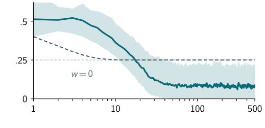
图 横轴是元更新次数（每趟一次，对数刻度），纵轴是学习器所用的步长。实线是 条不重置经验流上步长的中位数，阴影是四分之一到四分之三分位；虚线是每次从 重做左得 、右得 两趟的序列，趋于 ；水平虚线标出 。不重置的流上，步长在最初几次因元梯度的条件均值为 而略升，随后降到 以下。 的奖励改变之后的情形没有画在图里，正文给出逐步的算术：步长 时误差平方 ，步长 时 。
步长能否写定成一个好值，要看后来的经验。设第一趟的步长为 ，预测写为 ，第二趟预报的误差平方之半为 。若第二趟换成右指示，实得 ，损失在 处为零，写定的 给出 ；若第二趟仍是左指示，实得 ，损失在 处为零，写定的 给出 。下一趟换指示时小步长占优，因为第一次的回报不能代表第二次；下一趟同指示时大步长占优，因为回报重复出现，一次写满最省事。设计者写程序时并不知道这条经验流以后属于哪一种。本章让学习器自己调：等第二趟的误差到达，看步长往哪边改能让这次预报更准，按元步长 改一点；换指示时步长从 降到 ，同指示时升到 。第 2 章 2.6 节比较过两种步长： 收敛到样本平均，奖励一变就跟不上；常数 跟得上变化，代价是估计的方差停在 。从第 2 章起这个常数一直由设计者写定，转角的两趟是同一个两难在一条经验流上的样子。
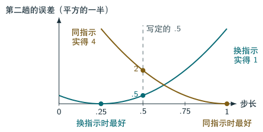
图 横轴是第一趟所用的步长 ，纵轴是第二趟预报的误差平方之半 。蓝绿曲线对应第二趟换成右指示、实得 ，在 处为零；金色曲线对应第二趟仍为左指示、实得 ，在 处为零；虚线标出写定的 ，两条曲线在这里分别取 与 。没有哪个写定的步长对两种后续都好。
让后来的经验调规则，有五处困难。第一，评价要等。第 2 步那次写入，要等到第 6 步一份没有参与写入的样本才能检验；若拿刚拟合过的 计分，损失 随步长单调下降，元梯度会把步长一路推向 （23.1 节）。
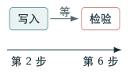
图 横向是时间：第 2 步“写入”预测，第 6 步“检验”这次写入，中间的“等”表示检验样本必须晚于写入、不参与写入。一次写入的好坏要等后来的样本才能评。
第二，单次会指错。第二趟换指示时元梯度为 ，应调小步长；同指示时为 ，应调大。两种指示各占一半，平均为 ，这一次的 恰与平均方向相反。一次元更新只是一份嘈杂样本，要用很小的元步长把许多次平均起来（23.1、23.2 节）。
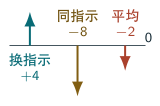
图 箭头是元梯度的符号与大小：第二趟换指示时 （步长调小），同指示时 （调大），两者等可能时平均为 。单个后续样本给出的方向可能与平均方向相反。
第三，改规则会改数据。预报参与选路时，改步长会改变以后走哪条路，看到的数据也跟着变（23.3 节）；23.5 节更进一步，让网络跨环境学出整条更新规则。
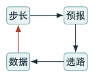
图 环路依次经过步长、预报、选路、看到的数据，再回到步长。预报参与选路时，改规则会改变用来评价规则的数据。
第四，准则有空子可钻。前三条都默认外层准则由世界给出。外部回报稀疏，用意外、学习进度这类更密的信号来调更方便，可这些信号由学习器自己算，它躲进什么都不发生的暗处就能使意外最小（23.4 节）。
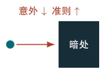
图 圆点是学习器，箭头指向暗处，上方标着“意外 ↓ 准则 ↑”。暗处的观测恒为 ，一次就能预测准，意外最小；把意外最小当外层准则，学习器会往那里走，外部回报却随之落空（23.4 节的四处小世界）。
第五，调久了学不进。同样多的新样本，老化的学习器误差降得少，这就是可塑性丧失，要与遗忘分开测量（23.6 节）。23.7 节再把练什么、提什么问题这类离散选择也交给主回报。
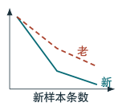
图 横轴是变化后到达的新样本条数，纵轴是误差；红色虚线是老化的学习器，蓝绿实线是新的学习器。同样多的新样本，老化的学习器误差降得少。
不同意见 有人认为把步长调小与可塑性丧失放在同一张图里有误导。表格预测器的步长随时可以再调大，元梯度在世界变了以后也会把它往回推；难以逆转的是神经网络里单元失活、权重变大这类结构变化。也有人认为步长逐渐变小就是平稳问题里该有的样子，只在世界会变时成为缺点，开头图中的变化点是人为放进去的。还有人认为这五处困难并不平行：评价要等、单次会指错是所有随机优化共有的问题，属于元学习自身的是规则改数据与准则有空子可钻两条；可塑性丧失主要是深度网络的问题，不调规则、只用写定步长的网络学得足够久也会出现。
第 17–22 章学习预测、状态、技能和后果模型，每一项都由事先选定的规则更新。步长给出写入的幅度，资格迹决定误差分给哪些过去的特征，训练目标规定向什么学习。这些选择决定学习器遇到下一条经验时已经学到什么，它们由设计者写定，这是到第 22 章为止一直保留的条件⑦。元学习（meta-learning）撤去这一条，用后续表现改进产生更新的规则。对于后果预测，可以用尚未参加本次更新的观测检验新预测；对于控制，更新还会改变行动，也就改变学习器以后取得的经验。两种评价要求不同的信息。在第 14 章的分层视角中，系统 3 的动作作用于智能体自己（系统 3 是本课的提法），其中“分配学习”一栏写的是步长、写到哪里，以及练什么、留什么；本章是这一栏的展开。
对象是一条不重置经验流上的学习器。行动后到达的经验记为 ，学习记忆 包含权重、迹、优化器状态与已学知识，按 改写； 是更新规则。 称为元参数，指更新规则中由外层准则而非内层更新改写的参数，例如步长 、迹衰减 、对数步长 、训练折扣，乃至生成训练目标的元网络；本章的 只表示元参数。已知规则的形式 与已到达的经验，可微时还知道 、；未知环境的响应律，也未知改一次 会使以后的预测和回报怎样变化。目标分两种：固定行为时，减小尚未参与拟合的后续样本上的损失 ；行为随规则改变时，增大共同期限内的 。核心更新为 其中 是元步长。长 lifetime 下还要求同样多的新样本仍带来同样的改善。相对第 22 章撤去的条件是条件⑦：学习规则由设计者写定。仓库主例：第 2 步左转得 ，共享预测从 写为 ；第 6 步右指示左转实得 ，元梯度把步长由 调为 。
预算 元更新与内层更新共用每步计算；敏感度 的存储与 的维数成正比；整条经验流不重置，也不另起新的智能体。
怎样判定做成了 固定行为时看留出样本上的损失；行为随规则改变时看共同期限内的 ；长 lifetime 后，同样多的新样本仍带来同样的改善（23.6 节的学习曲线 ）。
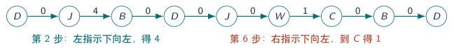
图 仓库主例的八步记录，沿用第 15 章，第 18 章逐步画过；箭头上标出每步奖励。第 2 步在左指示下向左到 得 ；第 5、6 步在右指示下向左，经 绕到 得 ；八步共得 。本章的两次回报 与 都取自这条记录。
不同意见 有人认为元学习要在许多环境、许多新智能体上才有意义，23.5 节的 DiscoRL 就是这样做的，单一 lifetime 内的元梯度噪声太大；本章主例中单个后续样本确实可与条件均值反号。也有人认为外层准则只要学习器影响得了，就会留下空子，所以必须锚定外部回报，23.4 节采取的就是这一立场。
学什么，调多细课件
章首的五处困难都围绕一个步长展开，学习规则里由设计者写定的部分却不止步长。元学习能改的东西可以沿两个轴排开。纵轴是规则里哪一部分交给经验：写多少，即步长 ；记给谁，即信用分配里的折扣 、迹衰减 和兴趣权重，它们决定一次误差记到多远的过去、记到哪些状态上；学什么，即训练目标、辅助问题与练习选择；怎么写，即整条更新规则，或网络里哪些单元该换；怎样算好，即外层准则本身，以及学习器对自己改动的检验。横轴是调出的数落到多细的单位：整个智能体共用一个数，按不同历史（时刻、状态）取不同的数，按模块与单元分组，或者每个具体参数各有一个。
| 整个智能体 | 不同历史（时刻、状态） | 不同模块与单元 | 具体参数 | |
|---|---|---|---|---|
| 写多少 | 23.1 节：一个步长 | 本课未收入：按情境调的步长 | 23.2 节：两模块各一个步长 | 23.2 节：IDBD、TIDBD |
| 记给谁 、、兴趣 | 23.2 节：元学 、 | 文献：按状态取的 （White 与 White，2016）；选择性信用分配（Chelu 等，2022） | 本课未收入：各模块各自的 | 本课未收入：逐参数的迹衰减 |
| 学什么 | 23.5 节：元网络生成训练目标 | 23.7 节：何时练、练哪项 | 23.7 节：辅助问题 | — |
| 怎么写 | 23.5 节：整条规则（LPG、DiscoRL） | 本课未收入：随情境换规则 | 23.6 节：替换老化单元 | 文献：学到的优化器（Andrychowicz 等，2016） |
| 怎样算好 | 23.3 节：到期主回报 | 23.1 节：晚于写入的样本 | 23.4 节：内部信号作准则 | — |
表 元学习的两个轴。标节号的格子本章有专门的讨论；标“文献”的格子只给出处，本章不展开；标“本课未收入”的格子表示本课材料没有对应内容，不表示文献里没有人做过。
粒度越细，元参数越多，每个元参数分到的证据越少，元更新的噪声越大，记录敏感度所需的存储也越大。23.2 节末的两模块例子会显出这一点：每个参数一个步长，比每个模块一个步长调得慢。粒度因此要与证据的多少相配，分得比证据能支撑的更细，调整反而变慢。第 14 章把调节学习的这一层称为系统 3（本课的提法），这张表可以看成系统 3 里“分配学习”一栏按对象和粒度的展开，这一对应也是本课的整理。
元学习的一般形式课件
表中各格的方法共用一个两层形式。内层是第 15 章的学习器，学习记忆按规则改写： 外层估计外层目标 对元参数的梯度，记估计值为 ，沿它走一小步： 行为固定时， 取后来样本上损失的负值；行为随规则改变时， 取共同期限内的主回报 。上面本章问题里的核心更新是 的情形。
粒度用一个分组映射表示。把记忆中可写的坐标编号，坐标 属于第 组，同组共用一个元参数，，第 个坐标的步长为 整个智能体取 ；按模块分时，表示、价值、模型各是一组；按参数分时，每个坐标自成一组。按历史分要换一种写法，元参数经历史的特征 进入，，同一个权重在不同情境下用不同的步长，按状态取的 属于这一类。步长写成指数，既保证为正，也让元更新在对数尺度上走，IDBD 就是这样做的。
两条路径都要用到敏感度 ，即记忆对元参数的导数。 既直接依赖 ，又经 间接依赖 ，链式法则给出 23.1 节的标量递推 是它的特例：那里 ，。
第一条路径沿写入链。后来样本 上的损失 只经记忆依赖 ，于是 梯度等于敏感度的转置乘损失对记忆的梯度。23.1、23.2 节和 23.5 节 DiscoRL 的外层都走这一条，要求整条写入链可导。
第二条路径经抽样。 改变的是以后抽到什么，例如行动、练习哪项技能、提哪个问题，记第 步抽到的选择为 。回报对 不可微，抽样分布却可微；用恒等式 ，再删去 之前的回报（它们与 的抽样无关，乘上分数后期望为零），得到 其中 是 之后到期限的回报。 对 的导数仍要经过 ，两条路径在这里汇合。23.3 节给出证明，23.7 节把它用于离散选择。两条路径的分法是本课的整理，章末本章小结的方法对照逐法回收。
存储随粒度增长。 的行数是记忆的维数，列数是元参数的组数 ，共有 个数。参数各一组时完整的 是方阵，IDBD 只保留对角线，每个权重记一个 ，代价与普通更新同阶，舍掉的是权重之间的交叉影响；整体一组只要一列；按模块分介于两者之间。
元步长 本身仍是设计者写定的数。再加一层去调它，又会多出一个元元步长，层层上推。一种停法是在某一层写定，并要求结果对那一层的数不敏感，23.2 节的四区仓库检验的就是这一点。另一种是自指：把 并进记忆 ，让规则也改写自己，Schmidhuber（1987，学位论文）最早讨论这种设计。内外两层合成一层以后，外层准则必须锚定在学习器改不了的信号上，这是 23.4 节的问题。
检验学到的元规则课件
调出来的规则怎样才算有效，可以按三层嵌套来检验。最里层是一次写入，23.1 节用一份后来到达、没参与这次写入的样本检验它；中间一层是元参数 ，用到期的外部回报检验，23.3、23.4 节讨论；最外层是整条规则，23.5 节的 DiscoRL 把发现的规则冻结，放到没见过的环境里从头训练新学习器来检验。三层的共同点是检验信号来自受检的那一层之外，受检的东西改不动它。信号一旦改得动，例如 23.4 节里学习器躲进暗处把意外压低，检验就失效了。
具体的判据有六条，列在下表。
| 判据 | 做法 | 本章出处 |
|---|---|---|
| 时间留出 | 计分样本晚于写入 | 23.1 节 |
| 准则锚定 | 外层只用学习器改不了的信号 | 23.4 节的防线 |
| 配对对照 | 与扫过网格、调好的写定规则比，同种子、同数据，并计入元更新的计算 | 23.2 节的实验 |
| 初值稳健 | 起始步长与元步长各换几档，结果应当靠拢 | 23.2 节的四区仓库 |
| 学得动 | 换任务以后，同样多的新样本仍带来同样的改善 | 23.6 节的定义 |
| 迁移 | 冻结规则，在新环境里新训学习器 | 23.5 节 |
表 检验学到的元规则的六条判据。
时间留出一条若不满足，元梯度会把步长推向越大越好，章首第一处困难算过这件事。配对对照一条防的是另一种错觉：23.2 节的四区仓库里，写定步长 已近最好，IDBD 只多出很少；不与调好的写定规则配对比较，就会高估元学习的好处。初值稳健与学得动两条分别对应 IDBD 的一个用处（起步选错时把结果拉回）和长 lifetime 的要求。这几条判据与 23.4 节的防线互相补充：防线说外层准则怎样不留空子，判据说怎样确认调出来的规则确实比写定的好。
还有一种检验是让学习器自己做，可称为自我验证。先预报一次改动在后 步会带来多少改善，等这 步过去再与实得对照；预报错了就收紧对这类改动的信任。这是本课的整理，文献里还没有成型的算法。23.1 节的元梯度可以看成它的最简形式：上一次写入预言了后来的预测，后来的样本检验它，检验结果改写步长。文献中有两端的做法。Schmidhuber（2003）的 Gödel 机要求先证明改写会提高以后的表现才执行改写，在实际问题里很难办到；Zhang 等（2025）的 Darwin Gödel 机放弃证明，在编程基准上实测，留下实测更好的版本，于是基准本身成了要防的、可钻空子的准则。
元学习的四种设定课件
文献里的元学习可以按外层循环跨多长分成四种设定。
| 设定 | 外层跨多长 | 学什么 | 怎样检验 | 代表 |
|---|---|---|---|---|
| 流内在线 | 一条经验流 | 步长、、、内部奖励 | 后来样本、到期回报 | IDBD（1992）；超梯度（Baydin 等，2018）；元梯度（Xu 等，2018） |
| 跨学习器发现 | 许多学习器与环境 | 初值、逐参数步长、整条规则 | 冻结后在新环境新训 | MAML（Finn 等，2017）；Meta-SGD（Li 等，2017）；LPG（Oh 等，2020）；DiscoRL（Oh 等，2025） |
| 写进激活 | 任务分布，部署时权重不动 | 循环网络怎样读经验 | 新任务几回合内的回报 | RL（Duan 等，2016），本课未收入 |
| 改写自身 | 规则自身也可改写 | 改写规则的规则 | 先证明，或在基准上实测 | Gödel 机（2003）；Darwin Gödel 机（2025） |
表 元学习的四种设定，按外层循环跨多长排列。
流内在线一类只有一条不重置的经验流，外层和内层同时在跑，元参数用流里后来到达的样本或到期的回报来调；它最贴近持续学习的问题，也是本章主线。跨学习器发现一类让外层看许多学习器在许多环境里从头学，要能反复重置学习器，离开了单条经验流的设定；23.5 节讲它，是因为它给出了规则本身也能学的最强证据。写进激活一类训练一个循环网络，部署时权重不动，网络靠隐状态在几个回合内适应新任务，学习发生在激活里，外层仍是在任务分布上训练权重。改写自身一类把规则自己也当作可改写的对象，即上一小节“再上一层”所说的自指。
四种设定的检验办法各不相同，对应上一小节的判据。流内靠时间留出，跨学习器靠迁移，写进激活靠新任务上的快速回报，改写自身靠证明或基准。持续学习的要求，即一条流、不重置、lifetime 很长，只在第一种设定里原样出现，其余三种都要借助重置或任务分布。
本章七节排成一条链，每节处理上一节留下的一个困难。23.1 节在仓库主例上手算一次元梯度：第一次回报写入共享预测，第二次回报检验这次写入，敏感度 把两者连起来；它只调一个标量步长，单个后续样本的方向也可能与期望相反。23.2 节把同一想法推广到每个权重各有步长，并与 Adam 对比：Adam 看梯度有多大，IDBD 与元梯度看上一步走得对不对。这两节都假定行为固定；学到的参数一旦参与选路，改变规则也会改变取得的经验，23.3 节给出有限期主回报对规则参数的梯度。主回报稀疏，要等到期限，23.4 节问能否换用更密的外层准则；信号越密，学习器越容易自己刷高它。即便准则选对了，可调的仍只是设计者写好的规则中的几个数，23.5 节的 DiscoRL 让元网络生成训练目标，在许多环境中发现规则，外层仍用外部回报。发现阶段依赖许多可重置的智能体。部署中的学习器只有一条 lifetime，并会随着学习的延续失去习得新规律的能力；23.6 节定义并测量这种可塑性，介绍特征替换。替换规则本身仍是手写的，第 21、22 章里练哪项技能、提哪个问题也靠手写规则，23.7 节把这类离散选择交给主回报。各部件由此分别得到信用，但部件各自变好不保证整个学习器变好，这是第 24 章要撤去的条件。章末的本章小结回头把各法按影响怎样传回元参数归为写入链与抽样两条路径，按粒度整理文献中的证据，并讨论评价窗口取多长。
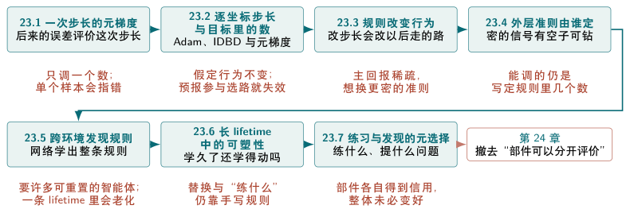
图 上下两行依次是 23.1–23.7 节与第 24 章；方框写各节的方法，框下红字是这一步之后仍留下的困难，箭头指向处理它的下一节。
不同意见 有人认为把外层准则放在 23.4 节太晚：前三节已经默认了外层准则，读者应当一开始就知道它可以另选；也有人认为它应放在全章最后，因为它对 23.5–23.7 节同样适用。本章把它放在调几个数与发现整条规则之间，因为规则越自由，准则留下的空子越多。
下表按“方法—解决的困难—留下的困难”排列各节，留下的困难由下一行处理。
| 节 | 方法 | 解决的困难 | 留下的困难 |
|---|---|---|---|
| 23.1 | 单步元梯度 | 用尚未参与拟合的后续回报评价一次写入的幅度 | 只有一个标量步长；单个后续样本噪声大，主例的 与条件均值 反号 |
| 23.2 | IDBD（对照 Adam）；元学迹衰减 与训练折扣 | 每个坐标各有自己的步长，有用的输入一再得到证实而放大 | 假定行为固定；参数一旦参与选路，漏掉采样路径 |
| 23.3 | 有限期元梯度：敏感度 加动作分数 | 计入规则经动作概率改变后来经验的作用 | 主回报稀疏而迟到；改用更密的准则，学习器可能自己把它刷高 |
| 23.4 | 三层外层准则；锚定外部回报与留出样本 | 内部信号只作加项，去留由学习器改不了的准则决定 | 可调的只是写好的规则中的几个数，函数形式仍由设计者写定 |
| 23.5 | DiscoRL：元网络生成训练目标 | 在多个环境中发现整条更新规则，再迁移给新智能体 | 发现靠许多可重置的新智能体；单一长 lifetime 中学习器会老化 |
| 23.6 | 学习曲线 ；休眠比例与有效秩；持续反向传播 | 区分可塑性丧失与遗忘，用特征替换恢复梯度 | 练什么、留什么是离散选择，信用来自延迟的主回报 |
| 23.7 | 提议与分配的似然比梯度；细节见章末补充阅读（算法 23.7–23.10） | 用到期主回报给离散的提议、练习选择分配信用 | 各部件分别得到信用，整体未必变好 |
23.1 一次写入步长的元梯度课件
第五步在右指示对应的转角 向左到 ，第六步绕行到 ，得 分。第 17 章保存了转角左转的资格迹，因此这一分使 从零升到 。若还想知道这次写入宜大宜小，需要另一项信息：略改这条学习规则以后，它会怎样改变后来要用的预测？元学习把学习规则的参数作为待学对象，用更新后的表现给先前的更新评分。
两种来路共享的标量预测
预测问题是在转角向左、直到首次进入 或 共得几分。任务在交回前不折扣，到达时的奖励计入回报。这八步中，左指示时向左在第 2 步到 得 ；右指示时向左在第 5 步到 得 ，第 6 步到 得 。按指示分项建表时，两次向左访问不同的表项。第 7、8 步经 回仓，没有再次在 向左。
另设一个只读转角和动作的标量预测器 ，两种指示共享它。行为、奖励和交回边界都保持原样。第一次回报完整时更新 ，第二次在同一读出上检验此前写入的幅度。由于这个预测器不使用出发时的指示，它估计的是混合访问中向左的期望回报。在题设的独立等概率给出指示、固定总向左的策略下，该期望为 。学习器并不知道这个期望，只接收逐次到达的样本。
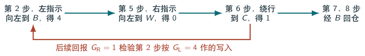
图 从左到右是八步记录中与转角向左有关的几步：第 2 步在左指示下向左到 得 ；第 5 步在右指示下向左到 得 ；第 6 步绕行到 得 ；第 7、8 步经 回仓。红色回指箭头表示后续回报 检验第 2 步按 作的写入。第 17 章的资格迹回答哪次决策该分到奖励；这里问的是先前那次写入的幅度是否合适。
一次可以手算的元更新
从 开始，按时间先后处理这两次左转：
| 原始步 | 收到或使用的信息 | 计算 |
|---|---|---|
| 2，到 | 第一次回报 | 写入 ，同时存敏感度 。 |
| 5，在 | 即将向左，尚未得到本趟回报 | 记录预报 。到 后得到 ，继续累计奖励。 |
| 6，到 | 第二次回报 | 对已经报出的值计分，。 |
| 6，计分后 | 梯度 | 取元步长 ，更新 。 |
第一次更新影响第二次预测的路径是 。第一段的导数 在第 2 步就可以保存；第二段的误差要等到第 6 步才能取得。此时更新的是供以后使用的步长。第 5 步已经报出的 、第 6 步实际得到的 ，都不会再回头改写。固定这两趟样本，，在 处导数为 ；若第一次就用 ，损失降为 。调整后的 和第 17 章 Sarsa() 写入 的 数值恰好相同，一个是学习步长，一个以奖励为单位。
元参数、外层损失与敏感度
把上面的算例写成一般形式。内层更新记为 ，其中 是学到的参数， 是本次经验。 是元参数：它决定怎样写入 ，这次写入不改变它自身。步长 、迹衰减 、对数步长 都可以充当 。外层损失用一份没有参与本次写入的后续样本 给 计分，。敏感度 在本次写入时即可算出并保存，等 到达后再用。由链式法则，
后续样本说明 该往哪边移，敏感度说明改 能使 往哪边移，两者的内积给出 的修正方向。主例中 ， 是标量 ，。
易错 检验样本必须晚于写入。若用第 2 步刚拟合过的 给 计分，，在 上随 单调下降， 处导数为 ，元梯度会一直把步长推向 。这是把训练样本当成了检验样本。
保存敏感度，也保留样本的不确定性
令 按已经完成的转角访问计数。第 次访问的回报 完整后写入 ，下一次回报再给这次写入后的读出计分：。这里假定回报序列不随 改变，即行为固定；规则改变选路的情形见下文规则若改变选路。
一次写入的导数。 只对第 次写入求导、把 视为常数时，，于是 上表第 6 步的 就是此式。
共享步长的敏感度递推。 若同一个 也用于此前各次写入， 本身依赖 。记标量敏感度 ，。对 求全导数，得 前项来自本次写入，后项是更早的依赖经本次更新保留下来的部分。首次写入时两种导数相同，表中的 即 。计算顺序须与信息到达的顺序一致：收到 时，先用尚未拟合它的 算元梯度，再用它同时算出 。若先拟合当前回报，再拿它评价同一次预测，就把训练样本当成了检验样本。在 固定的一段数据上可以累加这些导数，到段末再更新步长；若 每步都变， 只是沿实际步长序列的近似敏感度。
对数步长。 后文常令 ，使步长保持为正并按比例调整。链式法则只多乘一个因子 ：，满足 主例中 ，第 6 步 ，对数步长改变 。 是学到的参数对规则参数的敏感度。资格迹把当前误差分给过去参与预测的特征。两者可以一起存放在学习记忆中，但分别来自不同的求导或求和。
一般学习器。 学习器状态 可以包含权重、迹和优化器状态。对 ，相应递推为 ，其中 ；上面的 与 是它的标量特例。标量情形里 ，。这个递推与第 20 章的敏感度 结构相同：一部分来自本次写入直接用到的参数，一部分是旧的依赖经本次更新带过来的；23.5 节 DiscoRL 的 也是这个量。只对当前一步求导，等于丢掉 一项，主例中首次写入前 ，两种做法才恰好相同。截断回传会漏掉部分早期更新的作用。若目标由自举、动作或环境反馈产生，还须说明对哪些参数路径、目标路径和采样分布路径求导，哪些作了近似或截断；行动改变经验分布时的完整递推见算法 23.3。
不同意见 完整的 是记忆维数乘元参数维数的矩阵，深网络里存不下，也算不起。有人主张只保留对角，或只截断到一步；23.2 节的 IDBD 与元学 都是这类近似，代价是忽略跨坐标和更早的影响。
即使导数算得完全准确，后续的一次访问仍只是样本。若第一趟指示为左，第二趟也为左，第二次回报将是 ，样本导数便为 。由题设的指示规律，给定第一次为左，对下一次回报取期望得到的导数为 。实际八步给出的 与这个期望方向相反；若真遇到第二次左指示，步长将升到 。多次观察可以评价步长对同一预测问题的平均作用。Sutton 的 IDBD 用各坐标对数步长的近似敏感度调节线性预测器；上述直接对标量步长求导的算例展示了较简单的情形。Sutton，IDBD，AAAI 1992
非平稳性与元步长的评价时域。 假定旧站的到站时长预测恰好等于旧均值。这次实际晚了一步，步长 使相对于旧均值的预报从 改为 。如果线路持续变慢，下一次仍晚一步，平方误差为 。如果每一趟独立地早到或晚到一步且两者等可能，下一次的期望误差却为 。两种线路会交给学习器相同的本次误差，在 内却偏好相反的步长。判断哪一特征上的写入值得加大，需要随后的反馈以及过去写入的记录。Sutton，IDBD 的线性监督学习设定
元梯度 RL 还允许内部学习改变折扣或自举参数。此时要固定外层评价的回报定义，否则只需缩短评分时域，就可能让长期延误看起来无关紧要。学得的规则能否辨认新线路的变化速度，则要留出未见的变化时长和部署期限，让固定规则得到相同的调参预算。若优势仅存在于开发时域，证据只关乎在那一时域内选择更新尺度。待预报参与选路，还要计入规则通过采样路线改变后来经验的作用。Xu、van Hasselt 与 Silver，NeurIPS 2018，§1 相关研究问题
延伸：单次元导数的方向取决于后续目标
元导数与敏感度递推见正文敏感度推导，对数步长形式见 23.2 节元梯度步长。下面用一组数看单次导数的符号。取 、、，更新得到 。按 ，若下一目标也是 1，导数为 ，沿负梯度更新 会增大步长；若下一目标是 ，导数为 ，就会减小步长。下一目标要等到下一次反馈才可使用，不能提前进入当前动作。
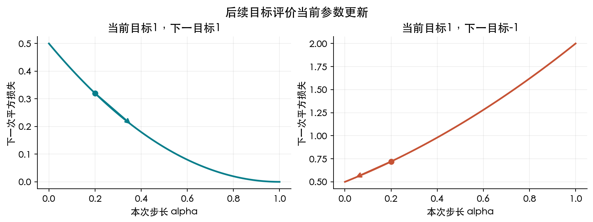
图 23.1 两图都固定当前 。横轴是本次更新步长 ，纵轴是更新后在下一目标上的平方损失；左图下一目标仍为 1，右图下一目标为 。圆点标出 ，箭头是该点元梯度建议的步长变化方向：左图增大步长，右图减小步长。图说明后续目标不同时，同一次写入怎样得到相反的评价。曲线按公式计算。
由此可以研究让步长、归一化或更新规则适应当前经验，而不依赖不断的人为重调。可检验的问题是同样经验和计算预算下，学到的更新方式能否改善未来预测与 lifetime 内的奖励；单次元导数正确只验证了计算。
23.2 逐坐标步长与目标里的数课件
23.1 节的转角算例只有一次写入。下面换成三站路网的时长预测器，再逐项看一遍其中的量。把 A 到 C 的时长估计暂时缩成一个数 ，每到站便用实测时长 更新 。若 、，加大步长会让新估计更接近刚走过的这趟路。对下一趟的预测是否也随之改善，要等新的时长到来才可检验。先固定起点、选路行为与技能版本，便能研究步长怎样通过刚才的参数更新影响后来的预测误差。
一次写入的元导数、共享步长的敏感度递推和计算顺序，已在 23.1 节的转角算例中推出，见敏感度推导。这里取对数步长 与外层损失 ，把那里的回报 换成实测时长 。只看最后一次写入、固定 时， 取 ，新预报 。若下一趟耗时为 7，导数是 ，下一次采用的步长会增加；若下一趟耗时为 6，导数是 ，步长会减小。二者是同一次 6 到 6.2 的写入在两种可能后续下的评价。若已知后续时长的条件分布，可将两种情形及其他可能时长加权得到期望梯度。一个行动者一次只能观察其中一项。
同一步长若还参与了更早的写入，单次导数只回答最后一次该移多少。这时把上式的 换成敏感度 ，它按 、 递推，推导同上。
一次写入留下的影响有多长？从同一个 、同一次到站 出发，一个副本取步长 ，另一个仅此次取 。两者的预报立即相差 步。此后若收到完全相同的时长样本，均以固定步长 更新，每次写入后的差就乘 ，再更新 次后只余 步。这算的是只改一次步长的影响。敏感度 则计入了每次都使用同一元参数的影响。
把时长接回选路后，即使这 步的差只让一次技能排序翻转，两个副本也可能从此收到不同的时长和奖励，差值便不再遵循上述衰减。最小的例子只有一次动作：令 、，规则使 。固定已记录的动作，样本奖励对 的导数为零；对该规则产生的动作取期望，。要评价控制中的元学习，必须计入更新对采样行为的影响。当 也逐步改变时，还要指明评价哪一次决定，或哪一段共享的规则。Xu、van Hasselt 与 Silver，§1
三种逐坐标步长课件
一个预测器常有成千上万个输入，其中多数与目标无关。给每个权重一个自己的步长，第 9 章和第 13 章的 Adam 已经在做：它为每个参数记两个滑动平均：梯度的平均 （一阶矩）与梯度平方的平均 （二阶矩）。偏置校正后，更新量是 。二阶矩把各维的梯度尺度拉平。一阶矩取近期梯度的平均，所以更新方向可与当前梯度不同；方向前后无关的维，一阶矩相互抵消，走得较慢。Adam 看的是近期梯度的统计，不看后来的误差； 由设计者写定。
IDBD 与 23.1 节的元梯度回答另一个问题：往这一维多走，后来的误差是否一再证实这一方向。IDBD 为每个权重记一个量 ，大致是最近把这个权重推往哪个方向、推了多少；新误差项 与 同号就把这一维的步长调大，反号就调小。在线性预测上，从元梯度推下去，再略去不同权重之间的交叉敏感度，就得到 IDBD； 是敏感度 在第 维上的版本，推导见下文。所以 IDBD 是元梯度的一种近似。
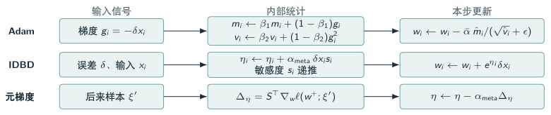
图 三行各是一条链，从左到右是输入信号、内部统计、本步更新。Adam 读梯度 ，记一阶矩 与二阶矩 ，按 更新。IDBD 读误差 与输入 ，按 调对数步长，再按 写入。元梯度读后来样本 ，算 ，按 调元参数。前一种按梯度的矩缩放，后两种按后来的误差调步长。
| 方法 | 更新依据 | 能调整的量 | 成立条件或边界 |
|---|---|---|---|
| Adam | 梯度一阶、二阶矩的近期平均 | 每步的方向与幅度 | 不看后来的误差； 写定 |
| IDBD | 当前误差、输入与敏感度 | 逐坐标对数步长 | 线性预测、固定行为；只留对角敏感度 |
| 元梯度（23.1 节） | 未参与写入的后来样本的损失 | 使写入可导的任何 | 写入链可导；单个后来样本嘈杂 |
差别落在更新依据一列。设想四千个输入里只有一个与目标有关。各维梯度幅度相近时，Adam 的二阶矩归一给出相近的尺度；有用的一维接近目标以后，它的梯度也由其他各维的噪声主导，一阶矩的方向不再一致。为了不让四千维噪声淹没，整体步长必须很小，有用的一维也学得慢。IDBD 看方向：有用的一维每次误差都朝同一方向推，步长越来越大；噪声各维的推动方向前后无关，步长保持很小。
不同意见 Adam 的设计目标是在梯度尺度差别很大时稳定训练深网络，并不负责从噪声里挑出有用输入；在常见的深度学习任务上，别的方法很难替代它。IDBD 只在线性预测上有严格推导，用到非线性网络要做近似，多出的元步长 也要调。也有人主张两者可以叠加：先用 Adam 式的归一处理尺度，再在上面学一层步长。
IDBD：怎样给不同线索不同的步长
一条线路的到站时间由几项特征共同预测。某个特征对应的真实系数会缓慢漂移，另一个只是噪声。前者若很久不改便跟不上变化，后者若次次大改又会扰乱预测。Sutton 的 IDBD 为线性预测器的每个坐标维护独立步长，并用新到来的标签评价过去对这个坐标的改动。
算法 23.1 逐样本线性预测的 IDBD。 输入依次到来的监督样本 ，指定元步长 。原文把对数步长记作 、元步长记作 ；本章已用 表示技能的交回概率、用 表示策略参数，这里改记为 与 。
- 初始化权重 、对数步长 ，每个权重的敏感度 。
- 收到 时先预测 。标签 到达后，用更新前的全部权重算一次 ；各坐标共用这个误差。
- 对每个坐标先写 ，再取 。
- 用新步长写 ，并令 ，其中 。处理下一笔样本。
乘以 的理由。 是新标签给出的修正方向， 是过去实际位移的衰减和。同号时，这次误差支持过去的方向，步长随之增大；异号时，步长减小。例如 ，本次 或 会使对数步长分别增加或减少 。同样大小的误差，对过去写入的评价可以相反。若 ，该权重、步长和记录都不变；旧位移会等到这个输入再次出现时才发挥作用。
的导数来历。 这是 23.1 节对数步长敏感度递推的逐坐标版本；不同之处在于误差由全部坐标共同决定，需要近似掉交叉项。把本次损失写成 ，，则 。忽略 的交叉项并记 ，得 ，第 3 步就是对数步长上的随机梯度下降。再对 求 ，用同样的近似 ，得 ；第 4 步只是再把衰减系数截在零以上。原文测量的是线性监督模型在目标系数漂移时的追踪误差，实验不含策略控制中的奖励。Sutton，AAAI 1992，式 (3)–(6)、图 2 与实验 1–2
原论文的第一个实验。 每一步来 个输入，各自独立取标准正态。目标是前 个输入各乘 或 再相加，后 个输入的系数为 ；每过 个样本，从 个符号里随机挑一个翻过来。相关的始终是这 个输入，变的只是它们的符号。学习器不知道哪 个有用，也不知道何时翻转。每次运行先学 万个样本越过开头的过渡，再在其后 万个样本上算均方误差。论文图 3 中，固定步长的最小均方学习器（LMS）在最好的步长下均方误差约 ；IDBD 初始步长取 ，在很宽的元步长范围内约 ，标准误小于 。结论段说平方误差降低约 ，内存与计算约为 LMS 的三倍。第二个实验把元步长固定为 、学 万个样本： 个无关输入的步长降到 以下， 个相关输入的步长到 ；用固定步长扫描，误差最小点也在 附近，IDBD 自己找到了最好的步长。
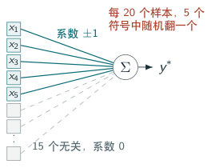
图 实验 1 的设定。左侧方框是 个输入：– 以系数 连到求和节点，下面 个无关输入以灰色虚线连入、系数为 ；求和给出目标 。右上的红字说明每 个样本随机翻转 个符号中的一个。学习器要自己找出哪几维有用，并跟上符号的翻转。
本课照论文设定各做 次独立运行。LMS 扫 档步长，最好的是 ，误差 ，步长到 时发散。IDBD 扫 档元步长，最好的是 ，误差 ；元步长 时 次里有 次发散， 时有 次发散。比值 ，论文的比值 。第二个实验与论文相符：相关输入的步长平均 ，标准差 ；无关输入的步长平均约 ，比论文的 以下略高，它在 万步时还在缓慢下降。不符的一处是，论文说 IDBD 在很宽的元步长范围内都约 ，本课重跑中元步长小时误差明显更高， 时为 ， 时为 。可能的原因有三：元步长小时，步长从 调到 要多步， 万步的过渡期内还没调到位；论文图 3 的横轴范围可能与本课扫的档位不同；论文的约 是读图得来，本身有读数误差。这里只把两边并列，不改论文的数。
学习器不知道 20 个输入里哪 5 个有用，固定步长只能给所有输入同一个折中值。页面按上文设定在同一串样本上同时跑 LMS 与 IDBD，左图是每 500 个样本的均方误差，阴影是第 2 万个样本以后的计分段；右图是 IDBD 给各输入的步长，纵轴取对数，横虚线是 LMS 的步长。默认种子、元步长 时，计分段的均方误差 LMS 约 、IDBD 约 ，有用输入的步长约 ，无关输入约 。“计算过程”按算法 23.1 第 3、4 步列出最近一个样本上 与 的写入。元步长取 ，到第 3 万个样本，有用与无关输入的步长约为 与 ，还没分开，误差约 ；取 ，有用输入的步长压到约 ，误差升到约 。
不同意见 有人认为这个实验恰好落在 IDBD 推导的前提里：输入独立、目标线性、相关维固定，它证明的只是前提成立时有效。也有人指出，元步长太大时 IDBD 会发散，本课重跑也看到了；把一个步长换成一个元步长，调参的负担只是挪了一层，后来的 Autostep 就是为去掉这一层而提出的。
四千个输入，一个有用课件
下面用一个小问题检验上面的说法。 个输入，每一步各自从标准正态抽取。目标 ， 的标准差为 ；符号每 步翻转一次，学习器要一直跟踪。其余 个输入与目标无关。误差量的是超额均方误差，即减去不可约噪声后的均方误差；它等于 相当于一直预报 。每种方法在四档参数中取后半段误差最小的一档；每个设置独立运行 次，每次 万步；IDBD 的初始步长为 。程序见复现附录第 23 章。
| 方法 | 参数网格 | 后半段超额误差（依次） | 四档中最好 |
|---|---|---|---|
| 写定步长 | |||
| Adam | |||
| IDBD | ； 时 次中 次发散 |
写定步长与 Adam 的最好一档都在 附近，在本设定下等于没学：整体步长只要小到四千维噪声淹不没，一千步内就跟不上翻转。IDBD 的误差在头两千步迅速下降，后半段平均 ；曲线呈锯齿，每次翻转后误差先升再降。末步它给 的步长约 ，其余输入步长的中位数约 ，相差七百多倍。本任务中，只有 IDBD 学会了唯一有用的输入。哪一个输入有用，设计者事先不知道，经验能让学习器自己找出来。
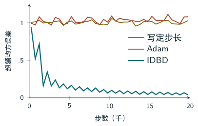
图 横轴是步数（千步），纵轴是超额均方误差，等于 相当于一直预报 。红线是写定步长、金线是 Adam，各取四档中最好的一档，始终停在 附近；蓝绿线是 IDBD，头两千步迅速下降，此后呈锯齿，每次符号翻转后先升再降。只有按方向调步长的方法学到了那一个有用的输入。
限度有三处。网格只有四档，写定步长与 Adam 在别的档位也许稍好，但跟不上翻转由设定决定。元步长本身也要调，取 时已有一次发散。这是一个示意性检验，设定参照 Oak Lab 在 2026 年的一篇博客。仿照的是： 个输入里只有第一个与目标有关，线性预测器，比较写定步长的 SGD 与 IDBD。改动有四处。博客的输入是每步以 概率取 的二值特征，这里改为标准正态。博客的目标噪声大：每步以 概率加 ，再加方差为 的正态噪声；这里只加标准差 的噪声。博客的目标关系不变，这里每 步翻转一次符号，所以这里考的是跟踪，博客考的是不把噪声吸进权重。这里另加了 Adam 作对照。博客另在 NoisyMNIST 上比较 SGD 与推广到神经网络的 NetworkIDBD。博客只给图示，没有给步长、步数或定量指标；这里的数值都是本课计算的，并非对其结果的复现，只说明一种设定下会发生什么。Oak Lab，Learning from experience instead of curated datasets，2026
不同意见 这个问题偏向 IDBD：输入独立、目标线性、只有一个有用维，就是 IDBD 推导的前提；在深网络里，有用与无用的区分不在单个输入上，Adam 的长处在别处。稀疏正则或特征选择也能挑出这一维；学步长的长处在于能跟着世界变，例如有用的输入换成另一个，这里没有检验。
从监督预测到 TD 预测：TIDBD。 前面的标签每一步立即到达；TD 预测的目标是下一步的奖励加上折扣后的自身估计，目标里含有学习器自己的数。Kearney 等的 TIDBD 把 IDBD 元更新里的监督误差换成 TD 误差，仍给每个特征一个对数步长，用随机元下降来调。论文给了三个场景。第一个是 Sutton 与 Barto 书中的 网格：从 出发任意动作都跳到 得 ，从 跳到 得 ，策略随机，学这个策略的价值； 步、 次运行，与调到最好的固定步长 相比，TIDBD 略有提升，方差更小。第二个是 Mountain Car，在原有特征之外加 个噪声特征，看 TIDBD 能否把噪声特征的步长压下去。第三个是机械臂预测，用 Edwards 等 2016 年录下的数据， 次试验；带替换迹的 TIDBD 在所有 下都优于普通 TD、AlphaBound 与 RMSprop。
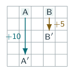
图 TIDBD 论文的第一个场景。网格中从 出发的任意动作都把智能体送到 、得 （蓝绿箭头），从 送到 、得 （金色箭头），其余格子按随机策略移动。学的是这个随机策略的价值，步长按特征分别调。
图 曲线是 Mountain Car 的山谷，方块是小车；下面一排灰块是在原有特征之外加入的 个噪声特征。论文图 3 画出每个特征分到的步长，要看的是 TIDBD 能否把这些噪声特征的步长压低。
图 机械臂示意，数据是 Edwards 等 2016 年录下的传感器流，共 次试验。学习器只对这条录好的流做预测，不选动作；在这份数据上，带替换迹的 TIDBD 在所有 下都优于普通 TD、AlphaBound 与 RMSprop。
与 23.1 节相连的是评价的来源。评价一次写入要等后来的样本，在强化学习里完整的回报要等很久；TIDBD 不等回报，拿下一步的 TD 误差当评价，每一步都能调步长，代价是 TD 误差含着学习器自己的估计，评价本身有偏。这是本课的整理，论文没有这样表述。限度有三处：这是 arXiv 预印本，本课没有找到正式发表的版本；网格上的提升很有限，主要证据来自一个机器人数据集；数据是录好的，学习器只做预测、不选动作，没有碰到 23.3 节“规则改变行为时的元梯度”讨论的问题：改规则会改数据。本课没有重跑，数字都取自论文。Kearney 等，TIDBD，arXiv 2018
不同意见 有人认为比较对象不对等：AlphaBound 与 RMSprop 几乎不需要调参，TIDBD 却多出一个元步长，若给对手同样多的调参预算，差距可能缩小。也有人认为半梯度式的元更新忽略了目标随权重变化这一项，在自举很强（ 小、 大）时可能把步长调错；论文在所有 下都赢，只说明在这个数据集上没有出现这种情况。
已解决的部分与条件 输入独立、目标线性且相关维固定时，IDBD 能把步长集中到有用的输入上，上面的四千个输入实验就是这种情形（Sutton，1992）。Autostep 用误差与敏感度的滑动尺度把元更新归一化，使同一个元步长在更宽的输入尺度上可用（Mahmood、Sutton、Degris 与 Pilarski，2012）。
已有做法与假设 常见做法是把元步长写定为一个较小的数，并假设它比原步长不敏感得多：错一个数量级，结果只变一点。这一假设在上述实验里大体成立，但元步长 时十次有一次发散，说明钝的范围有边。
未解决的部分 每加一层自适应，就多一个要写定的数。从第一性原理看，这一退层只有在每升一层、结果对写定数的敏感度都明显下降时才收敛；否则只是把调参从一层搬到另一层。哪些条件下敏感度会逐层下降，还没有一般的结论。
怎样检验 操控元步长，跨三个数量级取值，在平稳、慢漂移、突变三类经验流上各跑一遍。基准是事后最好的写定步长。对每个元步长画超额误差，量出超额误差不超过基准某个比例的元步长区间宽度；再加一层（调元步长的元元步长）重复，比较区间宽度。重复单位是独立运行，每次有自己的输入与噪声序列。
四区仓库里的步长课件
放到第 15 章的四区仓库（读法）里，规律固定为 R0，但机器人按意图走一步的概率每 万步在 – 之间重抽一次：有时地面好走，有时很滑。B 站的支付仍由第 20 章的灯决定，灯的含义约每 万步翻一次。天花板 是知道当前打滑率和灯的含义、同样以 随机探测时最好的率。学习器都是差分 Q 学习，状态里放灯，只在步长上不同：写定步长 、、、 四档；IDBD（Sutton 1992）给每个状态动作对学自己的对数步长，元步长 ，从 、、 三个初值起步。 万步， 个种子。
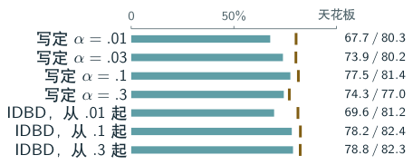
| 比较 | lifetime 率 | 最后 |
|---|---|---|
| 减 | ||
| 减 | ||
| IDBD 从 起减 | ||
| IDBD 从 起减 | ||
| IDBD 从 起减 |
写定步长里 最好，lifetime 到天花板的 。 学得快但抖，最后 只有 ； 最后 与 相近，但要约 万步才到天花板的九成，lifetime 只有 。IDBD 从 起步比写定 高 ，区间不含零，但不到本课定为有意义的的 ；从 起步高 ，回到最好那一档附近；从 起步高 。在这个世界里，IDBD 的用处是让结果少依赖初始步长，省掉调步长这一步，没有超过调好的写定步长。
看每次打滑率变化之后少拿的奖励：IDBD 从 起步比写定 每次少损失约 个单位奖励，区间不含零；写定 也比 少损失。一种解释是步长小时值估计不随打滑率的变化大幅改写，变化后的短期损失也小；这在 lifetime 率里看不出来，本课没有再拆。
所有学习器的最后 都停在天花板的八成左右。这里混着第 20 章的问题：灯的含义会翻转时，把灯直接放进状态有净代价。所以这一节只比较步长，剩下的两成不全归步长。
不同意见 有人会说，元步长 也要调，IDBD 只是把一个要调的数换成了另一个。这里 取 和 ，从 起步时都有效，取 时几乎不动；对 的敏感度比对初始步长的低，但 仍要调。
步长分到多细课件
IDBD 给每个参数一个步长，23.1 节给整个学习器一个步长，两者之间还可以给每个模块一个步长。本章开头的一般形式用分组映射 把三种粒度写成同一个式子，这里用一个线性预测的例子比较它们。线性预测器有十个输入，目标是这十个输入的加权和加上方差为 的噪声。前五个权重属于模块甲，它们的目标每一步做一次标准差为 的随机游走；后五个属于模块乙，目标固定不动。可以把甲想成负责环境里一直在变的那部分，乙负责不变的那部分。
元规则仍是算法 23.1 的 IDBD，只改一处：同一组的坐标共用一个对数步长，元更新把组内各坐标的 加起来， 整体一组时十个坐标全加；按模块分时甲、乙各加五个；按参数分时各管各的，就是原版 IDBD。计算取 ，起始步长 ，学 万步， 个种子取中位数；误差取最后 步的均方误差，噪声本身占 ；写定步长从 到 扫了五档作对照。
| 粒度 | 甲的步长 | 乙的步长 | 误差 |
|---|---|---|---|
| 整体一个 | |||
| 每模块一个 | |||
| 每参数一个 | |||
| 写定最好 |
表 三种粒度的分组 IDBD 与扫出的最好写定步长。步长为两万步时的值，误差为最后 步的均方误差。
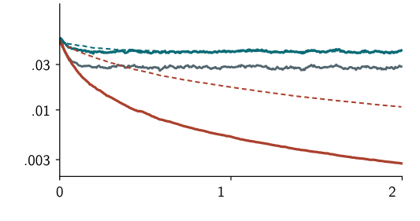
图 横轴是步数，纵轴是步长（对数刻度）。实线是每模块一个步长，虚线是每参数一个步长，灰线是整体一个步长。模块甲（目标在漂）的步长升到约 ；模块乙（目标不动）的步长在每模块一组时一路降到约 ，每参数一组时两万步后只降到约 。
整体一个步长调到约 ，误差 ，与扫出的最好写定步长 几乎一样：元学习替设计者完成了调参，没有超过调好的写定步长。每模块一个步长时，甲调到约 ，乙降到约 ，误差 ，比任何一个共用的写定步长都低。两个模块要的东西相反，甲的目标在动，步长大才跟得上；乙的目标不动，步长越小越能把噪声平均掉；共用一个步长只能在两者之间取折中。
每参数一个步长时，甲同样调到约 ，乙两万步后只降到约 ，误差 ，介于两者之间。差别在证据：每模块一组时，乙的元参数每一步收到五个坐标的证据；每参数一组时，每个元参数只收到一个。把元步长放大五倍到 ，每参数一组的乙也降到约 ，误差 。这个例子里同一模块内的五个坐标性质相同，分组相当于把证据合起来用，换来更快的调整；若同一模块内的坐标性质各不相同，分组会把不同的需要平均掉，这时更细的粒度才有好处。粒度要与证据的结构相配，这是一般形式里粒度越细则每个元参数的证据越少这一关系的一个实例。 ### 迹衰减的敏感度与检验样本 {#junction-meta-lambda}
回到分指示表，固定第五步之前的零表项。在右指示时的转角向左，一步目标 ，两步目标 。混合目标是 。于是 给出 ，这次写入对 的导数为 。此处首次访问和零初值使两步前向计算与第 17 章的后向更新在这一项上相同。
若以后在 再次向左，可用事先锁定的 与那次交回回报 计算样本梯度 。第 7、8 步只经过 ，不能填入这个 。第 6 步的回报已经用于构造训练目标，重放它能核查旧数据的拟合；把它直接算作后续评价样本会改变元目标。Xu 等的预测设定在后续片段上按预先规定的评价回报为新的参数计分，将梯度通过内层更新传给训练用的回报参数。Xu、van Hasselt 与 Silver，NeurIPS 2018，式 (4)、(6)–(10)
有了这个样本梯度，迹衰减按投影梯度步更新： 把结果投回允许的区间。也可以令 ，在 上做无约束的梯度步，这时 ，靠近边界时步子自动变小。
这个算例有三处前提。其一，表项是独热的：其他输入的预测梯度与这一项正交，它们的误差不评价这次 写入；特征共享时，别处的误差也会给 提供信号，结论可能不同。其二，这个特例不说明在任意的在线 Sarsa 轨迹上前向与后向计算逐步相同。其三，后来的检验样本要求的是时间上在写入之后、没有参与这次写入，不要求与训练样本统计独立；还要假定等待期间别的写入没有改掉这一项，否则锁定的 已不是要评价的那次写入。
元梯度预测：用后续经验决定是否多等一步
除了改变预测器每次写多少，还可以改变它向哪个目标学习。固定采样策略和折扣 ，从 出发，两步经验给出 和 。 在一步后自举， 多等一个真实奖励才自举。沿用第 7 章的终止约定：自然终点的尾值为零；若第一步即终止，两种目标都等于 。现在要学习两种目标的混合比例。
算法 23.2 用后续误差学习训练用的 。 这是 Xu、van Hasselt 与 Silver（2018）元梯度预测的两步特例，采用只回传一次参数更新的近似。评价回报的定义预先固定，训练混合比例可以改变。
- 初始化不读取元参数的预测器 、标量 ，设内外步长 。本轮取训练片段，令 、。
- 置 ，更新 。训练目标对 按半梯度处理，仍保留它对 的依赖。
- 写下这一次更新的敏感度 ；此导数固定旧 和训练样本。
- 在随后一段经验的起点 ，用预定规则算出 ，置 。在外层半梯度中固定 ，令 。保留 ，重复以上过程。
什么情况下这次经验不提供选择依据？ 若 ，无论 如何改变，训练更新都相同。若后续读出的梯度与 正交，这次写入也不能一阶改变后续预测。反过来，设两个读出对同一标量权重的导数都是 1，取 ，则 。若后续低估一个单位，元更新就将 增加 ，下一次向较长目标多移一点。这样衡量的是训练选择对后续预测的作用；若把评价规则也随 改变，测量的问题就变了。
论文图 1 在链式马尔可夫奖励过程中，用随状态变化的元参数检验了在哪些状态适宜自举。原文还报告 Atari 控制结果，使用行动者–评论者、V-trace 与并行轨迹批量。上面的单次预测更新只说明其中的元梯度机制。Xu、van Hasselt 与 Silver，NeurIPS 2018，§§1.1–1.3、2，式 (4)、(6)–(10) 与图 1
实证。Sutton 的 IDBD 用相继到来的监督样本调整线性预测器各坐标的步长，在目标漂移的预测任务上检验学习速度。Xu、van Hasselt 与 Silver 把训练折扣和自举参数交给元梯度，以固定外层回报参数评价更新后的策略。原文表 1 的 Atari human starts 条件下，外层折扣 时，学习训练折扣的中位人类归一化分数为 267.9%，固定该折扣的 IMPALA 为 211.9%。在不同表列下，单学 的增益并不一致。这里的深度网络版本用并行轨迹小批量，更新与交叉评价复用轨迹；下一小节的单变量导数只需相邻两次反馈。两种设置都能检验规则调整，所用经验权限不同。Sutton，IDBD，算法和实验 · Xu 等，§§1.3、3 与表 1
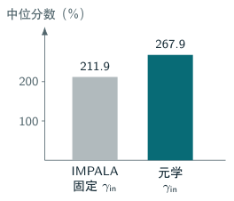
图 纵轴是 Atari 各游戏人类归一化分数的中位数（%，human starts 条件，外层折扣 ）。灰柱是固定训练折扣 的 IMPALA，；蓝绿柱是在线元学 的版本，。训练折扣交给外层回报的梯度，评价准则本身保持不变；若评价回报的折扣也随之改动，分数变化就混入了评价标准的变化。
若一个步长有益的影响要经过许多次更新才显现，只看下一次损失会低估它。Sharifnassab、Salehkaleybar 与 Sutton 的 MetaOptimize 把第 次步长的评价写成未来损失的折扣和，权重为 （，）。当时还没有这些损失，能做的是保存过去各步长对当前参数的加权敏感度，待当前损失到达后再分配信用。若基础优化器有动量，步长还会经过动量状态影响之后的参数。其在线更新用因果的反向视角近似前向目标，小元步长时二者联系最直接；这里的折扣衡量学习规则影响的远近，与 TD 训练折扣作用不同。MetaOptimize，ICML 2025，§§2–4
资格迹与步长敏感度
回到第 17 章从转角 到门前 的例子。门前 的表项在出发那步没有资格迹，只有在 到站的转移上更新，此时 。第一趟晚到，第二趟按时。只看门前的坐标，计算就是用同一个步长对目标 1、0 各做一次更新。沿这份固定经验，从 出发，两次都取 ，有 对这个完整计算求对数步长导数： 在 时，、、。增大共享步长会让第一趟的预测更快接近 1，也让第二趟更大幅度地改向 0。若要评价第二次更新之前的预报，第二趟到站时先用旧值计算损失 。其对 的导数是 ，降低步长可在这段轨迹上减轻上一趟过大的修正。随后才用这条反馈做第二次参数更新，得到 与 。这个算例固定了两趟所走的路线，只检验步长对预测更新的作用。外层评价可以取最终预测误差、以后几步的误差或整段 RL 学习的回报，三者提出不同的优化问题。
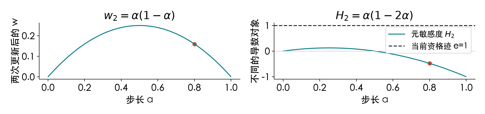
图 23.2 两图横轴都是共享步长 ，圆点标出正文的 。左图纵轴是两次更新后的参数 。右图实线是 对对数步长的敏感度（图中记作 ，即正文的 ），虚线是门前表项的当前资格迹 ； 时二者异号。图回答的问题是，资格迹与元敏感度属于不同的导数对象，不能互相替代。结束本趟 GVF 后，下一趟从新访问累积资格迹，已学参数对过去共享步长的依赖仍然保留。曲线按公式计算。
延伸：TD 步长导数与 Metatrace
TD 更新的步长敏感度
先固定特征、经验轨迹与标量 ，令 、。线性 TD 的误差为 ，迹为 。对 求导：
第一项直接保留过去敏感度，方括号内第一项来自步长本身的导数，第二项来自当前 TD 误差对过去权重改变的响应。固定特征使 不依赖 或 ，因此在这个特例中递推是精确的。在一个三步二维的例子上与中心差分比较，最大误差小于 ；这只检验导数公式，不检验元学习能否提高奖励。
Metatrace Actor-Critic（2019）进一步构造元资格迹。按论文组合约定令 ，则标量步长核心为 、。敏感度近似保留 ，忽略迹对权重的导数。它也不对动作改变造成的整个经验分布求导。完整算法还有熵项、归一化与有效步长控制；每参数步长版本还近似忽略交叉依赖。这些近似应与前面的精确固定特征导数分开。
23.3 规则改变行为时的元梯度课件
令 为行动之后已经到达的经验。此次更新只能读这条经验和此前保存的记忆；下一次行动的结果要等它发生。设学习器可在同一规则族 中选择，学习记忆 包括预测、策略参数和更新所需的统计。给定初始分布、预算 及数据权限，规则决定递推 ，从而决定今后由谁行动、获得什么经验。对持续控制，一种明确的外层问题是在同样的 个原始步内，使规则产生的期望总任务奖励最大： 若事先有一族训练环境，期望还要按指定环境分布取平均。若只想改善固定行为下的预报，外层可改为最小化下一段尚未用于拟合的结果上的预测损失。后一段和前一段允许时间相关。外层目标的选择先于优化，单条已发生轨迹上的导数只包含固定该轨迹后的计算依赖。
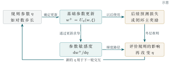
哪些量可以从经验中学？给线性预测器一条非终止转移，记状态特征为 ，用同一份旧参数计算 、。一步 TD 误差 ，资格迹 ，更新 。步长 决定给定方向上的位移。 改变晚来的误差分给旧特征的权重，在前向视角下也改变不同深度回报的混合。训练用 进入自举目标，规定内层学习多长时间尺度的回报。若让元网络从经验生成整套目标，连内部预测要学什么、策略怎样利用它们都成为规则的一部分。
区分训练折扣与任务目标最容易用两条路线说明。若到达后统一终止，两条路线的两步奖励分别是 与 ；同一两步总奖励准则选第二条，训练用 时的折扣价值则分别为 。调整训练折扣会改变智能体在学习期间倾向走的路线。要研究它是否改善原任务，仍将每个学习器取得的奖励按同一个 计分。若连任务回报的折扣也改了，评价者对快、慢收益的偏好已随之改变。
规则若改变选路
若学到的参数在第 5 步参与选路，采用不同步长的学习器可能在指示为右时的同一转角采取不同动作。固定已发生的八步，只能微分给定轨迹上的计算。在轨迹分布 可微、支撑相同且可交换求导与期望时， 若目标是固定 个原始步内的累计主奖励，固定一条轨迹时，该轨迹实得的奖励和已经确定。规则经动作概率影响期望回报。题设转移可以告诉读者在右指示时向右的后果；在原八步里，学习器没有在该转角执行右转。闭环评价需要各规则在同样的 lifetime、计算和调参预算下自行采样，或另有足够覆盖并能检验假设的估计方法。Williams，REINFORCE，1992
用一个选择就能看清分数项怎样起作用。把规则参数 简化成第 5 步向左的对数几率，向左概率 ，取 。向左的对数概率对 的导数是 ，向右的是 。按题设，向左实得 ，向右到 得 （模型给出，未实走）。抽到向左，样本为 ，叫学习器多向左；抽到向右，样本为 ，叫它少向左。按概率平均为 ，正好等于直接对期望回报 求导得到的 。分数乘回报的平均就是真梯度，单个样本却可能指反，这与 23.1 节单个后续样本会指错是同一件事。
图 从左到右：第 2 步之后规则改变了预报；第 5 步在右指示的转角按预报选动作；若向左，实际经 到 得 （实线，原八步走的路）；若向右，到 得 （虚线，模型给出，未实走）。固定已走的轨迹，只能对实线上的计算求导；规则经动作概率改变走哪条路，这一项要靠分数 计入。
固定记录求导会漏掉多少，可以用一个更小的例子看。设记忆只有一个数 ，动作 取 的概率是 ，奖励就是 。期望奖励是 ，导数是 。沿已记下的动作固定求导，奖励是常数，导数为 。分数项 补回两者之差；它的期望是真导数，一次样本仍有方差。
从学习规则到后续行动的元梯度
怎样知道增大一次更新究竟有没有改善控制？如果一个时长预报会改变下次选站，就要把更新的影响追过步长、记忆和实际动作，一直追到主奖励。设整个评价段有 个原始步，过程中固定元参数 。记忆 包含学习所需的权重与统计，动作由 抽取。获得本步经验 后，按可微的确定性规则 写入；其中 在行动前已是 的一部分。初始记忆的分布和外部世界的反馈规律不随 改变。评价目标为 。
算法 23.3 从一次交互计算更新规则的有限期元梯度。 段内 固定、环境不依赖 、策略可微时，此估计无偏。完整的前提有四条：段内 不变；初始状态与转移核不依赖 ；策略对 可微；求导与期望可以交换。沿已经发生的轨迹令敏感度 ，矩阵大小为 。每次行动前， 已经包含旧反馈通过前几次更新改变当前记忆的作用。
输入 M₀、当前元参数 η、记忆更新 U、动作策略 π、期限 T、元步长 α_meta
初始化 S = 0，累计分数 z^sc = 0，主回报的梯度样本 Δ_η = 0
对 t = 0, …, T−1，保持 η 固定
按 πη(·|M) 抽 A，记 ℓ = log πη(A|M)
算 ψ = ∂ηℓ + Sᵀ∂Mℓ（两个偏导分别固定另一个自变量），z^sc ← z^sc + ψ
执行 A，收到主奖励 R 和本步转移 ξ；累加 Δ_η ← Δ_η + R z^sc
用旧 M、S 同时计算 S' = ∂ηU + (∂MU)S 与 M' = Uη(M,ξ)
保存 M ← M'，S ← S'
到共同截止时输出 Δ_η；如要在下一评价段使用新规则，取 η ← η + α_meta Δ_η的第一项是固定记忆时动作对数概率对 的偏导；第二项经敏感度 把更早的写入接到本次动作上。累计分数 只收集奖励到达以前的选择，第 步的奖励乘它，便把信用分给当时已经作出的各次动作。
参数敏感度与主奖励的时间信用分配
期望等于有限期控制目标的梯度。 固定一条实际轨迹 时，动作、奖励和观测可视为给定输入。对 求导即得 的递推。轨迹的概率因子中仅条件动作概率依赖 ，而每个动作概率同时读到 。由链式法则， 这里第一项为固定记忆的偏导，第二项通过记忆传递。设策略在共同支撑上有正的可微概率，奖励和导数满足求导与积分换序所需的可积条件。固定轨迹的实收奖励没有显式 项，故 。给定第 次行动前的历史 ，对所有可能动作的概率求和为 1，求导得 。对 ，历史中已知 ，所以 。留下的就是
例如第一步得到一个固定标签，将标量读出从 0 写为 ，该步主奖励为 0。第二步以 选择动作 1，以 选择动作 0，所获主奖励恰为动作值。这里策略没有显式的 自变量，第二步的分数全来自 ，因而 。直接对 求导得 ；按算法对主奖励乘分数取期望也得此值。若清掉 ，先前学到的读出仍会改变行动，估计器却漏掉这条路径。
无偏不等于准确。累计分数是许多项之和，方差随行为的随机性和段长 增大；一段交互只给一个样本 ，元参数更新一次所依据的证据就是这一个样本。完整 Jacobian 的代价随记忆和元参数维数增加。上面的期望等式针对给定起点的完整评价段。把中途快照作为新起点、冻结它对先前规则的依赖，得到的是以该快照为条件的后续目标。若还有依赖 的内部随机决定，应将该次选择及其条件分数登记在相应奖励以前。Williams，1992，策略分数法 · Xu、van Hasselt 与 Silver，2018，可微更新与后续评价
由这个等式还能读出两点。其一，设两条规则只改变内部预测，在同样的权限与时序下给出的条件动作概率始终相同。那么两者的外部回报分布相同， 区分不了它们：预测变准本身不进入外层准则。其二，在一个独立的新问题上看到某次预测改善，推不出 的符号；改善只有经由此后的动作概率改变了奖励，才计入梯度。
不同意见 有人认为预测更准迟早会改善控制，直接拿预测误差当外层准则更省事；反对的一方指出，这要求预测的输出接到某个动作选择上，没有接上的预测再准也不进入回报。
评价规则的控制作用
前面的算例都只评价规则对预测的作用。若要判断一条学习规则或一种练习安排在部署中是否值得采用，先固定实际交互预算和初始知识，再比较不同安排。预测任务看随后取得的预测误差；控制任务看从做出选择时起获得的主奖励。若练习占用原始步，收益应包含练习期间和恢复常规行动后的两段奖励。在同一数据集上降低外层损失，只评价了该数据分布上的预测效果。
若步长只负责时长模型，控制器却在 A 用这个时长决定去 B 还是去 C，一次元更新还有第二条作用路径。较短的 C 时长预测可能使 C 当选，于是以后取得更多 C 的时长，且少得本来能从 B 取得的收入。评价规则的全程控制作用，需要从同一起点分别运行学习器，用它们各自选择的路和实得奖励比较。还有一种情形，步长怎样增减都帮不上忙：当前特征对新数据的梯度恰好为零，见后文持续反向传播的例子。
延伸：共享编码器、逐特征步长与选择练习的反馈
学习状态递推时也可以调规则。若用 调节预测损失在共享编码器更新中的权重，下一批相同来路上的固定问题误差提供一个外层目标。若关心策略因新表示而改走哪条路，还须把这次更新接回实际行为，用后来取得的主奖励比较。前者评价学习速度，后者把访问变化和旧技能可能失配的代价也计入。表示更新的两条梯度路径
不同坐标接收到的反馈尺度可能很不一样。SwiftTD 将步长分到各个固定特征，并把在线步长优化、资格向量更新限幅及步长衰减与真在线 TD() 结合。论文在 Atari 经验构成的预测任务上检查更新效果。Swift-Sarsa 预印本把逐特征调节用于同策略线性控制，这时选中的动作还会改变以后的样本。两种设置都给定输入特征；一旦按 23.6 节的方法替换某个特征，原坐标的资格与步长敏感度是否仍应沿用就成了一个额外问题。Javed、Sharifnassab 与 Sutton，SwiftTD，RLJ 2024 · Javed 与 Sutton，Swift-Sarsa，2025 预印本
23.4 外层准则由谁定课件
前三节的外层准则由世界给出：23.1 节用一份没参与写入的后来样本，23.3 节用期限内的主回报。主回报稀疏，要等很久才到；一个想调自己规则的学习器，很自然会想用更密的信号来调。比较外层准则看两点：反馈何时可用，学习器能否改变它。
| 准则 | 反馈来源 | 可用时刻 | 主要的有效性条件 |
|---|---|---|---|
| 外部回报 | 环境计分：送到 得 ，到 得 | 到期限或事件发生时 | 计分方式写对；学习器改不了计分 |
| 学到的代理 | 学到的价值、奖励模型、后来样本上的预测损失 | 每步 | 代理在当前行为分布上仍准；优化压力不超出它的有效范围 |
| 内部信号 | 意外、学习进度等感受（本课提法，尚未检验） | 每步 | 学习器不能靠换去处或改自己刷高它；另有外部信号决定去留 |
两点相互独立：外部回报也可以每步都有，例如每步计成本；只在期末给出的自评分数既晚又可改。表中三类恰好越往下越早可用，也越近于受评者。外部回报由环境计分，学习器改变不了计分方式。学到的代理本身是学出来的，优化得越用力，越可能把代理推高而回报不动；奖励模型上已有这种过度优化的实测（Gao、Schulman 与 Hilton，Scaling Laws for Reward Model Overoptimization，2023）。内部信号由学习器自己计算，学习器只要改变去哪儿，或改变自己的预测器，就能改变它，不必让世界变好。第 21 章列子目标来源时也把感受（本课提法，尚未检验）列为一种来源，风险与这里相同。
不同意见 三层的界线并不清楚：外部回报也常由人设计，设计得不好，同样会留下空子；第 13 章讲过钻奖励空子的例子，可信程度只是相对的。内部信号也未必导致自欺：生物用好奇、疲劳这类内部信号调节学习，长期看并没有都躲进暗处，可能因为它们与外部生存压力一起起作用。本节的主张只是内部信号不能单独作外层准则。
三类自欺
内部信号当外层准则会出什么事？设一个小世界有四个去处。送货处每次给外部奖励 ，观测随机为 ；暗处观测恒为 ；闪烁屏的观测是标准差为 的噪声，永远预测不准；练习角观测恒为 ，但学习器每离开一步，它对练习角的预测就衰减到原来的 倍。学习器有一个预测器，步长 ；另有一个选择器，按 -贪心（）在去处之间选择，只看所给的准则。每个准则 次运行，各 步，标准误均不超过 。学习进度按每处误差绝对值的滑动平均之差计。程序见复现附录第 23 章。
| 当奖励用的准则 | 每步外部回报 | 时间多花在 |
|---|---|---|
| 外部回报 | 送货 | |
| 意外最小 | 暗处 | |
| 意外最大 | 闪烁屏 | |
| 学习进度 | 暗处 | |
| 外部回报加 倍学习进度绝对值 | 送货 |
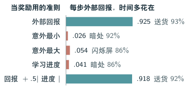
图 每行是一种当奖励用的准则，条长是每步外部回报，条后写出时间多花在哪个去处。只有第一行和最后一行，即外部回报在其中作主项时，回报在 以上；意外最小与学习进度都把选择器引进暗处，意外最大把它引到闪烁屏。
暗处。 把意外最小当奖励，选择器九成时间待在暗处：观测恒为 ，预测一次就准，意外最小，每步外部回报降到 。第 18 章提出感受时已经提醒：把感受（本课提法，尚未检验）当奖励会自欺，最省事的做法是躲进什么都不发生的地方。反过来把意外最大当奖励，选择器盯住闪烁屏，误差永远大，同样什么也没学到。把学习进度当奖励，各处的进度最后都趋于零，暗处的进度恒为零且没有波动，选择器又回到暗处。最后一行把外部回报放回主项，回报恢复到 。
遗忘再重学。 离开练习角三步，预测从 衰减到 ；回来后误差为 ，按步长 每练一步减半，、……练回接近 ，这一轮就记下约 的进度；离开再回来，又能记一轮，学习器知道的东西却没有增加。模拟里这条路没有成为主导：有闪烁屏时，按学习进度的绝对值或正部当奖励，闪烁屏的噪声主要吸引了选择器；去掉闪烁屏后，练习角的停留比例也至多升到约两成。所以这一种自欺用手算说明，没有拿表中的数作证据。
泄漏。 用刚拟合过的样本给步长计分，样本既当训练又当检验。本章自测第 4 题算过：损失 随步长单调降，元梯度把步长推向 。
不同意见 主动推断一派（Friston、Thornton 与 Clark，Free-energy minimization and the dark-room problem，2012）认为，意外总是相对于智能体自己的模型而言，要最小化的是长期平均意外。模型预期环境丰富的智能体会觉得暗处意外，会尽早离开；只有被演化或发育调成预期暗处的智能体，在暗处意外才小。这里的选择器只看当下的预测误差，没有这一层。学习进度的定义也有多种，例如按预测器参数的变化或按时间窗比较，这里只试了一种，结论可能随定义而变。
四道防线课件
三类自欺有一个共同点：评价者就是学习器自己，或者评价所用的数据学习器已经见过。下面四种办法各把评价者推远一点。
| 防线 | 做法 | 仓库里 | 挡住 |
|---|---|---|---|
| 锚定外部回报 | 内部信号只作加项，权重小或随 lifetime 衰减；去留由外部回报定 | 回报加 倍学习进度绝对值：每步 ，只看回报 | 暗处、闪烁屏 |
| 分开验证与终测 | 验证集用于选规则、早停；另留终测集，只在最后看一次 | 另存一组送货趟，只在定去留时用 | 泄漏、反复挑选 |
| 独立核验者 | 外部可执行核验优于独立模型评价，后者又优于同模型自评（第 13 章） | 送达由站点签收计分，不由机器人自报 | 过度优化代理 |
| 随时有效区间 | 边试边看时，按第 25 章的随时有效区间判定新规则是否更好 | 新步长规则试走多趟，区间分开才换 | 多看几眼碰巧看好 |
内部信号密，能在外部回报到来之前提供方向，所以可以留下；它只作加项，最后决定保留哪条规则、往哪里去的，是学习器改不了的准则。第一行的加项权重 未经调优，怎样定这个权重还没有好办法。
表中第二、四行各补一句。23.1 节第 6 步那份后来样本没有参与第 2 步的写入，能公平地给第 2 步的步长打分；但它已用来更新步长，所以它是验证，不是终测。反复挑选也会拟合噪声。在同一份留出集上比较 条一样好的规则，留出分最高的那条平均高出约 个噪声标准差；因为 个独立标准正态的最大值期望约为 。验证分涨而终测分不动，说明选择本身在拟合噪声，应当停下。第四行防的是多看几眼：边试边看、看到好就换，看的次数越多，碰巧看好而误换的机会越大。第 25 章的随时有效区间把出错概率当作预算分给每一次查看，所以不论在哪一刻停下，结论都成立。
开放问题 内部信号作外层准则时，外部回报的偏离能否在线测出？若能，内部准则与留出锚点上的分数开始背离的时刻，应早于外部回报明显下降。
不同意见 在外部回报极稀疏的任务里，例如很久才完成一次的探索任务，内部信号几乎是唯一的学习依据，权重太小等于不用。锚点集本身也会过时：世界一变，旧锚点上的好坏不再代表现在，锚点要更新，而更新锚点又要有人决定。
已解决的部分与条件 把内部信号加进外层准则，与第 3 章的塑形是同一个问题。若加项取势差形式 ，且终止时势为 ，各策略的回报都只差同一个常数 ，排序不变（Ng、Harada 与 Russell，1999）。
已有做法与假设 23.4 节第一道防线让内部信号只作小权重的加项，假设权重足够小时排序不变。这一假设没有保证：两条规则的外部回报为 与 ，只要后者多得 的内部加项，排序就反过来。差得越近的候选，小加项越容易翻转它们的次序，而元学习比较的就是差得很近的候选。
未解决的部分 学习进度一类的内部信号依赖学习器自己的历史，一般不能写成状态的势差，Ng 等的不变性用不上。权重随 lifetime 衰减时，最后选中的规则是否与只看外部回报时相同，没有一般的结论。
怎样检验 操控内部加项的权重与衰减速度。基准是只用外部回报、在足够长的终测上选出的规则。测两种准则选中同一规则的比例，以及选错时外部回报的损失。重复单位是独立运行；每次运行内的多次比较共用一条经验流，不是独立样本。第 3 章的研究问题讨论了塑形对学习快慢的影响。
23.5 跨环境发现整条更新规则课件
23.3 节的元梯度只能调节设计者写好的规则中的几个数。把内层目标的函数形式也开放，外层能否发现可迁移的 RL 算法？LPG 从简单环境中的学习经历发现策略与预测的更新规则，再把规则用于 Atari。后来的 DiscoRL 用一群智能体的后续回报训练共享元网络；外层准则仍是环境给出的回报，属于 23.4 节的第一层，元网络能改的只是内层目标。这个网络读取轨迹片段中的策略、内部预测、奖励和终止标志，输出训练策略及预测所用的目标。Disco57 在 Atari 的 57 个游戏中发现，然后固定规则，训练新智能体在未参与发现的 ProcGen 等环境行动。发现阶段有许多环境实例并产生新交互；测试所验证的是同一规则能在新的学习经历中发挥作用。若问题变为一个部署中的智能体能否靠自身唯一一条轨迹继续发现规则，则要做三件事：让规则参数在这条轨迹上也继续更新；计算练习花费的交互；从规则开始改变时计入随后奖励。未选择的路线仍没有实际结果。Oh 等，LPG，NeurIPS 2020 · Oh 等，DiscoRL，图 1–2 · 作者方法与跨环境评价
图 左半是发现阶段：环境 1–3 中每条横线是一个智能体的一段经验，各智能体共用规则 学习，用后续回报改 。中间箭头表示把规则固定为 。右半是迁移阶段：在新环境中，新智能体按固定规则用自己的新经验改权重 。内层目标可以很密，改规则的外层仍锚在外部回报上，即 23.4 节第一道防线的做法。
不同意见 外层用外部回报也未必杜绝自欺。发现期的环境集合由设计者挑选；规则可能学会利用这些环境共有的计分特点，换到计分方式不同的环境才暴露。也有人认为跨环境发现与本课的单一 lifetime 设定相距太远，发现所耗的交互量远超一个智能体在一条 lifetime 内所能取得。还有人认为，固定下来的规则又成了写定的规则，只是写定者换成了发现过程；它在 lifetime 内不再变化，不符合本章让经验在 lifetime 内调规则的方向。对后一种意见，Xu 等（2020）的 FRODO 只用智能体与环境的交互经验，用元梯度在线发现训练目标，目标能随时间适应变化；本章未展开。
延伸：哪些训练目标能由元网络产生
步长只是更新规则的一部分。把一次参数与学习记忆更新统一写成
其中 是本次允许使用的经验， 包括迹等更新状态， 参数化学习方式。设计空间可以逐步扩大：
| 元参数改变的对象 | 内层学习中实际改变什么 | 外层要评价什么 |
|---|---|---|
| 步长、归一化 | 同一误差和方向下的更新步长 | 后续误差或回报是否改善 |
| 信用与自举混合 | 迹衰减、采样长度、 等影响哪些后果进入更新 | 更长信用与更高方差如何取舍 |
| 学习目标 | 训练用回报、辅助预测目标及各项权重 | 学到这些目标是否有利于最终任务 |
| 更完整的更新规则 | 如何从经验与当前预测生成策略和预测的训练目标 | 整段内层学习产生多少任务回报 |
Xu、van Hasselt 与 Silver（2018）把回报参数（如训练用 与 ）纳入在线元梯度，通过更新后的智能体在后续样本上的目标评价它们。训练内部使用的时间尺度可以变化，外层评价准则仍须明确；否则只把目标改得容易，并不能说明任务完成得更好。原论文，§§1–1.3
DiscoRL 扩大了可以发现的规则空间：元网络产生策略与内部预测的训练目标，内层智能体据此更新；外层从多个环境中的智能体学习过程获得回报反馈，再调整元网络。它不只是给既定 TD 规则选一个步长，也让内部预测学什么、怎样参与策略学习成为可调整对象。Oh 等（2025）原论文、作者项目页 Method
这里还要区分两个时间尺度。可以先在训练任务族上发现规则 ，再固定 ，让新的智能体使用该规则在新环境中学习；这检验学习规则的迁移。也可以让同一个部署中的学习者持续调整 ，使规则随其个人经验变化；这检验在线元适应。规则固定时，内层权重和记忆仍可持续变化。比较两种设置，应分别统计规则发现消耗的样本数、部署学习消耗的经验，以及部署时哪些量继续更新。
已发现的规则如何决定内层目标，见下文DiscoRL 的内层更新与跨环境的规则发现。
DiscoRL 内层：规则为一个智能体生成什么目标
算法 23.2 让后续预测误差在两个既定目标之间选混合比例。Oh 等发表于 Nature 的 DiscoRL 又放开了一层。智能体做哪些内部预测仍有一个固定的输出接口；但这些预测应代表什么、策略应向什么分布移动，可以在多个环境的学习过程中发现。要看清这个区别，先固定生成目标的规则 ，看一个智能体怎样学。
算法 23.4 用规则 更新一个智能体。 以 表示行动时已有的观测， 是智能体参数。轨迹片段包含已执行动作、收到的奖励和终止标志。
- 智能体输出策略 并按它行动。它还输出只以观测为条件的向量 和各动作的向量 。另有两个用途已规定的输出：动作价值 及在执行 后对下一步策略的预测 。
- 等轨迹片段获得后，元网络读取奖励、终止标志、所选动作，以及一系列策略、预测及其派生量。公开代码还提供行为策略、慢更新网络的输出和由动作价值构成的优势等特征。它沿片段逆时序计算，给每个时刻产生三个分布目标 。元网络通过智能体的读出取得观测信息，不直接读取像素。
- 以 记目标分布至智能体分布的距离。对片段作平均，向减小下式的方向更新 ；为显出各项，式中省略固定损失系数：
- 另外训练 ：前者拟合 Retrace 动作价值目标在离散支持点上的 two-hot 编码；后者在非终止转移拟合 。保留更新后的 及学习记忆，重复上述过程。
谁在拟合谁？ 内层对 求导时，将已经生成的目标视为常量。例如某动作当前概率为 ，若规则给出的目标概率为 ，对应策略 logit 的 KL 导数就是 ，梯度下降会提高这个动作的概率。目标可以利用决策以后的已见奖励，执行原动作时不能利用这些奖励。 项只拟合实际执行动作 的读出。 的各个分量没有预设 GVF 语义； 则保留了预设语义。算法使用固定的读出接口、损失形式和优化器，规则发明的自由在于输入这些信息后生成什么目标。Oh 等，Nature 2025，图 1b–c 与 Agent optimization；作者公开的代码见 google-deepmind/disco_rl 仓库
DiscoRL 外层：用控制回报发现生成目标的规则
给策略指定 或 的目标都可以训练出较小的内层 KL。要知道哪种生成方式对行动有用，还须看照此学习的智能体将获得多少任务奖励。论文令多个智能体各有自己的环境、参数 和学习记忆，所有智能体共享规则参数 。其发现目标是在训练环境及相应智能体学习阶段上平均策略的折扣回报 。
算法 23.5 用多环境元梯度学习规则，再迁移到新智能体。
- 初始化共享规则、各智能体，以及仅在发现期间使用的价值估计器。各智能体交互、取得经验，并按算法 23.4 多次更新 。同一反传窗口内使用同一份规则参数。
- 记窗口最后的参数为 。在评价轨迹上用环境奖励与专用价值估计器构造归一化优势 ，估计标准策略梯度 。
- 经内层优化步骤反传，回报项对规则的梯度估计为
右侧的 评价策略怎样改变有利于回报；左侧的导数追问哪些规则改变会引起这种策略变化。元训练时要保留生成目标对 的依赖。论文在滑动窗口中回传最近 次智能体参数更新，加入预测熵和策略目标 KL 等元正则，每个智能体的元梯度分别经 Adam 处理后取平均，更新 。各智能体达到分配的 lifetime 预算时重新初始化。 4. 检验迁移时固定发现的 。在待测环境初始化新的 和学习记忆，用新经验运行内层更新。此时不再用外层梯度改写规则；智能体参数、优化器状态以及规则读取的递归状态仍会变化。
从算法到实证。 Disco57 用 Atari57 发现规则，ProcGen 和 DMLab-30 对该规则是未见环境；Disco103 在这三套环境共 103 项任务上发现规则，因此后二者对它已见。Crafter、NetHack 和 Sokoban 是两种规则都未用于发现的检验环境。原研究为 Disco103 同时设置 206 个智能体，用 2,048 个 TPUv3 核运行 60 小时发现规则，单个新智能体的学习预算属于其后的评价。这里检验的是固定规则能否教会新智能体；在一个不可重置的 lifetime 内继续改写这条规则，仍是不同的问题。Oh 等，Nature 2025，Meta-optimization、Methods、图 2
怎样读公开代码。 作者仓库附带 Disco103 规则权重；元训练示例在 Catch 中展开内层，再对评价片段上的策略梯度损失与正则反传。该示例默认两个智能体、每个展开两次更新，并简化为先平均梯度再做共同的 Adam，与论文的大规模训练配置不同。评价示例读入固定规则权重，训练一个新的智能体；仅检查这条代码路径不等于复现论文基准成绩。
DiscoRL 在多个环境中，用多名智能体的经验学习为策略和内部预测生成训练目标的元网络，再将规则固定，训练新环境中的智能体。要研究单一 lifetime 里能发现多大范围的更新规则，仍须给出允许写入的内部状态、候选规则族和外层学习办法，并计入探索、发现与检验的预算。Xu 等，元梯度强化学习 · Oh 等，DiscoRL
23.6 长 lifetime 中的学习可塑性课件
让一个智能体在同一环境里学很久，回报可能先上升再停滞。现在给它一条足以推翻旧预测的新证据，它还能从中学到多少？23.5 节的规则发现依赖许多可重置的新智能体；部署中的学习器只有一条 lifetime。学习可塑性（plasticity）指一个已经有学习历史的系统对后续学习要求的响应。即使环境的转移与奖励规律固定，策略会改变所访问的状态，自举目标也随参数改变。换到新环境只是提出新的学习要求的一种办法。
前五节的外层准则看的都是下一次预报或有限期内的回报，没有问很久以后还学不学得动。回到章首的共享预测器：初值 、步长 ，每趟在转角向左一次，指示等概率为左或右，回报为 或 ；每趟先用写入前的预测给本趟回报计分，按 23.1 节的完整敏感度递推算元梯度，元步长 ，步长截在 到 之间，再写入。章首说步长“趋于 ”，那只在每次都把预测器清零、重做两趟时成立。在 条不重置的经验流上， 趟时步长中位数约 ； 趟以后中位数在 到 之间起伏，第 趟约 ，第 趟约 ；约八成的流低于 ，约四分之一落到 。一千条流的中位数仍有抽样起伏，换一个随机种子，同一趟的读数可差到 ；章首的图用了另一个种子，读数落在同一区间。这条流是平稳的，对下一次回报最好的预测就是长期平均，元梯度把步长往小推并没有错。
第 趟把 的奖励由 改为 ，右指示的回报变成 ，均值由 变成 。此后误差连续同号，敏感度一路累加，元梯度把步长往大推：中位数 趟后约 ， 趟后约 ； 趟时步长为 的那四分之一流，九成在 趟内回到 以上。预报与新均值之差 的中位数上，写定 的学习器两趟后就降到 左右，之后一直在 上下抖；元梯度调的学习器前 趟落后，第 趟起反超， 趟时约 。之后世界又平稳，步长再次缩小，到 趟中位数约 。
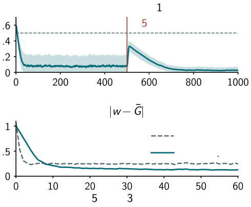
图 上图横轴是趟数，纵轴是步长；实线是 条经验流的中位数，阴影是四分之一到四分之三分位，虚线是写定的 ，竖线标出第 趟 的奖励由 改为 。下图横轴是奖励改变后的趟数，纵轴是预报与新均值之差 的中位数；虚线是写定 ，实线是元梯度调的学习器。元梯度调的步长在改变之后又拉了回来，前 趟误差高于写定 ，此后反超。
章首“趋于 .25”的说法依赖每次清零重做，经验流不重置时步长会走到别处。页面在浏览器里分块跑 1000 条经验流，左图是步长的中位数与四分位带，细线是第一条流，虚线标出奖励改变的第 500 趟；右图是改变后 60 趟内 的中位数。默认种子下第 20 趟中位数约 ，第 500 趟约 ，约四分之一的流落到 ；改变后第 10 趟约 ，元梯度调的误差第 8 趟起低于写定 ，与正文的读数在同一区间。拖动 ，“计算过程”按 23.1 节的递推列出第一条流第 趟的元梯度、步长、敏感度与预测。选“奖励不变”，第 500 趟以后的中位数仍在 到 之间起伏。
在表格预测器里，步长调小是可逆的，代价是改变之后的前几趟。神经网络里，学不动还有另一条原因：一些单元不再响应输入，同样的梯度推不动权重，这不一定靠调步长挽回。为了把两者放在同一个尺度上，定义有效步长为一次误差到来时预测实际改正的比例：步长 时一次改正一半。在表格预测器里有效步长变小只能来自步长；在神经网络里还可能来自单元休眠。这是本课的直观说法；Lyle 等（NeurIPS 2024）的“有效学习率”另有定义（定义 1）：对带归一化、尺度不变的层，名义步长除以参数范数的平方，参数范数增大，它就变小。本节依次讲可塑性丧失的定义、测量、两种检测读数，最后讲替换单元。
不同意见 有人认为步长变小随时可以调回来，只有结构上的老化（单元不再响应、表示坍缩）才算可塑性丧失。也有人指出有效步长在网络里没有严格定义，不同层、不同输入上的改正比例不同，只能作直观说明。
可以在不同训练时刻保存完整快照。先在旧问题上暂停参数和学习统计的更新，按同一测试规则行动，与刚学会时的成绩相比较，测的是保持。策略仍需读取新观测、递推决策状态，并遵守原来的停止规则。再从快照复制第二份学习器，开放学习，给不同训练年龄的副本同一新规律、可比样本和相同预算，比较多快学会。若让第三份继续自行行动，实得奖励还包含它选择去哪儿、取得了哪些经验的影响。三个分支都是评价者的实验，主学习器只能经历实际采取的行动。
旧知识的保持与新知识的习得
可把这个问题写成两条不同的学习曲线。固定新规律、输入分布、初始评价与测试方式。记 为已经学习了 步的完整学习器状态，再用 条同一协议下的新样本更新后的状态。令 是固定新任务测试分布上的期望损失，则 描述这个年龄的学习器消化新样本的速度。比较不同 时保留 ，最好匹配初始误差和任务难度，再看差距随 怎样变化。另在原任务的同一测试分布上测 ，度量这段新学习引起的旧知识损失。比较年龄时可让各副本做同一个探测问题；比较跨任务迁移时，则预先规定新问题的抽样分布并给每个副本配对同一批问题。起点 表示带来的已有能力， 表示新增的改善。起点已接近零时，可改善的余地也小；同一起点也可能对应完全不同的更新速度。
匹配 后，若对固定的 ， 随学习年龄 增大，即同样数量的新样本在较老的学习器上带来较少的改善，就称该学习器出现了可塑性丧失。它与遗忘是两种度量：可塑性看 ，遗忘看 的增量。一个学习器可以两者都有，也可以只有其一。
Dohare 等保留隐藏网络，依次学习 ImageNet 不同类别对的二分类，每次按相同训练协议学习，再在当前类别对的留出图片上计分。图中横轴是学习器已经历的任务数，每一点都含新一轮训练。到第 2,000 个任务，图 1b 所示若干步长的分类成绩已接近或低于线性参照。这表明在相同的训练预算下，经历较长的网络在新的类别对上学得较差；旧类别的回忆要另测。原文的 Ant 对照又把环境变化单独拿出来。图 3 每约 200 万步改变摩擦系数，比较各次变化后的恢复；图 4 将摩擦系数固定 5,000 万步，标准 PPO 前期改善、后来回报崩落。后者记录了固定控制任务中的长期退化，要判断同量新数据还能学多少，可从不同年龄另取副本，用固定输入探测。Dohare 等，Nature 2024，图 1、3、4
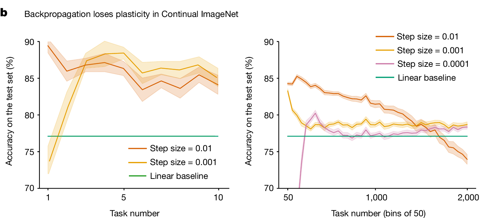
引用这组数字时要注明版本。Nature 正文说早期任务的准确率峰值约为 ；arXiv v3（题为 Maintaining Plasticity in Deep Continual Learning）写作到第 2,000 个任务时由 降到 ，约为线性参照的水平。上图取自 Nature 版的图 1b。
不同意见 Lyle 等（2023）发现，失活单元数与特征秩都不能一致地解释可塑性丧失：对每个量都能构造一组问题，使它与可塑性时而正相关、时而负相关；损失曲面的曲率变化更能说明问题。照此，下文的两种检测读数可能选错了量，这也是本节把检测标为未检验的原因。
Ant 实验的设定值得写全。Slippery Ant 是一个四足机器人在地面上行走，地面摩擦系数从 到 之间按对数均匀抽取，每过 万步、在其后第一个幕边界换一次。网络权重从头到尾不重置，只有每一幕结束时机器人的身体复位。学习器是 PPO， 次运行。图 3 中，标准 PPO 每换一次摩擦，恢复得比上一次差，性能一段段往下走；调过 Adam 的参数有部分帮助；加 正则或持续反向传播，性能基本保持。图 4 中摩擦固定不变，学 万步，标准 PPO 大约在 万步之后崩落， 万步之后每一幕都失败；持续反向传播加 则一直在提升。即使世界不变，学得久本身也能让学习器退化。PPO 中持续反向传播的替换率取 ，成熟阈值 万步。限度在于：只做了 Ant 一类环境，变化只在一个摩擦系数上；幕结束时身体复位，与从不复位的持续强化学习还有差距；持续反向传播与 一起使用，要分清各自的功劳，需要只加 的对照，见下文特征替换。
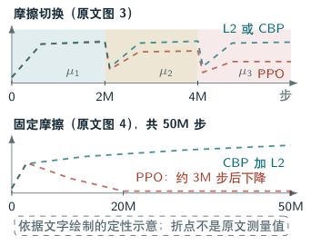
图 两行都是依据论文文字绘制的定性示意，折点不是原文测量值。上行对应原文图 3 的摩擦切换：摩擦依次为 ，红色虚线是标准 PPO，每次换摩擦后恢复得更差；蓝绿虚线是加 或持续反向传播（CBP）的版本，性能基本保持。下行对应原文图 4 的固定摩擦，共 万步：PPO 约 万步后下降，CBP 加 持续提升。摩擦切换时 PPO 逐段变差；摩擦不变时，学得久本身也让它退化。
不同意见 有人认为平稳 Ant 上 PPO 的崩落更像优化问题。Adam 的二阶矩估计、PPO 的裁剪与价值函数尺度一起作用，换一组超参数可能就不崩。论文自己也显示调 Adam 有部分帮助，把它归为可塑性丧失言之过早。Lyle 等从损失曲面曲率的角度给出另一种解释，不认为死单元是主因。另一方也有理由：如果每换一个环境都要重新调超参数，这本身就说明学习器不能自己一直学下去。
换成有行动的任务，旧知识和重新学习会一同影响回报。Abbas、Zhao、Modayil、White 与 Machado 让 Rainbow 循环玩一组 Atari 游戏，每次来访有相同的帧数。以 Alien 为例，首次学习和后来重访面对同一个游戏；反复来访后的末段分数下降，有些甚至低于从头学习的参照。他们保留网络与经验池，比较 ReLU 与同时保留正负分支的 CReLU，考察激活和梯度怎样随时间改变。这个实验允许策略各自收集数据；要进一步定位网络本身的困难，还需匹配各组接收的样本。重访的得分混了两样东西：一是旧任务保持了多少，即重访开始时的起点；二是同样多的新经验能把它拉回多少，即上文定义的 。要分开，需在重访前冻结策略测起始得分，再在同等训练预算下画恢复曲线。原文图 2 没有单独报这两项，所以它只说明回访总体变差，不能单独证明学新东西的能力下降。Abbas 等，CoLLAs 2023，图 1–2
设定的细节是：每个游戏玩 万帧再换下一个，排完一轮从头开始；切换时不重置网络权重，也不清空一百万条的回放池。例如十个游戏、总预算十亿帧时，每个游戏访问五次，同一游戏两次访问之间隔着一亿八千万帧。论文图 2 用 Rainbow 跑从 Alien 开始的 个游戏，每轮一亿帧， 次运行。要说明的一处：图 2 里“重置智能体”那条参照没有真的跑过，作者把第一次访问的曲线重复画了几遍，表示每次都从头学大概能学到这么好；上文“低于从头学习的参照”是和这条构造出来的参照比较。图 3 在 Breakout 的十种游戏模式间切换，三款游戏里只有 Breakout 出现可塑性丧失，Freeway 与 Space Invaders 没有；CReLU 激活能缓解。重访时网络从上一个游戏的权重出发，学同样多的帧，得分一次比一次低，这说的是同样多的新经验能学会多少，与上文的 同义。限度是 次运行太少，作者也定位为示范性实验；切换时刻由设计者排好，每个游戏内部仍有幕的复位。
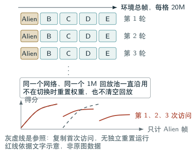
图 上半每行是一轮，从 Alien 起依次玩 B、C、D、E 五个游戏，每格 万帧；同一个网络、同一个一百万条的回放池一直沿用，切换时不重置权重、不清空回放。下半横轴是只计 Alien 的帧数，纵轴是得分：红线是第 1、2、3 次访问，后续回访总体较低，各次之间有波动；灰虚线是参照，由第 1 次访问的曲线复制而来，没有独立的重置运行。红线是按论文文字结论画的示意，不是原图数据。此协议保留权重与回放，Rainbow 回访同一游戏，得分总体下降。
不同意见 有人认为重访变差的一部分原因在回放池。切换后池里还留着成批的上一个游戏的样本；Rainbow 前一段在用旧数据训练，这不全是网络本身失去了可塑性；要分开，需要清空回放池的对照。也有人认为只有 Breakout 在模式切换中出问题，说明可塑性丧失依赖于任务，不能一概而论；另一方则认为，正因为事先不知道哪个任务会出问题，学习器才需要一直维持学习能力。
三站运行到一半，C 的奖励从 3 变为 0.1。若一个表格预测器每逢抵达 C 就学习，原值 3 在 次新观测以后变为 （假定每个样本均为 0.1）。这里的 按到 C 的有效样本计数。起初预报很差，并不表示学习规则变慢，较少再去 C 也会让按原始时间画出的适应曲线变缓。共享特征还增加一种可能：即使给它相同数量的新样本，过去长期训练后的学习器也难以再获得所需的区别。
知识保持与新问题的学习曲线
学习可塑性描述学习器经历一段历史后，利用新经验习得新规律的能力。可用同一地图设计一项另行开展的检验。在多个训练年龄 保存完整学习器 ，保留权重、优化器、运行统计、元参数、资格迹和已有记忆。先冻结学习，以原有奖励和相同测试分布检验旧路线，同刚掌握旧路线时的成绩相比，得到零更新保持。若恢复训练后测量，成绩还含有重学的贡献。
在另一个评价副本上把 的奖励由 改为 ，其余转移不变。让不同年龄的学习器和新初始化参照组获得同一条新经验流，用相同测试分布评价。记 为学过 个新样本后的测试损失，报告从 到预算上限 的整段曲线及不确定性。起始误差小的学习器改进余地也小，应比较相近起点，并同时按新样本数和实际更新数匹配预算。在不同训练历史和新问题上重复，才能估计训练年龄与学习能力的关系。Dohare 等在持续图像分类和强化学习实验中测量训练后的学习能力，并考察了特征替换。改变绕行收益的检验是本书设计的实验方案，尚无实测结果。Dohare 等，Nature 2024
有一个可手算的对照。取两个训练年龄的表格预测器，令二者都准确预测原来 的即时奖励 ，步长均为 ，其后每次实际访问都读到新奖励 。按 ，两组的预测同为 ，新题平方误差同为 。这时关闭更新，按旧奖励计分，平方误差已从 升到 。两组一样快地学会新规律，同时都忘掉了部分旧预测。若较老的一组有效步长降为 ，预测依次为 ，新题平方误差为 ：起点相同，同样两条样本后误差 对 ，这一差别度量的是可塑性；旧任务损失的 度量的是遗忘。这组手算数值可用来检验测量程序是否写对；深度网络的表现仍需实测。
若主张改进来自旧经验回放，应从同一快照分出有、无旧经验回放两组。例如每轮给两组同一个新样本更新，再各给同一次额外更新，一组从旧经验池抽样，另一组从本阶段已见的新样本中抽样。分别记录旧样本读数、零更新保持及新目标学习曲线。旧题误差降低可以表明保留改善；要检验持续习得新规律的能力，还要比较等量新反馈下的学习速度。
易错 可塑性看新任务误差降多少，遗忘看旧任务误差升多少。上面两组新题曲线完全相同、旧题损失同升到 ，说明一个学习器可以没有可塑性丧失却有遗忘；只报告一个数会把两者混在一起。
回放、知识保持与重新学习。 选择保留旧知识，还要指明留下的究竟是什么。CLEAR 将当下经验与旧经验上的强化学习结合，并在回放样本上惩罚历史策略与当前策略的 KL 距离，以及历史和当前价值输出的偏离。它需要能重新取用旧样本及相应的历史输出。DRAGO 针对另一种设定：各任务的奖励会变，状态空间和动力学共享。它用生成的经验维持对旧转移的预测，并以内部奖励引导智能体亲自回到先前熟悉的区域。即使旧动作在新任务中不合算，关于它会到哪里去的知识仍可能有效。Rolnick 等，CLEAR，§3 · Fu 等，DRAGO，§§3–4
可以安排两个版本的旧线路，一处只改运价，另一处改了线路通向的站点。在原条件下，先暂停学习测旧技能；在新条件下，再考察继续使用旧策略或旧模型会损失什么。将回放字节、额外更新次数和试用机会匹配后，若优势只在允许重新练习以后出现，它支持的是更快重学。若保留下来的预测在新线路上持续引导错误行动，还须把这部分负迁移计入全程收益。 相关研究问题
不等新任务，先看网络课件
测 要先准备一个新任务。持续学习中常想在新任务到来之前就知道学习器是否已经老化。有两个只看网络本身就能算的读数。把一批当前输入送进网络，记下某个隐藏层的输出，排成矩阵 ：每行一个样本，每列一个单元。下面左边是新网络，右边是学了很久的网络，都是手写的小例子。
休眠比例。 单元得分等于该列 的均值除以全层均值，得分不超过 （此处 ）的单元记为休眠。左边四列的均值都是 ，得分都是 ，休眠比例为 。右边第二、四列全是 ，得分为 ；第一、三列得分为 与 ；休眠比例为 。对 ReLU 这类激活，输出恒为零的单元梯度也为零，同样的误差信号推不动它的入权重。
有效秩。 把 的奇异值从大到小累加，到总和的 （此处 ）所需的个数。左边奇异值为 ，有效秩为 ；右边各行都是第一行的倍数，只有一个非零奇异值 ，有效秩为 。有效秩低，说明各样本在这一层的表示挤在少数方向上，后面的层只能在这几个方向上组合。
两个读数便宜，不需要新任务。它们能否先于 变差而变化，本课没有检验。休眠单元的定义依 Sokar 等（2023）式 (1)，有效秩依 Kumar 等（2021）。
开放问题 用休眠比例、有效秩在线预报下一个新任务上 会变差，曲线下面积（AUC）能否明显高于 ？若不能，这两个读数只适合事后解释。
不同意见 休眠比例与可塑性丧失的关系并不稳定。有的实验里休眠单元多而学习能力还在，有的实验里学不动时休眠单元并不多；原因可能在权重变大或优化器状态。有效秩对阈值 很敏感，不同论文定义不同，直接比较数值意义不大；更直接的办法是定期在一个小的探测任务上测 ，代价是多花一些样本。
已解决的部分与条件 长期训练后学习能力下降，在监督与强化学习中都有系统实测；持续反向传播定期重置低效用单元，可以维持学习能力（Dohare 等，2024）。
已有做法与假设 休眠比例与有效秩只看网络，不看新任务，假设学不动的原因在表示本身。Lyle 等（2024）的实验显示，层归一化与有效学习率的变化也能解释一部分可塑性丧失，说明单看表示的读数可能选错了量。
未解决的部分 从第一性原理看，“学得动”指的是新任务上一步更新能降多少损失。设新任务上的误差向量为 ，网络输出对参数的雅可比矩阵为 ，步长为 。一步梯度更新使平方损失近似下降 。休眠单元使 的相应列为零，所以它是这个量的一个原因，而不是这个量本身。权重变大、优化器状态失配也会让这个量变小，却不改变休眠比例。直接量这个量要一个探测任务；探测任务与实际的下一个任务差多远，读数还准不准，没有答案。
怎样检验 操控训练时长与是否加持续反向传播。三种读数：休眠比例、有效秩、探测任务上的 。基准是下一个新任务实测的 。测各读数预报 变差的曲线下面积。重复单位是独立运行，每次运行有自己的任务序列。
探索分布、更新尺度与适应速度
第 11 章的得分函数梯度有助于解释一个归因困难。设固定状态下的一个动作坐标服从 （标准差记作 ），以均值 本身作为参数。高斯对数密度的导数为 。由于分子的二阶矩是 ，有 若 从 1 减为 ，动作比均值大 1 以上的概率从约 降到 ，而得分函数的二阶矩从 1 升到 4。同一次改变既使某些动作更难试到，又改变了更新的数值尺度。实际 PPO 梯度还要乘以优势，经过网络参数化与裁剪。
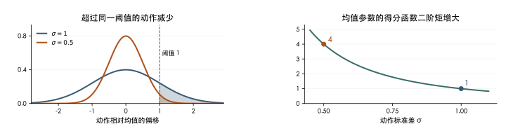
Grieco 等在地面摩擦系数定期变化的 Slippery Ant 上做了两个干预。沿用普通 PPO 的标准差日程，只将学习率按标准差平方缩小，训练后期的回报没有崩落，但对新摩擦条件的适应仍然很差。让普通 PPO 采用另一种表现较好的学习器所产生的标准差日程，回报则达到相近水平。前一个对照改变步长，后一个还改变了行动分布。因此，单凭训练后期的一条回报曲线，无法把性能下降都归于表示丧失了学习能力。把旧网络和新网络置于同一批有覆盖的经验上学习同一新预测，可测量给定经验的学习速度。让两者自行探索，再计入探测和恢复期间的回报，才能判断这种速度差异在控制中值多少。Grieco 等，§4.2，图 3–5
稀有特征的保留与学习可塑性。 设某个隐藏单元仅在罕见红灯前激活为 ，通向直接读出的权重也为 。红灯概率为 时，其瞬时绝对贡献的期望只有 。若将该单元替换并清零其输出权重，红灯处的读出却立刻减少 。Dohare 等的持续反向传播按近期贡献在成熟单元中选择替换对象。该统计能估计常见访问下的贡献，稀少情境中的条件损失还取决于任务何时回到那里、错误反应有多贵。Dohare 等，Nature 2024，方法式 (1) 与算法 1
学习变慢可能有多种来源：表示多样性下降、参数尺度增长、单元饱和或失活、梯度干扰和优化器状态都会改变后续学习速度。若一台老网络学新线路变慢，还可检验其中一个解释。在具有尺度不变性的层中，权重范数增加会减小给定名义步长下的有效步长。Lyle 等用归一化和向初始范数投影研究了这条路径。让老网络和新网络在相同新样本上训练，可分别比较仅调有效步长、随机替换、以同一速率替换低效用单元。测量新目标的学习曲线以及旧红灯处的错误；若仅调整有效步长就已消除学习速度的差距，便没有证据把这项差距全部归因于缺少新特征。回到各自采样的控制任务后，仍需另外检验失误代价与累计回报。Lyle 等，NeurIPS 2024，§§2–4 相关研究问题
Continual Backprop 的特征替换
从到站样本的梯度可分辨单元的哪些连接还能学习。只保留一个隐单元来辨别新出现的路线线索，令激活 ，预报 ，损失 。梯度为 若所有新样本都有 ，而旧输入权重 ，这两个梯度就都为零。此时任意有限的正步长都产生相同的零更新。现在用一个新特征替换它，取 。用目标 、步长 做一次普通梯度更新， 变为 ， 保持 。第二次同样的样本到来时，，输入权重终于也能学习。此次演算只说明一条梯度怎样重新出现，下方延伸块的图把它延续到收敛。
持续反向传播（continual backpropagation，CBP）给常规梯度更新增加了生成并筛选特征的过程。它可以按预定规则直接运行；只有让步长或替换方式受后续评价训练，才又引入元学习问题。在普通反向传播之间，维护每个特征的年龄与近期效用。只从成熟特征中按小比例选择低效用者，重置其输入连接，把新输出连接置零，重新开始计数。网络架构不变，可表示的函数族也没有扩大；改变的是当前特征及其后的优化轨迹。输出连接置零有一个容易误读的作用。若原预测 ，替换第 个单元后 ：新特征不会立刻增加输出，旧特征的贡献却在同一输入处删掉了，只有旧贡献很小时预测变化才小；存在 LayerNorm 等跨单元耦合时还需另外分析。近期很少去充电站，会使一个专门表示低电量的特征看起来无用。现在替换它能否合算，要看新情境学得有多快，以及再遇到低电量时还会作出什么决定。两项因素共同决定这次替换对学习器实际收益的影响。
算法 23.6 持续反向传播的特征替换。
给定替换率、效用衰减和成熟期，初始化年龄、效用及各层替换计数。
每次常规梯度更新后，增加年龄并用当前激活与出权重更新各单元效用。
逐层把 替换率 × 超过成熟期的单元数 加到计数。若计数超过 1 且有成熟单元，
选择效用最低的成熟单元，重抽输入权重、将输出权重置零。
以零重设其年龄与效用，计数减 1。图 从左到右是算法 23.6 的一次替换：在超过成熟期的单元中选效用 最低者；重抽它的输入权重，把输出权重置零；随后在成熟期内保护这个新单元，不再选它替换。输出权重置零使替换当时不给预测加入新贡献，删掉的是旧单元原有的贡献。
换掉的多半是休眠单元：激活 时效用 ，最先排到末位。替换率和成熟期由设计者写定，没有交给元学习。替换也有当下的代价：一个旧单元若对读出贡献 ，替换的那一刻读出就少了 ，要靠以后的样本补回来。这里的 是单元的局部效用，与第 24 章的知识操作 无关。
怎样识别特征替换带来的收益？先用同样的网络、训练流和更新次数，比较无替换、等频随机替换、按贡献替换。前两组的差别反映引入新特征连同删除旧特征的净作用，后两组检验按贡献选择是否额外有益。另在旧问题上冻结评价，再让各组在相同 lifetime 内独立行动，测稀少情境重访和累计主奖励。Dohare 等的 Ant 实验中，论文展示的 CBP 同时用了轻度 正则化；复核替换的单独贡献时，应把仅用相同正则的组纳入对照。若新问题学得更快而罕见情况的决策持续变差，就要重新估计保留旧特征的价值。部署时仍需等待真实重访才能取得这一反馈。实际持续任务未必可以重开旧环境，测试安排本身也要符合允许的数据访问条件。Dohare 等，Nature 2024，方法与图 1–4
替换整个单元只是改变更新方式的一种选择。Elsayed 与 Mahmood 估计屏蔽一个权重或特征会使当前损失改变多少，再用估计的效用调节梯度和扰动。因而可在相同容量、访问与训练预算下，比较保护当前高效用连接、替换低效用特征，以及以相同速率随机替换三种做法。近期损失、稀少情境的再访表现和随后的外部回报应分别评价。原文的流式监督实验与 PPO 控制实验各自使用不同的数据权限。Elsayed 与 Mahmood，ICLR 2024
C 站收入下降后，更换特征可能提高新收入的估计速度，也可能改变其他路线共用的价值读出。若在 A 的动作排序随之翻转，机器人以后访问 C 的次数也会改变。此时必须把特征、预测和高层策略放回同一交互过程，才能确定哪次参数更新改变了下一次选路。
延伸：效用统计与特征替换的小实验
学习可塑性
在一次普通梯度更新后，算法 23.6 的基础贡献统计可写为
其中 是效用衰减率（原文记作 ，此处改记以免与元参数混淆）， 是单元年龄。小于一个单元的替换量通过分数计数积累；成熟期使新单元在学得输出连接以前不会立即删掉。这是原论文 Methods 中的基础机制，不是关于单元长期用途的精确估计。
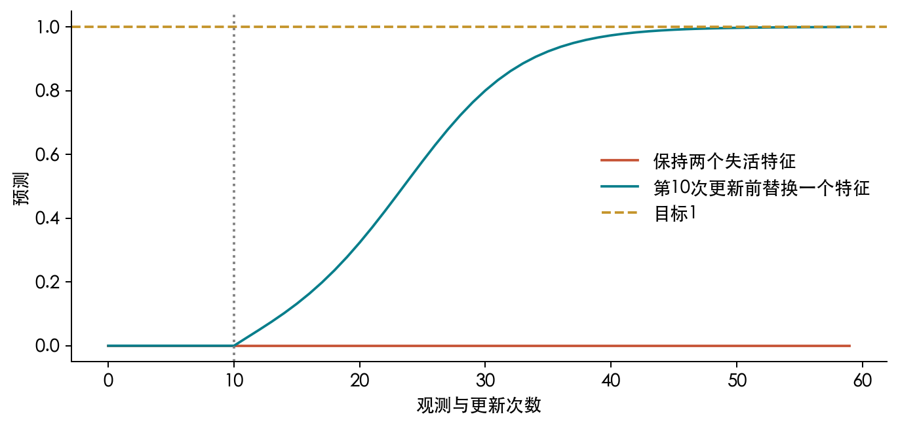
横轴是观测与更新次数，纵轴是网络对目标 1 的预测。红线保留两个失活 ReLU 特征，所有局部梯度为零，预测始终为 0；青线在第 10 次更新前（竖虚线）把一个特征的输入权重设为 .5、输出权重置零。新单元已有激活，输出连接先获得梯度；输出权重非零后，输入连接也开始训练，预测最终超过 .99。图回答的问题是替换怎样让梯度重新出现，把正文单隐单元算例延续到收敛。这是输入与目标均为 1、SGD 步长 0.1 的确定性小实验，没有写出带贡献筛选的完整 CBP，也不检验持续 RL 的收益。
固定经验下的学习与自主行动的效用
旧知识的保持、新知识的习得和交互中的收益可以分别测量。一条更新规则究竟具有哪一种优势，取决于比较时把什么留给了智能体决定。
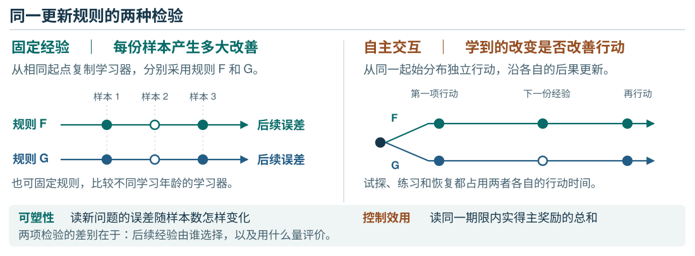
先固定经验。 设 是学习器当前的完整内部状态。复制它，令两份分别用规则 和 处理同一批可合法复用的预测样本 。写 为按序更新后的状态， 为共同测试分布上的期望预测损失。在样本数 下比较 正值表示 在这个比较上预测得更准。测试样本应与选规则或拟合读出的样本分开。若要比较学习可塑性，可以改为固定规则和新问题，比较不同训练历史的内部状态，画出包括 在内的学习曲线。新问题的起始优势还可能来自正迁移；只看终点评分，难以区分已经会多少与后来学会多少。
再让智能体自己选行动。 给两者共同的初始分布、权限、存储与每步计算预算。分别部署含有 和 的完整学习器，比较 ，其中下标 表示相同的真实计分期限。每项奖励都来自该学习器亲自采取的行动。如果两者在所有可能到达的历史上产生相同的动作分布，而且具有相同的外部响应律、决策时序和资源成本，则两条可见轨迹的分布相同。这个结论由逐步条件化得到：同一起点下第一步的动作与后果同分布，给定已有历史后下一步仍同分布。例如两条规则只改写一个不参与选动作的预测读出，两者的行动分布便处处相同。因此 可以与 同时成立。反过来，规则也可能因更早试到有用行为而增加控制收益，在既定预测测试上却没有优势。
固定数据可回答第一个问题，一般不能直接回答第二个问题。即使两组使用同样多的样本和计算，控制中的样本分布也由各自过去的行动决定。无重置的单次部署只给出一种行为的结果。要判断完整学习器的作用，需要可比的独立 lifetime；若借助其他策略的经验，则需说明行为覆盖、环境条件以及采用的校正。23.7 节的预测问题生成与技能练习的元策略把这里的效用比较用于离散选择，推导实际主奖励怎样改变下一次提出新知识的概率。元学习的研究动机，Sutton 的 NSERC 提案 · Alberta Plan
23.7 练习与发现的元选择课件
23.6 节说明，维持可塑性要决定练什么、保留什么。第 24 章将把一个原始步中状态、预测、技能和后果模型的既定更新排成算法 24.1。这些规则里还有许多由设计者固定的部分：步长、怎样从一段经验构造训练目标、提出哪些预测问题、把行动时间分给哪项练习。它们也可以从经验中调整，对应算法 24.1 第 7 行。按第 14 章的分层说法，做这些调整的是系统 3（本课的提法），它的动作作用于学习器自己（第 14 章 14.8 节）。困难在于信用分配：规则的一次改动先改变写入的记忆，再经以后的动作分布改变环境反馈，若干步以后才反映在主奖励中。本节回答，怎样用这样延迟到达的主回报估计全程回报对规则参数的梯度。
本节接的是两件写定的事。第 21 章的去留账说明，练一项技能要占用原始步，只有以后的调用能收回成本才值得练；第 22 章用模型分数给候选排队，分数的写法由设计者决定；23.6 节的特征替换规则也是手写的。本节把提哪个问题、练哪项技能写成按概率抽样的两步选择，再用到期主回报对选择概率求梯度。下图是一次发现从提议到回头改规则的全程，图下的数取自提议价值、练习价值与主回报中的手算例子。
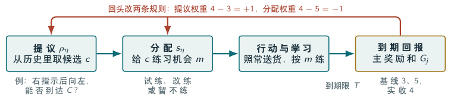
图 从左往右读。提议规则 从历史里取一个候选问题 ，例如看到右指示后向左能否到达 ；分配规则 决定怎样对待它，可以试练、改练旧技能或暂不练；随后学习器照常行动、按安排练习，到期限 收到这段时间的主奖励和 。红色箭头是回头改规则的路：提议的分数乘以 减提议前的基线，分配的分数乘以 减分配前的基线。两条基线是 和 ，实收 ，所以提议权重为 ，分配权重为 。同一笔回报对两层选择给出相反的信号。
不同意见 有人认为用似然比梯度调离散选择方差太大。每次选择要等到期限才拿到一笔回报，许多次选择共用这笔回报，信用很难分清；实践中常用手写的启发式规则代替，例如按学习进度挑练习对象。也有人认为提议与分配不必分开学，合成一个动作也能用同样的梯度，分开只是为了让各自的基线更贴近、方差更小。
延伸：可微递推与离散选择两条信用路线
固定基本行动接口，令 参数化读到 之后的更新，写作 ，与 23.3 节的 同义。评价整条规则可比较 各自交互所得的 。在收到 之后才分开的两种写法，最早能经 影响 。以后到来的回报可以评价此前的写入，不能作为当时已经可读的输入。 改变学习器的方式有两类。若 只调节选择哪一项练习的概率，技能的学习公式仍然给定，改变的是以后会收集到什么经验；若由 决定从已经到来的经验构造什么训练目标、写入哪些预测和策略，同一份输入也可能产生不同的下一时刻记忆。相应地，信用有两条传递路线。可微的内部递推（步长、目标系数等）沿敏感度 传递；离散的随机选择（提出哪个候选、分配什么练习）经选择概率的似然比分数传递。下面先写前一条，本小节其余各段展开后一条。
可微递推的信用分配。 固定一段已经发生的历史，把所有随学习改变并影响动作概率的内部量记为 ，初值与 无关。设更新是确定性的可微递推 ，在这段固定历史上对参数求全导数，有
第一项传递更早写入的影响，第二项是本次更新对规则参数的直接依赖。设动作按可微策略 采样， 只通过 改变动作分布，环境反馈核不含 ，奖励有界，且可交换求导与有限期期望。轨迹概率中只有动作概率因子含 ，其对数导数为 ；乘以全程奖励取期望，再去掉第 步以前的奖励（给定 时动作分数的条件均值为零），得到
得到的是动作概率的导数，未来回报给这项动作加权。对已经发生的一段轨迹， 只需对学习器本身求导，不要求物理环境可微。取短截断的 可以少存记忆，也会丢掉较早更新对当前决策的影响。
两条路线的关系。 离散的选择没有导数可以沿递推前传： 的微小改变不改变已经抽到的候选，只改变抽到它的概率。一般的更新核兼有两类成分。把一步内部的离散随机选择记为 （例如提议的候选与分配的操作），设其概率 显式依赖 、不经 依赖 ；选定 以后，内部量按可微的 递推， 在实际抽到的 序列上计算。环境反馈核仍不含 ，于是轨迹的对数概率对 的导数是两组分数之和，
每项分数乘以它之后到达的主奖励之和，再取期望，就是 。两组都是同一个梯度的似然比估计：前一组先对学习器内部的递推求导，得到 怎样改变动作概率；后一组直接对内部选择的概率求导。只有可微递推时得到上式；只有离散选择时得到下文提议与分配的两项分数。若选择概率也读取 ，第二组还要加上 。路径概率之外，也可以改作有覆盖的分支比较。
预测问题生成与技能练习的元策略
一次练习安排之前，还有一项更早的选择：练什么。回到同一条经验流。那段含 的窗口给出了一个可执行的候选，也允许许多别的读法（无衬线字母表示观测中可检测的符号， 是原始动作）。用中间观测作分支条件，还是无条件重复原来的动作，属于候选的生成。为这个候选安排一次试用，还是把这段时间用于已有技能，属于练习机会的分配。两项选择都有可能影响控制，但面对的备选项不同。
设第 次分配机会到来于原始时刻 ， 是抽样以前可用的信息：已收到的经验、保存的知识及可用资源。 即第 步的 ，对应第 24 章的 。提议规则 生成候选 ；分配规则 决定操作 。两者把第 24 章的一次知识操作细分为先后两步：从提议以前看，，；候选提出以后，按第 24 章的展开 ，。操作可指明对象，如检验新 GVF、练习以 为子目标的技能、再练另一项已有技能，或恢复平常的控制。以后重新考虑是否再练同一项时，已知候选进入当时的输入，无须假装又抽过一次。给定起点合格条件、最长时限和版本， 表示一个检验规格，（）表示由它规定的 GVF， 表示可学习、可调用的技能。 是检验时固定的行为；练好 可以采取不同的原始动作。
拿第 6 步作例子：右指示出现，机器人向左，到 绕行到 ，得 。从这段经验可以提出一个候选： 为刚才是否看到右指示， 为向左、到 就绕行、否则交回的规则， 为调用期内是否到达 ，计入交回的那一步。没到 就交回的调用仍按原定义计分，记为未到达。一般地，经验里的几段观测 分别进入 、 的继续条件和 。这里的 是候选所规定的行为，与技能的交回概率 区分，第 24、25 章用同一记号。
组合概率。 把可引用的有限经验片段作为生成器输入，把选前缀位置、选以后可核验的事件、选执行与分支规则作为随机选择。令 记产生式路径，包括必要的指针和结束选择；每一步只能选部分程序当前允许的操作。若程序编译为 ，则 同一探测程序可能由不同窗口产生。保存实际路径时，可以把各步的对数概率导数相加，用后来取得的回报更新这些选择；只保存最终程序时，使用的是右式的边际概率。若后续程序只通过 使用这次抽样，两种分数都给出下文梯度的无偏估计，且边际分数是路径分数在给定 时的条件期望，，方差不更大。若后续还读取路径中的其他生成信息，只有路径分数仍然正确，或须把这些信息也并入候选。若缓冲区的选窗概率也依赖 ，实际所选窗口同样属于生成路径。若同时生成一个候选列表再筛选，可将整个有序列表视为第一层的输出，第二层记录筛选与实际分配的条件概率。只记录最终练习的技能会漏掉生成的选择。
Veeriah 等让辅助 GVF 的累积量与延续规则随主任务损失的元梯度变化；本节的产生式则选择离散的、可再次执行的预测问题。Option-Critic 所学的终止概率决定当前调用何时交回控制。这里的停练决定以后是否再占用专练时间，已有技能仍可在主任务中调用。Veeriah 等，辅助 GVF 的发现 · Bacon、Harb 与 Precup，Option-Critic
提议价值、练习价值与主回报
固定共同期限 ，令 为从这次决定以后开始的外部主回报。余期及续行规则在下式中固定。若在信息 下提出 、执行操作 ，按此后规则继续，则 是 的条件期望。按上一段的对应，它就是 第 24 章的有限期价值取 、、：，其中 是此后的提议、分配与续行规则。先对操作平均，再对候选平均，得到两项选择前分别能够预测的余期回报： 衡量提出这个候选相对于平均提议的价值，已经包含现有分配规则将怎样使用它。 衡量对已提出的同一候选采用这个操作相对于平均分配的价值。下面的算例使用先前已完成窗口的两项样本均值。提议以前的估计为 3，见到这个候选以后的估计为 5，本次实收 4 分。下文沿同一条经验流算出这两个基线。对提议而言，这份样本高于平均水平 1 分；对所选分配而言，它低于该候选平均可取得的水平 1 分。两个数解释这份样本怎样更新，不能据此断言两种安排的真实优劣。有的候选足以区分两类后果，但平时的行为已提供充足样本，再为它专练未必合算。反之，某个候选值得比其他候选更常提出，仍可能在部分起点应当暂缓。候选的价值随行动机会、当前知识、用途及剩余期限而变。
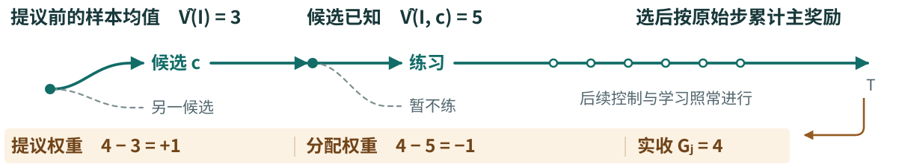
图 从左往右读：提议以前的估计 ；抽出候选 以后估计为 ，再决定练习；此后按原始步累计主奖励，到期限 实收 。虚线是未选中的另一候选和“暂不练”。下方是两项权重：提议 ，分配 。 与 都由先前已完成窗口的样本均值估出。
从全程目标求导。 这一段把开头第二条路线写成具体估计式。假设：(i) 起点分布固定，一段内固定 ；学习器其余部分可用经验继续更新，但给定实际选择和全部过去后， 只通过 、 两种采样概率影响行为与记忆；(ii) 元选择次数和奖励有界，、 对 可微且导数有界，允许交换求导与期望；(iii) 基线 在抽 以前已确定， 在抽 以前已确定。令 ，。前者给定 均值为零；后者给定 均值为零。则 证明梗概。 由 (i)，整条轨迹的对数概率中只有元选择项含 ，故 ，而 。对第 次机会， 以前的奖励已含在 中，乘 或 后条件期望为零，只剩 。由 (iii)，；同理 。减去两个基线不改变期望。
对没有新提议的复查机会，约定 ；只有提议而无分配时，取 。若还随机决定复查谁，该选择本身的分数也须计入。这里的两个 都是条件期望，不是某个候选自己附带的评分。若提议项也减去 ，因 ，该项期望恰为零，候选间的差别就消掉了； 在抽 以后才确定，不满足 (iii)。实际算法可用在本次抽样以前已确定的估计代替各自基线；算梯度时视为常数。若到交回时只决定继续或停练，这一步只有分配项，从交回后的下一笔主奖励起算。若模型其他部分也直接使用 来更新或行动，还要计入相应的导数。以上是有限期目标的恒等式，不要求把评价截止当作环境终止。Williams，REINFORCE
这条经验能检验的三种量
实测奖励和为 。在同一份记录上，可以逐笔验算延迟奖励怎样传到先前的状态动作，也可以验算后续回报怎样调整一次共享预测更新的步长。第 8 步结束时，调整后的步长还未经过第三次转角检验，分指示表也未再次取得右指示左转的后续回报。不同年龄在新题上的学习能力，以及各规则分别行动可得到的全程奖励，仍需另行观察。
已解决的部分与条件 把学习进度当作多臂老虎机的奖励，可以自动排出练习次序，在一组固定任务上加快学习（Graves 等，ICML 2017）。这一做法假设：每次练习的好处大体可加，可以分别记到各次选择上。
已有做法与假设 23.7 节把实收回报 记到每一次发现机会上，也按可加来分配信用。设练习两个技能 、， 要用到 。与不练相比，主回报的增益是：只练 为 ，只练 为 （ 单练学不成，白花时间），先 后 为 ，先 后 为 。若增益可加，先 后 应为 ；实际是 ，多出的 只在这个次序下出现。
未解决的部分 逐次记账只看到每次选择之后的实收回报，次序带来的交互项分不到哪一次选择上。从第一性原理看，候选次序的个数随技能数按阶乘增长，单条经验流上每种次序最多试一次。怎样只凭一条流估计这类交互，没有可用的方法。
怎样检验 操控技能间的依赖强度，从无依赖到强依赖。基准是可重置环境中穷举次序得到的最好次序。测逐次记账选出的次序与最好次序的回报差怎样随依赖强度变化。重复单位是独立运行。
本章小结课件
前七节各自处理一个困难，这里把它们放在一起比较。各方法都在回答同一个问题：哪个量决定怎样写入，用什么后续信号评价它，影响怎样传回元参数。下面先按这三问把九种方法排成两张表，再按粒度整理文献中的证据，讨论评价窗口取多长，最后是自测。开放问题与已有工作放在本章小结之后的两节。
方法对照
前六种方法调的是写入的步子与训练目标里的几个数。
| 方法 | 元参数 | 各法原文的外层目标 | 影响怎样传回 | 留下的困难 |
|---|---|---|---|---|
| 单步元梯度（23.1） | 标量步长 | 后续回报的平方误差 | 单个样本可与期望反号 | |
| Adam（23.2，对照） | 无元参数；、 写定 | 无 | 一阶、二阶矩缩放 | 不按后来误差区分输入 |
| IDBD（23.2） | 逐坐标 | 下一个监督标签 | 递推，忽略跨坐标项 | 只用于固定行为的预测 |
| 元学 （23.2） | 训练折扣、迹衰减 | 固定折扣的外层回报 | 截断的一步敏感度 | 单学 增益不一致 |
| 算法 23.3（23.3） | 可微规则参数 | 有限期主回报 | 递推加动作分数 | 单段样本方差大 |
| 锚定（23.4） | 内部信号的权重 | 外部回报；验证与终测分开 | 内部信号只作加项 | 加项权重怎样定 |
表 方法对照之一：调写入的步子与目标里的数。
第三列写“各法原文的外层目标”，因为三类目标并不相同。算法 23.3 与 23.7 用不折扣、有限期的主回报 ；Xu 等与 DiscoRL 用固定折扣的回报；单步元梯度与 IDBD 用下一个样本的平方误差。它们只在由后来的经验给出这一点上相同。从上往下，外层信号越来越迟，也越来越可信。
后三种方法换的东西更大：整条更新规则、网络里的单元、要练的技能。
| 方法 | 元参数 | 外层信号 | 影响怎样传回 | 留下的困难 |
|---|---|---|---|---|
| DiscoRL（23.5） | 元网络 | 多环境控制回报 | 窗口内 次更新的 | 依赖许多可重置智能体 |
| CBP（23.6） | 无（替换率、成熟期写定） | 无（按局部效用 替换； 只作评价） | 不求导，按效用 替换 | 局部效用不等于主回报 |
| 算法 23.7（23.7） | 提议 、分配 | 到期主回报 | 累计分数 ，两层基线 | 部件信用不保证整体变好 |
表 方法对照之二：换整条规则、单元与练习对象。
影响传回元参数只有两条路，即本章开头一般形式里的两条路径（这是本课的整理）。一条沿写入链：元参数改了这一步写入的记忆，记忆又影响后来的预测，外层损失对元参数的梯度等于敏感度 乘外层损失对记忆的梯度；单步元梯度、IDBD、元学训练折扣与 DiscoRL 走这条路，要求整条写入链可导。另一条经抽样：元参数改的是动作或选择的概率，样本本身不可导，只能用对数概率的梯度乘以后来的回报，即 23.3 节的分数项与 23.7 节的似然比；它不要求可导，代价是方差。算法 23.3 的规则既改写入又改行为，两条路都用。Adam 与 CBP 不把任何外层信号传回，按手写的统计量调整，放在表里作对照。
两张表合起来对应第 14 章系统 3（本课的提法）里“分配学习”一栏的两件事：步长与写到哪里（23.1–23.6 节），练什么、留什么（23.7 节）。这一对应也是本课的整理。
不同意见 有人认为 Adam 不该进这张表：它没有元参数，也不评价写入，本不属于元学习；CBP 同样没有外层信号，只是一种结构维护办法。两者放在这里只为对照。也有人认为“留下的困难”一栏偏重缺点，例如 Adam 在深网络训练中的稳定性、DiscoRL 发现的规则能迁移到未见环境，表里都没有体现。
两张表还显出全章的两组矛盾。第一组是评价的及时与可信：下一个样本给出快而嘈杂的信号，主例的样本梯度 与两种指示等概率下的条件均值 反号；全程主回报 可信，但要等到期限，单段样本的方差也大；内部信号最密，学习器却能自己刷高它，只能作加项（23.4 节）。IDBD、元学 取前者，算法 23.3 与 23.7 取后者。第二组是调得快与学得动：元梯度让步长随经验调整，lifetime 越长，学习器越可能失去吸收新规律的能力。同一起点 下，有效步长 两条样本后新题误差为 ， 时为 （23.6 节开头）。持续反向传播用替换部分单元恢复梯度，代价是删去旧单元在稀少情境中的贡献。
各粒度的证据课件
本章开头的两轴表里，每一个粒度都有文献给出过证据。下表按元参数落到哪里排列，每行列出方法、外层信号、实验显出了什么，以及弱处。
| 落到哪里 | 方法 | 外层信号 | 显出了什么 | 弱处 |
|---|---|---|---|---|
| 整个智能体 | 超梯度（Baydin 等，2018）；PBT（Jaderberg 等，2017） | 下一批损失；种群回报 | 对起始步长不敏感；得到超参数的时间表 | 一个数照顾不到各部分 |
| 不同模块 | 元梯度 RL（Xu 等，2018）；STAC（Zahavy 等，2020） | 主任务的 TD 或策略目标 | 在线调 、、损失系数，胜过写定值 | 外层仍有写定的 |
| 不同历史 | 按状态取 （White 与 White，2016）；事后信用分配（Harutyunyan 等，2019） | -回报误差的估计；事后分布的似然 | 各状态的迹长不同；信用记到起作用的行动上 | 每个状态分到的样本少 |
| 具体参数 | IDBD（Sutton，1992）；Meta-SGD（Li 等，2017） | 下一样本误差；同任务的检验样本 | 无关输入的步长压到接近 ；每个参数一套步长与初值 | 元参数与权重一样多 |
| 目标 | LIRPG（Zheng 等，2018）；辅助问题（Veeriah 等，2019） | 外部回报 | 主任务学得更快 | 外部回报迟，噪声大 |
| 整条规则 | 学到的优化器（Andrychowicz 等，2016）；LPG（Oh 等，2020） | 一批训练任务上的表现 | 能用到没见过的任务 | 训练窗口之外不受检验 |
表 各粒度的证据。分行是本课的整理。
各行的出处如下：Baydin 等发表于 ICLR 2018；Jaderberg 等为 arXiv:1711.09846；Xu、van Hasselt 与 Silver 发表于 NeurIPS 2018；Zahavy 等发表于 NeurIPS 2020；White 与 White 发表于 AAMAS 2016；Harutyunyan 等发表于 NeurIPS 2019；Sutton 发表于 AAAI 1992；Li 等为 arXiv:1707.09835；Zheng、Oh 与 Singh 发表于 NeurIPS 2018；Veeriah 等发表于 NeurIPS 2019；Andrychowicz 等发表于 NeurIPS 2016；Oh 等发表于 NeurIPS 2020。从上往下读，粒度越细，元参数越多，每个元参数的证据越少，弱处一栏也从“照顾不到各部分”变成“样本少”“元参数与权重一样多”。最后两行的外层信号来自一批训练任务，发现的东西在训练窗口之外不再受检验。
不同意见 有人认为按粒度排列掩盖了更要紧的区别。同在一行的两种方法，外层信号可能一个来自跨任务的训练分布，一个来自单条经验流；两者的检验办法和对持续学习的意义并不相同。按本章开头的四种设定来排，这一区别会更清楚。
看多远
23.4 节说过，检验一条元规则要用它没碰过的信号。上一小节又看到，正面证据多来自短评价窗口。就算信号干净，看多远也会改变结论。设定与 23.6 节开头相同：一个共享预测器从 起步，每趟回报是 或 ，各占一半，均值 、方差 ；第 趟以后右指示的回报从 变成 ，均值变成 、方差 。这里不调步长，把步长 写定，逐一试遍从 到 的值，共 趟。按均值与方差的递推，精确计算每一趟写入后的超额误差，即预测与下一趟均值之差的平方的期望；再按三个窗口取平均。
超额误差有闭式。记 为目标均值、 为回报方差，预测从 起写 次后，预测的均值是 ，与 差 ；预测的方差按 累加。两部分相加，超额误差的期望为 前一项是从 起步留下的偏差， 越大消得越快；后一项是每次写入带进来的噪声， 越大越多。窗口短时前一项占上风，大步长显得好；窗口长时后一项占上风，小步长显得好；换任务以后偏差重新出现，换后的短窗口又偏向大步长。
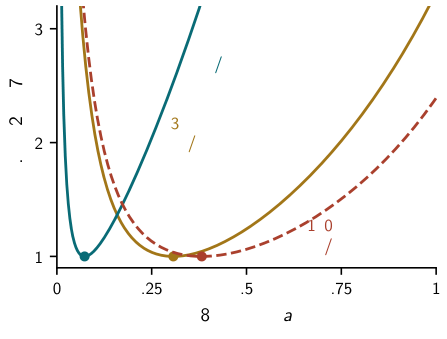
图 横轴是写定步长 ，纵轴是该窗口内的平均超额误差除以这个窗口的最小值，三条曲线的最低点因此都在 。只看前 趟，最好的步长是 ；看整条 趟，最好的是 ；只看第 趟变化之后的 趟，最好的是 。
前 趟这个窗口里，最好的平均超额误差是 ；整条 趟上，最好的是 。拿前 趟选出的大步长走完整条 lifetime，结果比 差得多：写定 时整条平均是 ，写定 时是 。同样的事对元规则成立：外层只看 步，就会挑出在 步内显得好的规则。Wu、Ren、Liao 与 Grosse（ICLR 2018）把它叫作短视偏差：用短窗口的元梯度去调学习率，会把学习率压得过快过小。23.5 节的规则在有限窗口里训练，23.1 节的元梯度只看下一个样本，窗口最短。23.6 节开头的元调步长在前 趟中位数约 ， 趟以后在 到 之间起伏，与这里各窗口的最好值在同一个范围。
由此有三个研究方向，与后面的开放问题互补。第一，外层窗口取多长：太短会短视，太长则评价来得迟，元参数改得慢；能否在线估计窗口截断带来的偏差并修正，还没有成熟办法。第二，元参数分多少组：分得越细，每组分到的证据越少，分组本身能否也交给经验来定。第三，目标由学习器自设时，验收交给谁？23.4 节的锚定原则要求验收者在学习器之外。但自设目标的价值可能要很久以后才显出来；这又回到窗口长短的问题。
不同意见 有人认为短视偏差可以靠在线不断调来弥补：窗口短没关系，只要元参数一直在调，换任务后它会重新调大，23.6 节开头看到的就是这一现象。反对的意见是，在线调只能纠正已经发生的偏差，lifetime 很长时，前期短视造成的损失收不回来。
自测
仓库主例：共享预测器 ，步长 ，元步长 ；第 2 步得 ，第 6 步得 。第 1–4 题对应 23.1、23.2 节，第 5 题对应 23.3 节，第 6–9 题对应 23.4–23.7 节。
- 求第 2 步写入后的 与敏感度 ，以及第 6 步之后的 与新步长 。答要点： ，；；。
- 若第二趟指示也是左、，元梯度的符号与新步长各是什么？这说明单次元更新的什么性质？答要点： ，步长升到 ；两种指示等概率时条件均值为 ，与本例的 反号。单次元更新是有噪声的样本，要靠多次平均。
- 若改用对数步长 ，第 6 步的 是多少？与第 1 题的 是什么关系？答要点： ；IDBD 中 ，第 6 步对数步长改变 。
- 若用第 2 步刚拟合过的 给 计分， 在 上怎样随 变？元梯度会把步长推向哪里？答要点： ，，单调下降， 处导数为 ，元梯度把步长推向 ；检验样本必须晚于写入。
- 第 5 步向左的对数几率为 ，；向左得 ，向右得 。抽到向左、向右时，分数乘回报的样本各是多少？按概率平均是多少？为什么单次抽到向左时，样本与平均方向相反？答要点： 向左的分数是 ，向右是 。抽到向左，样本 ；抽到向右，样本 。平均为 ，就是对 求导所得的 ，指向少向左。分数乘回报是无偏的，单个样本却有噪声，这与 23.1 节单个后续样本会指错是同一件事。
- 四处小世界里，把意外最小当外层准则，学习器多半去哪里？外部回报会怎样？哪一道防线能挡住它？答要点： 暗处观测恒为 ，一次就预测准，意外最小，学习器九成时间待在那里，每步外部回报从 降到 ；把外部回报作主项、内部信号只作小加项，回报回到 ，这是第一道防线。
- 23.5 节的元网络 生成预测器要拟合的目标。它的外层信号从哪里来？迁移到新环境时冻结什么、训练什么？为什么这一做法放不进一条不重置的 lifetime？答要点： 外层信号是许多智能体在许多环境上的后续回报，元梯度在最近 次智能体更新的窗口内沿写入链传回 ；迁移时冻结 ，从头训练新智能体。这一做法要求许多可重置的智能体同时提供样本，一条不重置的 lifetime 只有一条经验流，没有这样的副本，这就是开放问题第四行。
- 奖励由 改为 。有效步长 的误差平方为 ， 的为 。哪个差别是可塑性？学完后旧任务损失 度量什么？答要点： 两行起点相同，同样两条样本后误差 对 ，这是可塑性的差别；旧任务损失从 升到 度量遗忘，两者分开报告。
- 发现规则的两层基线为 、，实收 。求提议与分配的权重；为什么不能把 也减在提议分数上？答要点： 提议权重 ，分配权重 。给定 时 的条件期望为零，乘在提议分数上会使提议项期望为零，候选之间的差别就消掉了； 也要在抽出 以后才确定。
前者看同样多的新样本使新任务误差 降多少，后者看新学习使旧任务损失升多少。两组起点同为 ，两条样本后新题误差 对 ，这是可塑性的差别；步长 的一组学完后旧任务损失从 升到 ，这是遗忘。
与前后章的联系
敏感度与第 17 章的资格迹可以放在同一份学习记忆里，前者是参数对规则的导数，后者把当前误差分给过去的特征。23.7 节的提议与分配把第 22 章的技能与后果模型当作练习的对象；第 24 章把它们放进同一个原始步，用全程主回报评价完整的学习器。
小结
本章撤去了条件⑦，学习规则不再由设计者写定，交给后续经验去调。核心更新只有一行：元参数沿外层目标的梯度移动。梯度在写入链上等于敏感度与外层损失对记忆的梯度之积；在抽样路径上等于回报乘对数概率的梯度。八节依次放宽它的条件：从一个标量步长到逐坐标的步长，并与只看梯度大小的 Adam 对比；从固定行为到规则改变行为；从世界给出的外层准则到更密的内部信号，以及防止自欺的锚定；从调几个数到发现整条规则；再到长 lifetime 中学习器可能失去学习能力，以及维持能力所需的离散选择。可信的评价来得迟，拍板的准则要在学习器之外，这是贯穿各节的两条约束。
| 节 | 结论 | 影响怎样传回 |
|---|---|---|
| 23.1 一次步长的元梯度 | 后续误差乘敏感度 ，主例中 由 调为 | 写入链 |
| 23.2 逐坐标步长与目标里的数 | 逐坐标调步长，分出有用输入；步长分组要与证据相配 | 写入链（Adam 不传回） |
| 23.3 规则改变行为 | 元梯度多出动作分数项 | 写入链与抽样 |
| 23.4 外层准则由谁定 | 内部信号作加项，外部回报拍板 | 决定传回什么 |
| 23.5 跨环境发现规则 | 许多学习器共同改出整条规则，冻结后迁移 | 写入链（窗口内） |
| 23.6 可塑性 | 学得动与遗忘分开测；替换单元 | 不传回 |
| 23.7 练习与发现的元选择 | 提议、分配各减抽样前基线 | 抽样 |
表 本章各节的结论与影响传回元参数的路径。
- 回到章首的困难：评价要等，由晚于写入的样本与到期回报回答（23.1、23.7 节）；单个样本会指错，靠很小的元步长把许多次平均（23.1、23.3 节）；规则会改数据，补上动作分数项（23.3 节）；准则有空子可钻，内部信号只作加项（23.4 节）；调久了学不动，另行度量并替换单元（23.6 节）。
- 元学习沿两个轴展开：规则里哪一部分交给经验，调出的数落到多细的单位上；粒度越细，每个元参数的证据越少。
- 检验学到的元规则，信号要来自受检那一层之外，并与调好的写定规则配对比较。
- 只看下一次预报的元梯度会在平稳流上把步长一路调小；世界一变，同样的新样本改得少，表格预测器里这种变小可以调回，神经网络里的单元老化则要另行处理。
- 本章的部件合起来对应第 14 章系统 3（本课的提法）的“分配学习”一栏；各部件分别变好，整体未必变好，第 24 章撤去部件可以分开评价这一条件。
不同意见 有人认为本章的主线过分依赖元梯度：进化方法（如Houthooft 等（2018）演化可微的损失函数）、基于种群的训练（Jaderberg 等（2017））、手工设计的调度表在实践中调学习规则同样常用，有时更稳。也有人认为把感受当作外层准则的风险说得太重。本章只在小世界里看到暗处；真实的长 lifetime 智能体同时受外部回报约束。内部信号作加项时的作用还没有充分研究。感受是本课的提法，尚未检验。
开放问题课件
四个问题
四个问题还没有答案，难处相同：可信的评价来得迟，来得早的嘈杂或学习器改得动。挑选和排列是本课的整理；第二、三行的问法取自 23.4、23.6 节。第三列把每个问题写成可检验的命题，重复单位都是独立运行。
| 问题 | 为什么难 | 可检验的命题 |
|---|---|---|
| 元步长敏感性（23.2） | 再学一层，又多一个步长 | 元步长跨三个数量级时，超额误差都低于最好的写定步长 |
| 代理目标的偏差（23.4） | 外部回报迟；学习器能刷高内部信号 | 内部准则与留出集分数开始背离，早于外部回报明显下降 |
| 可塑性读数的预测力（23.6） | 要等新任务才测得 | 休眠比例、有效秩预报下一新任务 变差，曲线下面积的置信区间高于 |
| 单条轨迹的元梯度误差（23.3、23.7） | 未走的路线没有样本 | 单条流上的估计与多副本平均的夹角余弦的置信区间高于 ；发现所花交互计入同一 lifetime 后净回报仍为正 |
表 开放问题。
第一行的难处有一个实测的数：23.2 节的四千个输入实验里，IDBD 的元步长取 时，十次运行有一次发散。命题的操控量是元步长与经验流的种类，测量是超额误差。第二行的操控量是内部信号的权重，测量是两种时刻之差。第三行若不成立，两种读数只适合事后解释。第四行把 23.5 节与 23.7 节分开：23.5 节跨学习器，DiscoRL 用许多可重置的智能体在许多环境上发现规则，迁移时冻结；23.7 节在单条经验流上调提议与分配。单个后续样本还可与条件均值反号，主例里是 对 。各部件分别变好，学习器整体未必变好，这一问题留给第 24 章。
不同意见 第一行：有人认为元步长只要取得足够小就比原步长稳得多，一次选定即可；也有人认为长 lifetime 中世界会变，一次选定的元步长迟早不合适。第二行：外部回报极稀疏时内部信号几乎是唯一依据，锚点集本身也会过时（见 23.4 节）。第三行：Lyle 等（2023）发现这两个读数都不能一致地解释可塑性丧失；也有人主张干脆定期在小探测任务上直接测 ，多花一些样本，省去预报。第四行：有人认为元学习只有在许多环境、许多新智能体上才有意义，单一 lifetime 内的元梯度噪声太大；另一方认为持续学习的智能体没有可重置的副本，规则迟早要在自己的经验流上改。各部件分别变好、整体是否变好，留给第 24 章。
开放问题：步长要跟着世界变课件
把 23.2 节的步长问题放到一个最简单的会变的世界里。目标 每步加一个方差为 的随机漂移；观测 ，噪声方差 ；学习器按 跟踪目标。稳态误差是 步长大，跟得快，也把噪声吃进来；步长小，能平均掉噪声，却跟不上漂移。最好的步长只由 与 之比决定。
| 漂移 | ||||
|---|---|---|---|---|
| 最好的 |
表 四种漂移下最好的写定步长（）。
用错的代价不小。 由 变为 而步长留在 ，误差是 ，最好的步长 只给 。反过来， 用在 的世界里，误差 ，近于最好值的五倍。本课用 万步模拟核对过：、 时模拟误差约 ，公式给 。
- 已经解决的。 、 已知且不变时，卡尔曼滤波给出最优增益，在这个例子里就是表中的步长（Kalman，1960）。IDBD 与 Autostep 不需要知道 、，用后来的误差在线调步长；Autostep 对元步长做了归一化，减少调参（Mahmood、Sutton、Degris 与 Pilarski，2012）。
- 没解决的。 比值在 lifetime 中变化时，元步长学习器能否跟上、多快跟上，没有一般的保证。元步长本身也要选，23.2 节的实验里元步长 时十次有一次发散；再加一层去调它，问题只是升了一层。从第一性原理看，估计比值本身需要数据：比值若变得比学习器积累证据还快，任何规则都跟不上。
- 怎样检验。 操控 的切换周期与幅度。基准一是知道真 、 的卡尔曼滤波，给出误差下界；二是事后最好的写定步长。测量超出基准的误差，以及每次切换后回到基准附近所需的步数。元步长扫三个数量级，画敏感度曲线。重复单位是独立运行，每次运行有自己的漂移与噪声序列。
开放问题：短视的元梯度课件
元梯度只能沿有限的窗口回传：算法 23.3 沿整段 ，DiscoRL 只沿 次更新。窗口外的后果看不到。看一个二维的二次损失 。第一个方向陡，曲率 ，梯度带方差为 的噪声；第二个方向缓，曲率 ，没有噪声，起点离最优点远。两个方向起始各贡献损失 ，共用一个步长。
| 第 步 | 损失 | |
|---|---|---|
| 贪心：每步只看下一步 | ||
| 最好的写定 |
表 每步只看下一步的贪心步长与最好的写定步长。数值按期望二阶矩精确递推。
若每一步都选让下一步期望损失最小的步长，第 步选 ，第 步已降到 ，第 步 ，第 步 。下一步的损失主要由陡方向的噪声决定，压低噪声最快的办法是缩小步长；缓方向每步只降一点，下一步看不出它的好处。到第 步，贪心的损失几乎全在缓方向，是写定 的五倍多。
- 已经解决的。 Wu、Ren、Liao 与 Grosse（ICLR 2018）用带噪二次模型说明，短视的元目标会让学习率衰减过快，即上文“看多远”一小节的短视偏差。Vuorio 等（2022）分析元梯度估计：截断回传有偏；补上与动作抽样有关的项不能一致地减少偏差，却能收敛到更好的局部最优，代价是方差更大。
- 没解决的。 窗口多长才够，偏差与方差怎样折中，在 lifetime 尺度上没有可用的界。从第一性原理看，窗口越长，后果看得越全，但一个元梯度样本要占用更多交互，一条 lifetime 能给出的样本数就越少。
- 怎样检验。 操控窗口长度，以及是否加抽样项。基准是在可重置的环境里，用许多独立副本平均出的长窗口梯度。测估计与基准的偏差与方差，再看最终回报。重复单位是独立运行；同一次运行里各窗口的估计不是独立样本。
开放问题：规则能否迁移课件
23.5 节的规则在一组环境上发现，再用到别的环境。沿用上面的跟踪问题，规则只有一个数：步长。
| 学于 | 上误差 | 上误差 | |
|---|---|---|---|
| ： | |||
| ： |
表 在一个漂移速度上学到的步长，用到另一个漂移速度上。
在慢漂移的 上学到的步长，到漂移快一百倍的 上，误差是那里最好值的五倍多；反过来也约为五倍。只有一个数的规则，就已经强烈依赖它是在哪个总体上学的。规则越复杂，越难说清它依赖 的哪一点。
- 已经解决的。 DiscoRL 在一组 Atari 环境上发现的规则，冻结后用于未参与发现的基准，表现与手写规则相当或更好（Oh 等，Nature 2025）。在某些总体之间，学到的规则可以迁移。
- 没解决的。 与 差多远时规则仍可用，没有可检验的刻画。持续学习的智能体只有一个世界， 与 是同一条经验流的前后两段：规则在前一段学，在后一段用。规则从 学到的是 的统计规律，例如这里的漂移速度；对复杂规则，我们不知道它依赖的是哪些规律。
- 怎样检验。 按一个可控的量排出 与 的距离，例如漂移速度、奖励稀疏度或期限长度。基准是手写规则，以及在 上直接学出的规则。测迁移后与基准之差怎样随距离变化。重复单位是独立的发现运行，每次给出一条规则；同一条规则在多个评价种子上的读数不是独立样本。
已解决的部分与条件 Alberta Plan 的第 1 步就要求每个权重有自己的、在线学出的步长，IDBD 与 Autostep 在给定特征的线性情形下办到了（Sutton、Bowling 与 Pilarski，2022；见第 1 章补充阅读）。
已有做法与假设 OaK 的报告摘要写明，每个权重的步长用在线交叉验证做元学习，所有部件都持续学习。大世界假设认为世界远比智能体大，智能体只能近似，所以近似的最好取法会随时间变，学习不能停（Javed 与 Sutton，2024）。照此，上面三页的开放问题都在 Sutton 这条路线的核心：步长要跟着世界变，元梯度只能看有限的窗口，规则只在一条流上学。
未解决的部分 线性、给定特征的结果怎样推到特征本身也在生成与替换的网络（Alberta Plan 第 2 步），还不清楚：特征一换，旧特征上学到的步长就没有意义。可塑性丧失（Dohare 等，2024）说明，只调步长不够，表示也要能更新。元学习所花的交互与计算必须计入同一个 lifetime，元学习的净收益要在这个预算下评价。
怎样检验 按第 26 章的 lifetime 评价：给定部署总体与计算预算，比较写定步长、IDBD 类在线步长、在线交叉验证三种做法。测 lifetime 平均回报，元学习的交互与计算都计入预算。重复单位是独立的 lifetime，每次有自己的世界序列。
补充阅读：已有工作课件
已有工作课件
本章用到的已有工作沿三条线展开：调规则里的数、换整条规则、保住学得动的能力。下表按子问题排列，分行是本课的整理。
| 子问题 | 已有工作 | 本章 | 本章未展开 |
|---|---|---|---|
| 逐坐标步长 | IDBD（Sutton，1992）；TIDBD（Kearney 等，2018）；SwiftTD（2024）；Swift-Sarsa（2025） | 23.2 | 非线性与控制中的稳定性 |
| 训练目标里的数 | Xu 等（2018）；MetaOptimize（2025） | 23.2 | 跨多步的远期信用 |
| 规则改变行为 | 似然比梯度（Williams，1992） | 23.3、23.7 | 降方差的办法 |
| 外层准则失守 | 代理过度优化（Gao 等，2023）；主动推断（Friston 等，2012） | 23.4 | 偏离的在线检测 |
| 发现整条规则 | LPG（Oh 等，2020）；DiscoRL（Oh 等，2025） | 23.5 | 单条经验流上的发现 |
| 可塑性丧失 | Dohare 等（2024）；Abbas 等（2023）；Lyle 等（2024）；Elsayed 与 Mahmood（2024） | 23.6 | 读数能否预报 |
| 发现问题与练习 | Veeriah 等（2019）；STOMP（Sutton 等） | 23.7 | 部件信用与整体 |
表 已有工作，按子问题排列。
表中只留作者与年份，出处如下：TIDBD 是 2018 年预印本；SwiftTD 发表于 RLJ 2024；Swift-Sarsa 是 2025 年预印本；Xu、van Hasselt 与 Silver 发表于 NeurIPS 2018；MetaOptimize 发表于 ICML 2025；Gao、Schulman 与 Hilton 发表于 ICML 2023；主动推断一行为 Friston、Thornton 与 Clark（2012）；LPG 发表于 NeurIPS 2020；DiscoRL 发表于 Nature 2025；Dohare 等发表于 Nature 2024；Abbas 等发表于 CoLLAs 2023；Lyle 等发表于 NeurIPS 2024；Elsayed 与 Mahmood 发表于 ICLR 2024；Veeriah 等发表于 NeurIPS 2019。
几行补充。SwiftTD 把逐特征步长与真在线 TD() 结合，并加上更新限幅与步长衰减；Swift-Sarsa 把它用到同策略线性控制，这时选中的动作还会改变以后的样本。MetaOptimize 把第 次步长的评价写成未来损失的折扣和，处理跨多步的远期信用，本章没有展开。主动推断一派认为意外相对于智能体自己的模型而言，要最小化的是长期平均意外，预期环境丰富的智能体会觉得暗处意外而离开，这是 23.4 节暗处例子的不同意见。LPG 先在简单环境上发现更新规则，再迁移到 Atari；它与 DiscoRL 都需要许多可重置的智能体。Xu 等（2020）的 FRODO 只用智能体与环境的交互经验，用元梯度在线发现训练目标，目标能随时间适应变化；它更接近“单条经验流上的发现”，本章未展开。Abbas 等让 Rainbow 循环玩一组 Atari 游戏；Lyle 等研究归一化与有效步长；Elsayed 与 Mahmood 用估计的效用调节梯度和扰动。休眠单元与有效秩两个读数的定义分别依 Sokar 等（2023）与 Kumar 等（2021）。STOMP 研究怎样定义与奖励相容的子任务，并学习技能及其模型。跨任务快速适应与循环网络内的元学习见本章开头的四种设定。周期重置见Nikishin 等（2022）：定期把智能体网络最后几层的参数重新初始化，回放池保留。收缩加扰动见Ash 与 Adams（2019）：在监督学习的热启动问题里，每轮把上一轮的权重向零收缩，再加一点参数噪声。23.6 节的持续反向传播按效用只换个别单元；这两种做法作用于整几层或全部参数，本章未展开。
补充阅读：练习与发现的细节课件
本部分收 23.7 节在课堂上略过的细节，供需要写代码或检查推导的读者查阅。先是单一经验流上的练习分配。再是分配后续主奖励的发现规则更新（算法 23.7），以及延迟估值与下一次发现机会（算法 23.8）。然后是同一条经验流上的提议、检验与练习（算法 23.9）；最后是用元梯度调整问题（算法 23.10）。折叠的延伸部分给出估值的学习与逐次分解、练习的学习进展、技能变更后的维护与学到的组合偏好，最后是几组分项实验。
单一经验流上的练习分配
离散选择这条路线先要确定评价的对象：一次练习安排的价值。它就是第 24 章知识操作的有限期价值 ，其中 取第 24 章中 的取值 ， 是练习安排， 是评价期限内剩余的原始步数。一项练习一般持续若干原始步。设选择 后到下一次可重新分配为止实际用了 步，收到的外部奖励和为 。固定后续分配规则 。按第一次可重新分配的时刻拆开回报，有
这里 包含试练以后学习器留下的知识。若只看物理停点，两次都回到同一地点的练习会显得毫无区别，即使一次已学会可反复使用的路线，另一次没有。以完整信息 为条件时，此分解是恒等式。若程序只读有限的学习器记忆 ，需要这些记忆足以区分关于练习的未来回报，或接受相应的近似误差。
同一起点上的练习选择。 从距 C 两步的 出发，打滑历史位可能使固定前进策略的两步到 C 预测更准。要决定是否把下一趟用来练习到 C 的技能，还要估计允许改变走法以后的送货收益。举个可以算清的情形。与暂停专练、照常送货相比，再练一趟少收 2 分。练成后，相对于原有技能，每次后续 C 路送货多收 1 分。设两组到下次分配时耗时相同，此后接到相同的订单，技能对其他订单的后果也相同。若剩四次 C 路订单，加练一趟的差值是 分；若只剩一次，则是 分。后一种情况下仍可保留已学技能和模型，遇到 C 路订单照常调用。这里的次数与增量是手算条件；实际改变走法，也可能改变以后能接几次订单。
这与第 21 章的去留是同一种账：先付练习的成本，再按余下的调用次数累计增量。那里练成后每次比照旧多得 分、练习花掉 分，余两次时 ；这里练一趟少收 分、以后每次多收 分。数字不同，只因假定的成本与增量不同。
名额已满时，须另算保留与替换的差值。回收旧项可让另一条路线取得名额，也会丢掉旧路线在余下时间可贡献的收益。若保留了参数快照，计其存储和恢复时间；若只能重学，计再次探索的真实步数。两种安排在这个时刻以前的练习花费相同，所以不进入本次差值。回到 lifetime 起点比较两个学习器时，先前的支出仍在各自的全程奖励中。选择了加练的这趟只给出加练分支的样本。若相似处境从未试过停练且没有可验证的模型，单看误差变小、到站率提高，都无法识别停练后本会收到多少奖励。
把上面的分解用作估值目标，并在每次可重新分配时以当时的估计代替尾值，就得到下面按交回时刻自举的方案；算法 23.8 给出不自举、到期限才结算的蒙特卡洛版本。
算法 有限容量下预测问题与技能的生成和使用（本章的组合方案）
- 提出问题。 从已发生的信号次序或学得的访问表示生成候选。保存事件检测器、目标行为、期限和版本。在满足起始条件的新状态给出预测；结果返回后用既定损失评分。按其他行为采样时，另行处理覆盖和策略差异。
- 分配行为。 根据当前记忆选择照常行动或试练某个子任务，保存选择概率和起始时刻。实际执行的每个原始动作都累计主奖励。在常规行为已经覆盖的动作上，也可后台学习兼容的内部策略；相应的计算仍占预算。
- 使用知识。 技能交回时按实际执行的技能版本取得样本 。规划用这些完成样本估计后果，与可直接选择的原始动作一起更新高层价值。练习目标的内部奖励不进入高层的原任务收益。
- 更新分配规则。 只对已选安排，用 更新 。试练、暂停、改练其他技能的价值均由后续可能取得的真实奖励衡量。若期限只对评价者可见，部署策略仍只使用其可得记忆，可用多种期限评价同一套决策规则。
公式是回报分解；伪代码中的状态压缩、函数逼近与自举则是估计选择。一个高价值项若从未在相似条件下获准试练，已有轨迹并不包含它的完成样本。保留有限的随机探索或使用经过检验的后果模型，可以支持分支比较。固定周期练习可分离择时的作用；从第一步起只用原始动作的学习器才把发现、练习和维护的全部机会成本计入。
单一经验流中的发现规则更新
算法 23.7 分配后续主奖励。 每项新决定保存其实际选择概率的对数导数。用 累计这些分数，用 累计整段的梯度样本。 的输入只能包含相应选择以前可用的信息。
固定该段的 η 与原始步截止 T；置 z^sc=0、Δ_η=0，保留环境和学习器状态。
对每个原始步 t，在发出 A_t 以前依次处理本步实际发生的决定：
若生成候选，读出基线 V̂(I)，从 ρ 抽 c；计算 ψ^ρ。
z^sc ← z^sc + ψ^ρ；Δ_η ← Δ_η − V̂(I) ψ^ρ。
若分配操作，读出基线 V̂(I,c)，从 s 抽 m；计算 ψˢ。
z^sc ← z^sc + ψˢ；Δ_η ← Δ_η − V̂(I,c) ψˢ。
按已选安排行动，接收 R、O；Δ_η ← Δ_η + R z^sc。无新决定的步照常计奖。
更新状态、预测、技能和模型；到下一次选择时再读取新的估计。
段末 η ← η + α_meta Δ_η。段末只结束计分，不重置环境或知识。把每个 展成未来奖励的和并交换求和顺序，就得到伪代码中的 。同一笔奖励可以为几个较早的选择提供样本：有的选择决定能否遇到这个问题，有的选择决定花多长的时间研究它。若把 lifetime 分成短块并清零 ，得到的是每个真实块起点下的块内梯度。前一块发现、后一块才使用的收益就截掉了；用学习器状态的尾值近似，则引入尾值误差。如果用旧规则的经验，所比较规则在生成、筛选、练习、继续及基础行动上的改变都要有路径支持与相应校正。只在末端给一次练习乘权重，无法纠正从未提出过的候选。
手算一次：一段里只有一次提议和一次分配，基线分别为 与 ，此后奖励之和为 。按伪代码， 与上一节的两项权重一致。 不是 TD 的资格迹，也不衰减：在有限期目标里，每个决定要对此后到期限为止的全部奖励负责。
延迟估值与下一次发现机会
算法 23.8 同一条流中的蒙特卡洛估值、提议与练习分配。 在下面的表格版本中， 是元策略步长， 是相应价值表项已经收到的完整样本数。每一期有预定的原始步截止，期内固定元策略参数。新一期沿用世界和已有知识。
在发现机会 τ_j，保存决策前信息 I_j、余期、续行规则和技能版本。
读取 V̄_ρ = V̂(I_j)，抽取 c_j ~ ρη(·|I_j)，保存概率和分数 ψ^ρ。
读取 V̄_s = V̂(I_j,c_j)，抽取 m_j ~ sη(·|I_j,c_j)，保存概率和分数 ψˢ。
保存选中表项 Q̂(I_j,c_j,m_j) 的预报。在已有候选的复查机会只登记分配项。
执行所选安排。每个原始步积累实际主奖励，技能交回后继续按本期规则行动。
到共同截止，对每个已登记的机会 j，从其决定时刻得到 G_j。
用当时的基线积累元参数更新量 ψ^ρ(G_j−V̄_ρ) + ψˢ(G_j−V̄_s)。缺席的分数取零。
对新提议及其所选分配，三项分别令 N(x) ← N(x)+1，f̂(x) ← f̂(x)+(G_j−f̂(x))/N(x)。
指定复查时只更新该类机会的候选基线和所选操作价值；新提议的基线只用新提议机会估计。
按累积梯度更新 η。下一次提议使用新的 ρη，分配使用新的 sη。
到再次分配的起点 I′，比较同一余期下再练与停练保留的 Q̂。
若分支缺少覆盖且差值会影响后续控制，可在可比机会随机试用；保存实际概率，试用时间计入余期。表值更新那一行的三个结果 、、 已在上文逐项算过。基线必须在抽样以前读出并冻结：若用刚拟合过这个 的值作基线，基线就依赖结果，减去它会使梯度估计有偏。另外，共享后续奖励的几次登记并不是几条独立的 lifetime，估计方差时不能当作独立样本。
表项估值有三条成立条件。第一，表中的样本均值估的是某一个提议与分配策略下的到期回报； 一变，策略就变，旧样本估的是旧策略。第二，所以 若跨期变化，应按版本分开计数，或只保留最近一版的样本，不能把各版本的回报混在一个均值里。第三，若要混用旧版本的样本，需记下目标策略与行为策略的概率，用重要性比校正，代价是方差更大；不校正时，均值是各版本的混合，不是当前规则的估值。
相邻机会的回报可以共享同一段未来。在固定截止的版本中，可只存各次决策时的累计主奖励以及决策前的预报、选择、概率和分数。到期后用总累计量减去各自起点的累计量，便得到 。若本次分配在收到 后才作出，它的计分从 开始。多个起点共享的奖励可以训练多个读出；估计精度时仍须考虑同一条轨迹内的相关性。若内存限制只容许少量待结算的机会，一种做法是预先给定长度为 的观察窗口并登记少数机会。此时估计的是 步收益。想在整段未来揭晓前使用估值，可在窗口末自举续值，这需要当时的状态能够预测余期回报，并承担尾值误差。
提议的对数概率分数决定本次权重会传到哪些相似候选。函数逼近时，这种影响由共享参数决定。在交回后的新信息 上，若保留的状态已能支持两种分配，就估计 固定后续规则，给再练的概率增加一个可行的小量 、从停练的概率减去同样多，本次条件期望收益恰好改变 ，其中 使用真实价值。程序中可按分配规则保留两种操作的试用机会。若采用估计优势直接改进分配，它给出的方向取决于 是否判对符号。若采用上面以实收 更新的算法， 提供比较和探索的依据，两种操作今后的实际回报继续修正偏好。当前停练结束专练，已经学成的技能可继续供规划调用。
预测发现与技能练习的在线更新
算法 23.9 同一条经验流上的提议、检验与练习。 此处把算法 23.7 放回基本学习器。一个发现机会可以只生成问题并给出预报；为它分配真实行动、检验它，以及使用其模型控制，都发生在各自合格的时刻。
给定：信号和动作接口、短时记忆、组合运算、主回报与资源预算；段内固定 η。
提议：在已完成的窗口中选择起点，读取其前缀构造 X。
从后缀取可核验的 E，以原始动作和执行时已可见的条件构造 β。
保存 c=(X,E,β) 与版本；登记生成分数 ψ^ρ 和提议以前的基线。
分配：按 s(m|I,c) 选择检验、练习某项技能、暂缓或停练；登记 ψˢ 及分配前基线。
执行：每一原始步取得 R、O，按算法 23.7 给已经发生的决定累计主奖励。
检验 β：先读首次命中，再判交回；用后来可核验的调用更新 GVF 的分组预报。
练习 o：按启动时冻结的版本执行，用子目标反馈更新内部策略的训练副本。
交回：用实际执行版本的段内主奖励、用时和停点更新模型；规划用这些量估值。
到下个分配机会，可选再练、换练另一项或结束专练；此处不重复登记生成。
段末：用 Δ_η 更新 η；保留当前状态、技能及模型，下一段从所处位置继续。继续专练的条件。 初次提出 时取得的收益已经过去。到后一次合格起点 ，只比较从现在开始再练一段与停练保留技能的余期主回报。设 ，只有这两种可选操作，参数为本次选择的对数几率。采用同一后续规则，有 若练习能促成的额外收益已经小于它占用的行动机会，再练的期望更新方向为负，即使原先开始练习很有价值。练成以后的使用次数越少，可赚回练习成本的机会就越少。停练保留当前策略与模型；删除另要计算释放容量和丧失旧能力的影响。
同一结果可以给两个 GVF 预报评分。在同一决策起点遮去新读出，可以查出规划是否改选。两种练习分配的全程收益则要从分配前比较。若旧策略集中在有利起点提出某个候选，应把双方放回共同起点分布估值。到新的发现机会，能否沿用旧估值还取决于新旧程序的后果和操作覆盖。
用元梯度调整问题
前面的提议与分配是离散选择，信用经似然比分数传递。提出什么预测问题也可以写成连续参数，沿内层更新直接求导。若只要求辅助问题容易答，恒为零的累积量就有完美预测；Veeriah 等改用主任务来评价问题。
算法 23.10 沿多次参数更新学习辅助问题。 用参数 决定问什么，用 汇总共享表示、主策略读出与回答器的参数。
- 按主策略采样。提问器从后续观测生成累积量 与延续 ；回答器从行动前的历史给出预测。
- 固定 ，由多步 TD 目标算回答器梯度，在新批次上更新 ，保留这次写入对 的依赖。
- 次更新后，沿这些更新反传主任务伪损失：。保留 继续交互。
改变辅助梯度，辅助梯度改变共享表示，主策略下次行动时读到这个表示；元梯度沿这条链计算，下次行动无需取得尚未发生的观测。反传要保留这段更新的计算图。外层准则是有限展开内的主任务伪损失，属于 23.4 节的第二层：每步可算，本身却由学到的策略和价值给出，也不等于 lifetime 回报的梯度。Atari 实验同时学习累积量与延续，网格实验预设延续；在 57 个游戏上，没有一种辅助方法逐游戏都胜过无辅助的基线。与第 19 章的算法 19.3相比，这里不在候选中挑选，问题本身连续可调。原文把问题参数记作 ，本章把 留给学习规则的元参数。Veeriah 等，NeurIPS 2019，算法 1
补几处设定。回答器学的是同策略的 GVF，目标策略就是最新的主策略；多步 TD 目标里自举的尾部不对回答器参数求梯度。Atari 实验用的是 IMPALA 式的多执行者系统。Zheng 等（NeurIPS 2021）把元梯度学出的问题与预测随机特征的固定 TD 问题网络比较，后者是很强的对照。
不同意见 元梯度调问题的收益不稳。原文在 57 个游戏上没有一种辅助方法逐游戏胜过无辅助的基线；固定的随机问题已是很强的对照，多出的元梯度计算未必值得。沿有限几次更新求导只看到短期效果，一个问题的用处可能要很久才显现，短展开会偏向见效快的问题。
延伸：估值、分解、练习进展与组合偏好的细节
用实际主回报估计提议和练习的价值
候选 已经从旧窗口产生。跟随 时是否读到 ，可以训练该 GVF。若智能体要判断研究它是否合算，观察就要延续到探测结束以后。设候选在原始时刻 提出，随后选择操作 ，例如用一段行动练习促成 的技能。交回以后，规划器还可以调用这个技能，也可以沿用已有行动。直到评价期限 ，智能体才取得这项决定的完整样本 。练习期间和交回以后实际收到的主奖励都在其中。主任务仍在继续。
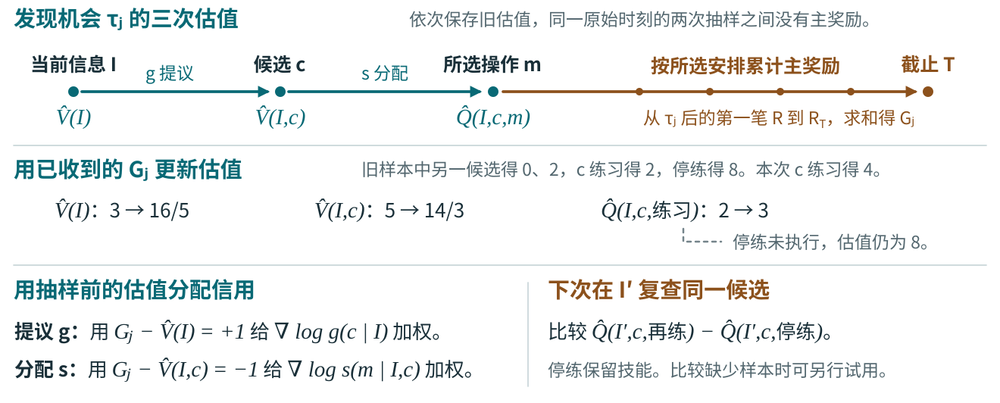
三个价值估计的都是这笔回报。差别在于作出预报时掌握的信息。用 表示以下三行中的任一输入， 表示在该层作的预报。在给定策略及平方可积的回报下， 把 依次取为 、、，使右端最小的预报就依次是 、、。这给出一种直接的蒙特卡洛估值法。
| 决定时能读到的信息 | 用哪些到期回报估计 | 估值的用途 |
|---|---|---|
| ，还未提议 | 在这类起点上按当前提议与分配规则运行的全部结果 | 提议以前的基线 |
| ，已经看到候选 | 这类起点实际提出 后的结果，保留各种分配 | 分配以前的基线，也用于比较不同提议 |
| ，操作已经选定 | 在上述条件下实际执行 的结果 | 在同一起点比较练习、停练及其他可行安排 |
算例中 3 分和 5 分的来源。 设在先前四个互不重叠、均已走完的等长窗口中，智能体处于同一估值表格单元。剩余步数、技能版本和续行规则可比，在该格内各对应的条件均值保持不变。为另一候选收到了 0、2 分。为当前候选 专练时收到了 2 分，暂停专练并保留技能时收到了 8 分。表中三行各有自己的计数。提议前的样本均值为 。给定 的均值为 。给定 且选择练习的均值只有一个样本，为 2。四段反馈可以先后来自同一世界。这里用相同余期的窗口定义局部学习目标。
现在同一格又提出 ，选择练习，后来实收 4 分。发出选择时的两个基线是 3 和 5，分别给提议和分配以 、 的样本权重。回报到达后，三个表项各加一份样本，新估计依次是 、 和 ；用算法 23.8 的增量式写，即 、、。停练一格的原始计数仍为 1，均值仍为 8。一次试用可以提高对练习收益的估计，同时让这次练习得到负的分配权重。前者把 4 与过去练习所得的 2 比较，后者把 4 与使用这个候选时平均所得的 5 比较。停练只有一份样本，动作优劣仍有很大不确定性。
历史只出现一次时的估值。 完整经验历史随时间增长。表格计算依靠一个明确假设，即同格机会对有关余期回报具有相同条件均值。实际也可使三个读出各自读取历史、候选程序及操作的相应特征，以已完成的 做平方误差回归。固定编码 时，读出在行为分布下学到的是 。若把容易成功的起点和很少再有调用机会的起点编码为同一格，旧策略在两类起点间的访问比例就会进入估值。提高数据量只能使这个混合均值估得更准。可检验的修正是保留影响后续调用机会的事前信息，在后来按同一规则分配的机会中比较两种编码的回报预报。
直接回归会因抽样误差或近似误差而偏离前面的两条期望恒等式。在可枚举的有限候选与操作集上，也可以只拟合 ，再按 和 依次求和得到两个基线。这使三个估值针对同一套规则。它也让任何赋有正概率但缺少试用的操作把估计误差带入上层。生成程序多时，对可行操作和候选抽样求平均是另一种近似。用学到的值作采样前基线，即使它暂时失准，实际回报仍给当前策略梯度提供样本。若用 完全替代实收回报，候选间或操作间的相对估值误差就会进入策略改进方向。Sutton 与 Barto，§§5.1、9.2、13.4
同一主回报的逐次条件均值
候选和分配决定的是同一条未来。固定提议、分配及续行规则，假设主回报 有限二阶矩。依次获知 ，对 的预报由 变成 ，再变成 。相邻两次预报之差揭示哪次选择带来了有用的信息。设 命题。 设信息逐次嵌套（ 包含 ， 包含 ），三个预报都是真实条件均值，。则给定 ，上述三项两两不相关，且 。
证明。 条件期望的嵌套性给出 、、。以第一项和第二项为例，给定 时 已知，因此 。同理可消去 。将恒等式 平方并取条件期望，结论即得。证明只用到条件期望的塔性质，不要求 是马尔可夫状态。
这也说明了下文算法 23.8 保存两次基线的原因。以真实条件均值作基线，提议与分配的样本权重分别是 和 。算法保存的是事前估计 ，实际权重还分别加上 与 。基线在相应抽样前冻结，这个估计误差与该层分数相乘的条件期望仍为零。给定所选操作， 的条件均值为零，单次实收却可能很大。若在某类起点从来只提一个候选，该处 恒为零，旧策略下看不到不同提议造成的差异。对其他候选的比较还要取得它们在这类起点的经验。用有限数据拟合的三个读出也未必满足正交性。上式解释了真实回报的变异来源；策略梯度的方差还取决于各选择的对数概率梯度。
提议时机与共同起点上的候选价值
假设智能体在提议前已经知道本轮有无订单，两种起点 各占一半。旧规则 在有订单时以 的概率提出候选 ，无订单时只以 的概率提出它，其余时候提出 。两项提议都沿用同一分配规则 、续行规则和原始期限。设有订单时，无论提出哪项候选，期望主回报都是 。无订单时都是 。这给出了一个可直接计算的例子。
| 事前起点 | ||||
|---|---|---|---|---|
| 有订单 | ||||
| 无订单 |
只看提出 的记录，有订单的比例是 ，平均回报为 。提出 的记录中有订单的比例只有 ，平均回报为 。比较当次提议的价值，应在同一起点比较 和 ，再按同一组起点权重平均。这里两类起点内的差都为零，两项候选的平均价值都是 。原先的一分差距完全来自旧规则选择提议时机的方式。表中四种组合都有正概率。若旧规则在无订单时从不提出 ，这份记录便缺一个条件均值。在给定 随机提议、实际执行约定分配和续行的条件下，有覆盖的格可以用相应记录估计。缺失的格需另取可比经验，或用对该格成立的机制模型约束。上下文赌博机中按行为概率校正的离策略评价，Dudík 等
把上述算例推广到离散的起点层。设 是预先选定的共同起点分布，在这些起点两项候选均可提出。只改变当次提议，固定其后的分配与续行，提议的平均回报差为 旧轨迹若按 随机提议，从可比时期实际访问的起点层估计 ，再按 加权即可。等价地，若旧起点分布为 ，给选中 的实际回报乘以 ，再对全部机会取平均，即可估计 。在上表中取 （各 ），有订单时提出 的权重是 ，无订单时是 ；期望为 ，与按起点分层的结果一致，而只看提出 的记录得到的是 。这要求目标起点与所比较提议在旧规则下均有正概率，且给定 的提议随机数独立于未来环境扰动。稀有提议产生很大的权重。若分配规则也改变而续行保持原样，还须对实际的 乘目标与行为分配概率之比。整段部署都改用新规则，还会改变未来的访问和学习器记忆，单次机会的校正不足以评价整段 lifetime。Swaminathan 与 Joachims，行为概率与估计方差 · Jiang 与 Li，序贯决策中的离策略评价
练习的学习进展与后续损失
更新幅度还会诱使行动者去寻找看起来学得多的样本。设两个标量预测初值都为零，固定 。第一种结果恒为 ，第二种结果每次独立等概率取 。第一次更新的幅度都是 ；在下一份独立样本上，前者的期望平方误差由 变成 ，后者却变成 。因此，要用学习进展决定下一次去哪里练习，须区分可学规律与偶然波动。McLeod 等给定一组辅助预测，以各预测权重改变量的绝对值之和作为内在反馈，让行动者主动收集能帮助持续预测的数据。若部署目标改为送货，就要把绕道练习少送的货与学成后反复调用的回报一起计算。Linke 等，JAIR 2020 · McLeod 等，NeurIPS 2021，算法 1
技能变更后的维护决策
上一小节的规则作用于预测。学习器改写技能时，也要决定怎样维护依赖它的知识。假定学习器知道自己刚改了技能的内部策略。这个信息足以把旧估计标为待检验，却没有说明新技能是否有用。可以保留旧模型，从行为覆盖的原始转移重新估计后果，并限制未经检验的价值参与前驱自举。若完全禁止试用，新技能可能永远无法取得首批样本。因此要分别规定它何时可以试用，以及已有数据何时足以支持规划。当已有模型或可验证的不变性足以推出新后果时，重新实际执行的成本也可以省下。
检验的价值来自结果能改变后续决策。设还剩一次使用机会，已知原始动作净收益为 ，新技能的净收益等概率为 或 ，其中 。可靠检验可以在最后一次选择前揭示技能类型，净成本为 。检查与不检查拥有同一最后决策机会。检查后的期望最优收益是 ，仅用先验的最优期望收益是 。净增益为 。如果两种可能结果都会选同一动作，检验仍可降低预测误差，却没有这项决策收益。检验有噪声时，应按收到的结果形成后验，再比较可行动作。
更一般地，令 表示决定维护方式时已经取得的信息，包括当前可读历史、所改部件、可执行的试用及预算。选维护方式 ，例如直接复用、暂缓自举或有代价地试用。固定以后继续采用的维护与行动规则 ，剩余 个原始步。第一段执行 步，到下一次维护决策或观察窗末为止，。即刻完成的内部计算随其后第一个真实动作计入同一段。维护方式的价值是
表示以后继续使用 的期望收益。若 是完整可用历史，条件期望按该历史理解；若把它压缩成有限状态，使用同一递推还需要该压缩对后果及后续决策充分。计算与存储按共同预算限制。耗时已经通过减少服务机会进入主奖励时，不再重复扣费。单一部署只产生实际所选 的分支。学习其他维护方式的价值，需要有可比的试用机会或具有可检验假设的后果模型。
固定规则、维护策略和可学习的更新规则。 技能定义改变时重新估计其后果，可以直接规定。依据经验选择何时试用，是带信息获取的序贯决策。进一步令 决定怎样从新数据更新技能模型，例如调节旧估计的权重，再按 学习 ，才具体指定了一项元学习问题。元梯度是在可微规则和适当外层信号下的一种解法。若新技能好坏在现有经验上不可区分，换用更复杂的规则仍不能确定它的后果。Xu、van Hasselt 与 Silver，Meta-Gradient Reinforcement Learning
检验学习维护规则的贡献。 固定同一初始知识、替换机会、计算预算和可用交互时间，比较始终复用、按版本限制自举并定额试用、按后续用途学习安排试用。另设试用次数相同、时机在有资格的机会中随机安排的对照，用于区分多试了几次与选对了试用时机。分别报告无实质变化、有利替换和有害替换时的全程主奖励，以及新技能首次有依据地进入规划所需的真实步数。若测试只包含旧值失效的情形，评价会系统性偏爱过分保守的维护策略。
学到的组合偏好及其适用范围
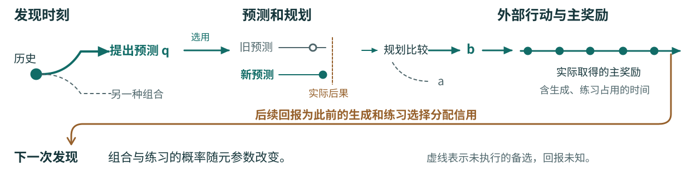
上面的算法说明了一笔主奖励怎样回到较早的选择；本段问这笔信用会改变以后哪些选择。以一个生成位置为例。令 包含当前可用历史、已构造的部分表达式与剩余预算（它是 加上生成到一半的程序，比第 24 章的 更细）， 为此处可用的运算， 为运算 的特征。例如，引用某项已有预测的运算可以读取该预测可核验的频率、过去规划使用它的次数和估计用时。这些量可在选择以前取得。当目标是控制收益时，使用频率本身不能告诉智能体这项预测值不值得继续使用。
将提议规则 的一个产生式因子记为 。在每个生成位置使用 。在给定候选列表后，也可用同样的形式分配练习。对给定 ，对数概率导数具有直接的含义，
右侧第一项是实际选择的特征，第二项是当时所有可选运算的平均特征。将此差乘以后续主回报并取期望，所得是选择特征与以后控制收益的条件协方差。因此，经常出现的组合未必得到强化。如果各个选择的期望后续回报相同，这一位置的期望梯度就是零。令 为算法 23.7 的累计梯度样本，在另一个历史给出的位置 比较两个合法运算 。若特征保持固定，更新 对下次选择的影响为
这给出了跨发现的迁移条件。两次组合不必相同，但新旧选择须在参数更新方向上共享特征。若新历史中的候选只使用从未更新的独立参数，右端为零。共享特征也可能把旧环境的组合偏好带到不合适的地方。因此检验迁移时，应在后来才遇到的机会保留同一候选库和预算，分别读取更新前后的规则。比较候选的分布可以检验发现方式是否改变；比较两种规则各自行动取得的后续主奖励，才能判定这种改变是否有益。
固定特征解释了过去的梯度会影响哪一项新选择。若这些特征也要学习，回报须提供一种条件比较：在相同起点为一项候选付出练习时间，相对于暂缓，后续控制能获得多少增益？第 25 章回答这一问。在此之前，第 24 章 24.3 节先回到单个原始步，用一段真实轨迹逐行核算算法 24.1 的第 1–6 行。
目标的来源与同一事件的两种学习用途
目标来源的可识别性
三站实验预设 A、B、C 三个目的地。第 40,003 步到 C 的样本可以评价给定技能的耗时，实验接口没有让学习器定义新的交付目标。供电任务中，一个学习器可由带载失效自行提出一个目标（如带载后指定时限内灯仍亮），另一个学习器可从外部输入接收相同的目标。若它们随后采用相同策略，动作、负载读数和达成率均可相同。只观测采纳后的轨迹，目标来源不可识别。
一个前瞻对照是固定传感器、目标表述所用的基本概念、动作权限及总预算，独立改变是否出现灯亮但带载失效的反馈，两组均不提供完整目标。比较两组在后续新设备上是否自行指定负载和截止条件，是否为检验该条件选择测量动作。再设一组直接给出相同的目标，用于估计目标已知时的控制能力。即使没有外部输入，学习器也可能只是在预设清单中检索。只有初始清单不含该项、输出表达了由已有成分新组成的对象或时间关系时，才能把新组合的生成与清单选择区分开。
对已经形成的候选，可固定事件定义、评价时刻和测量方法，比较调用技能与照常处理的达成率。要估计自主提出和选择目标对全程控制的作用，应在候选形成前分配实验条件，让两组各自承担询问、测量、练习和放弃其他行动的成本。评价用共同任务的累计收益，或分别用各方关心的后果。其他目标生成规则会改变行为及其后的数据分布；仅靠单一学习器已访问的历史，无法识别无行为覆盖的替代方案会获得的长期收益。
可重复识别的事件及其预测价值
提出新的预测问题时，学习器为可重复检测的事件 指定行为策略、期限和版本。用于选题的转移同时参与了事件定义；检验其预测价值应使用此后与目标行为相符的样本。令 为现有摘要， 为后续可观测、具有有限二阶矩的结果。固定起始分布、行为策略与期限。若行动前已经观测到 ，加入这一变量对最小平方预测误差的影响为
把左边第一项的误差写成细分后的残差加上两种条件均值之差即可得到等式。残差在给定 后均值为零，交叉项随之消失。这个量衡量旧状态混合了多少可区分的后果。有限样本下，应在结果揭晓前固定两个预测值，再用后来的真实后果比较。若行为改变，访问分布和目标策略也可能改变。即使误差确实下降，两个状态下最好的行动仍可能相同。
把事件用作子目标后，学习器还需求出可执行的策略，规定何时交回控制，再用实际行程估计其主奖励、时长与停点。新模型若使高层改选路线，未来可获得的经验也会改变。这刻画了已有知识怎样进入控制。至于当初是否值得为它练习，比较须从练习以前开始，把当时放弃的任务收益也算进去。
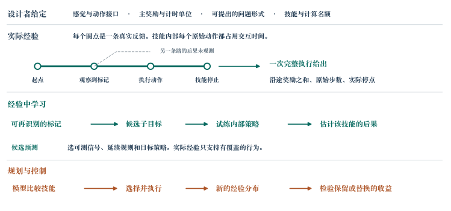
一个事件的两种用途。 设机器人在一段实际行程中首次观测到站点标志 。它可以把已出现的事件、可执行的行为与时限组合成新问题，再用后续行程检验。事件的候选形式、可用的传感通道、原始动作及主奖励来自接口和设计；哪项候选出现、在哪些来路值得记忆、留在哪个知识名额，则可由经验决定。同一事件允许两种不同的学习。
- 预测。 固定目标策略 与时限 ，以首次命中 为累积量、命中或到期即停的 GVF，其值是按 在 步内命中的概率（定义见经验片段与候选预测问题）。问题的答案可由相应行为的后果学习。若数据来自另一种行为，还须处理目标行为的覆盖与分布差异。
- 技能。 将促成 设为候选子任务，可以在可启动的历史上改变内部动作策略，学习何时交还控制。预测的延续系数终止的是计分，技能的终止概率 决定何时把动作选择交还上层。两者可以采用同一个到站信号，也可以在不同时间停止。练习的收益仍用上式比较：多练一趟、停练但保留调用、释放容量给另一项技能，各自改变后续主奖励。在同一起点分布、同一时限和可比评测下，成功率上升说明该技能更容易达成子目标，按时到站若很少改变配送选择，继续专练仍可能不合算。GVF 的定义 · 子任务与技能 · 奖励相容的子任务与规划
延伸：从实际事件构造预测和技能，或以辅助损失改变共享表示
同一次到站提供了三种不同的学习信号。所选路线得到的主奖励可直接更新动作价值；同一轨迹中的耗时和终点又可更新路线模型，供规划比较其他次序；是否到达指定站点则评价执行这条路线的内部策略。直接价值更新与模型规划可以追求同一个外部目标，区别在于回报样本来自真实执行，还是由学得的模型估算。内部策略有自己的子目标。它练得越好，旧路线模型就越可能低估新技能的到达能力。本节先固定站点表示，以便逐项检查这个反馈环。
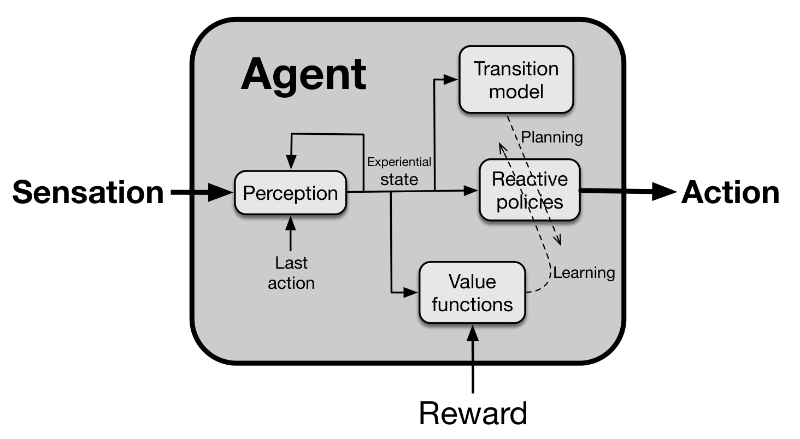
图中状态支持预测和动作选择，模型通过规划影响行为。原图节选自 Sutton 的 The Increasing Role of Sensorimotor Experience in AI。三站任务可具体说明经验、预测与动作选择的关系；该实验使用给定状态表示。
元学习处在这条因果关系的下一层。预测误差能评价先前步长对这个预测的影响；若要评价学习规则对控制的作用，必须继续追踪它怎样改变知识、动作分布及主奖励。固定经验上的误差消融和让各学习器自己行动的全程比较，分别检验其中的两段关系。规划误差与行为选择 · Alberta Plan，图 3
预测问题、技能与后果模型的共同形成
在一个熟悉的路口，智能体能提出两种不同的问题。第一类是给定行为下直至标记处的后果预测。这定义一个预测问题。第二类是以抵达同一标记为子目标的控制。这定义一个控制子问题。两者可以取材于同一次到站经验。前者给技能的后果模型提供知识，后者改变将来可以调用的行为。若内部策略改变，先前预测的是旧技能的后果，哪怕世界的动力学始终相同。
设计者指定的是可以提出什么问题。 例如，观测中有可辨认的标记，算法允许提出到下次出现某标记为止的问题，并规定试练次数和保留名额。设计者由此给了问题的形式。哪些标记实际出现过、选哪一个标记、在何处执行什么动作才能再见到它，以及这项技能是否值得保留，仍可由经验决定。若另外给出最佳路口、最短路线或精确时长，相应的发现或估计就已经由设计者完成。有限问题族中的选择、学习累积信号本身、发现一个新的状态特征，是三个不同的学习问题。Alberta Plan，步骤 10–11
一个技能决定一族可检验的预测。 固定技能 的内部策略，同一趟执行可以提出三类 GVF 问题：段内总奖励、执行时长和在 停止的概率。三项累积信号、共同的延续系数及其逐步学习见第 22 章技能模型中的三类预测问题。若只执行了别的技能，还需能识别相同条件下的目标动作后果；行为永远绕开某条路时，其时长不会因为在那里多建一个预测头而变得可估。状态摘要遗漏了影响路况的早期线索时，同一表项还会混合不同历史，且混合比例随选路变化。
预测通过动作排序影响控制。 三个模型量合成的平均奖励分数 见第 21 章技能的奖励、时长与终点模型；单项模型误差怎样移动分数、何时才改变贪心选择，见同节预测误差、动作排序与长期奖励率。时长模型同理：若只有技能 的时长估计变了 ，其余各项和 不动，它的分数就变 ，只有越过它与竞争技能的分数差时选择才会改变。即便排序改变，模型也可能高估了收益；检验需要让智能体实际执行自己的选择。本小节末“发现、练习与知识替换的分项比较”中的对照实验分别干预技能的练习分配和规划读取的时长预测。
候选的价值取决于用途。 若一个 GVF 是辅助学习任务，它可以通过共享表示影响控制，即使规划从不读它的输出。Veeriah 等让问题网络给出累积信号，部分实验还学习延续系数，用随后主任务的损失评价先前的辅助更新。另一种做法是把预测作为状态特征，让动作选择直接读取它。两种设计的判断标准都关乎预测以后的行为，但参数影响行为的途径不同。对于技能，STOMP 研究了怎样以环境奖励和停止时的额外价值定义子任务，进而学习技能及其模型供规划使用。Alberta Plan 的 OaK 再提出有限容量下的保留与替换。一个候选练习得多，可能只是生成规则偏爱它；练习所占的时间、换掉的知识将来的用途、实际采用技能后的收益，都属于选择规则的代价与回报。预测问题作为辅助任务 · 单流中的预测特征发现 · STOMP
重复事件与可检验的问题规格
若设计者已经列出三个传感器问题，学习器至多能在三者之间选择。要把问题本身也交给经验，仍须给智能体一种描述事件的语言。最简单的一种只允许组合两种可检测信号：先见到 ，随后在 步内见到 ， 有上限；智能体在预算内从实际出现过的有序对提出 。正文经验片段与候选预测问题中的 是它加上前缀条件和执行规则的推广。设计者给出传感接口、组合规则和容量；实际写入哪一对、在什么行为下能再次见到它，取决于这条经验。第一次相遇给出了候选。以后每次符合定义的相遇，才可用来检验发布时的预测。
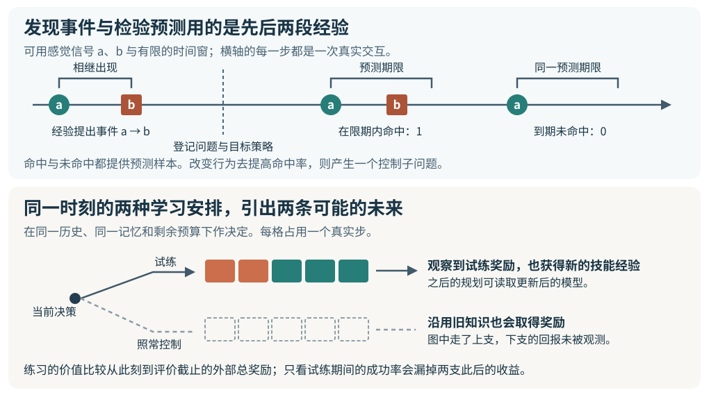
同一事件可以定义一个预测问题和一个控制问题。 预测问题是上一展开块中的首次命中 GVF：样本回报恰为 0 或 1，最后一步的命中仍然计数；递推时须保留剩余期限和检测器记忆。若另问哪些原始动作能在期限内提高命中概率，则需学习一个子任务策略。一个事件可以很容易预测，却完全不受行动影响。比较试练策略与普通行为的命中率时，两者应从相同的起始历史分布出发，各自执行各自的动作。
从命中概率到可调用的行为。 可以先规定在命中事件或用完 步时结束一次试练，学习提高命中概率的内部策略。具备起始条件、策略和终止规则以后，它才成为供高层调用的技能。随后用该版本实际执行的经验估计外部奖励、时长和停点，代入上面的平均奖励分数。目标事件的命中奖励只训练这个子任务。只有技能改变了外部收益、节省了时间或到达了更有利的停点，规划才有理由在主任务中选择它。第 24 章 24.3 节用给定目标的技能隔离这些关系，第 25 章再放开试练时机与保留名额。奖励兼容子任务与 STOMP · 生成并检验辅助任务
发现、练习与知识替换的分项比较
规划使用哪一个预测问题
这个实验回答：在给定的几个候选 GVF 中，由经验选出供规划读取的那一个，能否提高全程主奖励。它对应第 24 章中预测经规划读出进入动作选择的一步，以及本小节提议规则 的一个受限版本（只在三个候选中选）。设路口有三种感觉通道。每个通道都有一位在路口可见的线索 ，以及直行两步后可观测的事件 。算法可提出三种 GVF：选择直行到下一路口，预测到达时事件 发生的概率 。两条路线均用两步，下一路口独立抽取。绕行的收益给定为 0。直行的主奖励由三个事件中的一个决定，学习器不知道是哪一个。各通道在相应线索下的事件概率都是 0.10 或 0.65，出现频率或单独预测某个事件的难易不足以选出有关的通道。
学习器估计各事件发生与不发生时的平均直行奖励 和 。规划一次只读一个通道，并用下式给直行评分。
这是一个受限的奖励模型。它假设同一通道的事件取值足以解释线索与主奖励的关系。对确实影响主奖励的通道，这个假设成立；对其他通道，它可能丢掉决定直行是否划算的信息。由于两路用时和后续机会相同，本例只需把 与 0 比较。
每趟有 15% 概率在看到后果以前随机指定直行探测。在同样的探测上，两组都先记下三个模型对主奖励的预测，等实际到站才计算平方误差，随后更新事件概率和条件奖励均值。每完成 16 次探测，一组选择累计预测误差最小的通道，另一组均匀选择。两组都计算两种选择规则，存储量、更新次数和探测机会逐对相同。其余行程让规划实际选路。这个安排给三种候选提供了共同的训练分布，有限探测的代价从第一步就计入总奖励。
独立重复 96 对，各运行 2,048 个原始步。按误差选择使正确通道选作规划输入的时间占比从 32.9% 升至 90.2%，全程平均每步多得 0.0746 奖励，配对标准误为 0.0027。重复两组实验，让规划器一律读取不分线索的总体直行平均奖励，两组逐对取得相同收益。在本实验中，收益差来自哪一个问题的答案参与了选路。这项实验给定了路线、可选通道和问题形式，学习器选择累积信号的来源并估计其答案。自动构造新的累积函数或学会路线的内部动作，需要另外的学习机制。
子目标选择、技能调用与练习成本
这个实验回答：按经验估值决定练哪个子目标，相对均匀抽取或只用原始动作，全程主奖励各差多少，其中多少来自练习期间、多少来自后来的调用。它对应第 24 章的练习价值和本小节的分配规则 。在仓库与五条支路组成的配送环境中，车辆每到支路末端才看见标记并得到该次送货的主奖励。每个中间位置有两种动作，一种较易前进。位置与可用动作由环境给出。启动集是仓库，技能在抵达目标标记或用满 24 步时交回控制。学习器只可从已经见过的标记中选目标，可以保留一个已部署技能、试用一个候选。环境没有提供好动作或最佳标记的名单。
候选的排序发生在练习以前。 某标记以往实际行程的平均奖励减去当前奖励率乘平均时长，加上到达后估计的差分价值，给出试练优先分。这还只是原有行为走该路的估值；新技能的行为和后果要靠试练得到。选中候选后，车辆用实测转移概率学习各路段较易前进的命令。在单向支路上，较易前进的动作缩短到达时间。再冻结内部动作规则，实际执行以学习奖励、时长和停点模型。选中一个此前没有技能的标记 ，便产生以新策略 为条件的预测问题，例如执行 要多少步和执行后停在哪里。同一趟送货同时给这些问题提供完成样本。此处问题族由设计者给定，预测哪一项技能、它的内部动作和这些问题的答案都取决于经验。只有试用模型与既有选择比较后，保留下来的技能才进入仓库的规划比较。
举一个具体时刻：第 256 步，车辆已看见四个标记，选择了标记 0。第 384 步，它用八次完整执行估得平均奖励 6、平均时长 4.125，八次都停在位置 4。第 388 步模型分数为 ，高于最佳原始动作的估计 1.4374。这趟技能四步后实际获得 6 奖励。技能与贪心原始控制当时都选择从 0 号支路出库。规划选中了技能，差别在于随后由哪种策略连续控制，而非在仓库首次转向了另一条路。
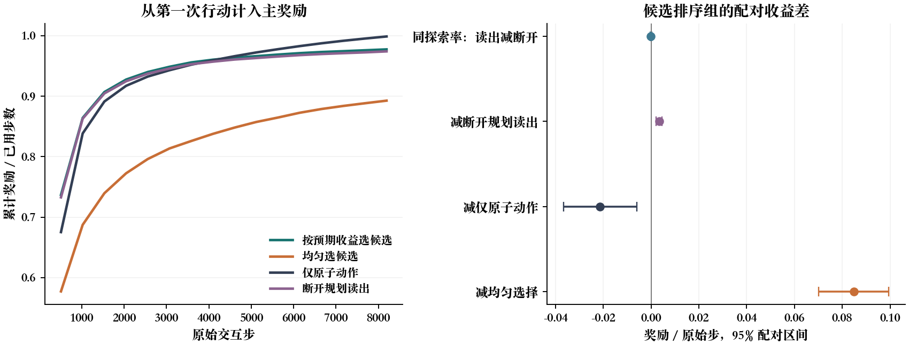
每组 64 对配对运行、每次 8,192 个原始步。前 256 步共同随机探索，随后有 16 个试用机会，每次至多花 64 步试练、64 步估计冻结技能的模型。两种候选选择器使用相同的计算与存储上限，实际行动决定各自完成几次练习和模型更新。均匀试练、按收益排序、只用原始动作的每步主奖励分别为 0.8926、0.9774、0.9987。
| 要估计的作用 | 每原始步实收奖励的配对差 | 95% 配对 区间 |
|---|---|---|
| 收益排序减均匀抽取，均可练习和使用技能 | +0.08479 | [0.07007, 0.09951] |
排序组相对均匀组约 55% 的全程优势来自共同试练窗口内的实收奖励。练习高奖励路线时，车已经在送货。若把这个差额全归功于后来使用技能，就混淆了练习分配与规划调用。这一行是元选择的例子：分配规则 挑哪个候选，全程主奖励就差多少。整套练习是否回本、规划读了技能模型以后是否改选，见第 22.8 节规划读了模型，多得了什么。
元步长、时长模型与闭环控制
这个实验回答：沿 23.7 节开头的可微递推 调节一个预测的步长，预测变准以后，全程主奖励是否随之提高。这里 是时长 GVF 的 TD 更新，；元目标是预测损失，不是 。在三站路网中，固定技能目标，让每一趟的实际时长评价出发时的预测。时长 GVF 的一步更新为 ，其中 。 表示当前技能及状态对应的表项， 在技能结束时为零。令 ，。在一段固定采样轨迹和同一 上，对上式求导得到
右侧使用更新前的表值。第一项 来自步长本身对 的导数，另两项来自 TD 目标和当前估计。学习器在出发时保留预测及其敏感度，到站后才得到实测时长 。取阈值 4 的 Huber 损失，每次完成时给外层步长的梯度是 。每 64 次完成，按平均梯度更新 ，截断此前的敏感度；固定步长组同样计算这些量，但继续用初始步长 0.08。这是对实际路径上时长损失的导数。规划选路会改变未来的访问分布，这部分效应没有包含在上式中。
四组对照改变两件事。 规划的时长来源为按完整行程更新的指数均值，或逐步 TD 时长 GVF。后者可以使用固定或自适应步长。四组均学习两种估计，使用同一内存上限，每原始步给六个合法技能打分。奖励模型、停点价值、动作噪声和基础学习规则一致。平稳条件中环境规律始终固定；变化条件在后半程给 C 支路相关的移动增加 0.65 的原地等待概率，主奖励保持原值。每个学习器从起点起独立行动 24,000 步，共独立重复 64 次，按环境随机数配对。
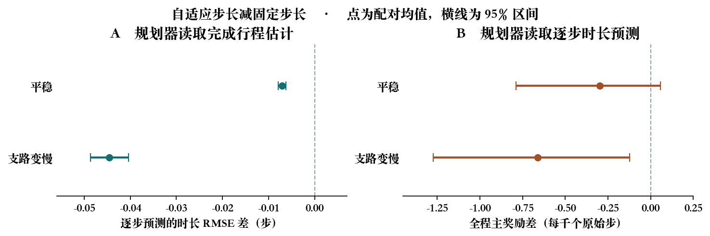
| 时长估计的用途 | 平稳世界，每千步奖励差 | 后半程 C 路变慢，每千步奖励差 |
|---|---|---|
| TD 估计仅供诊断，规划读完成行程估计 | 0，每一步动作相同 | 0，每一步动作相同 |
| 规划读取 TD 估计，自适应减固定步长 | −0.299 [−0.787, 0.057] | −0.662 [−1.274, −0.123] |
方括号为按配对 lifetime 重采样的 95% 区间。断开读出时，可在相同轨迹上比较预测精度：自适应组的时长均方根误差分别少 0.0070 和 0.0446 步，收益逐对相同。接通读出时，平稳世界 21/64 对、变化世界 64/64 对曾选不同路线。以其中一对的第 1,270 步为例（变化只在后半程发生，两种世界在此以前相同，首次分歧都在这一步），B 站上 A 路减 C 路的分数由 −0.00334 变成 +0.00516，由此首次从选 C 改为选 A。分数差的变化中，+0.00487 来自当前时长模型，+0.00363 来自此前规划已经改变的停点价值。两组此后会取得不同经验。在本实验中，元目标改善了一个预测任务，选路随之改变，变化环境的全程主奖励却下降了。
推导的程序写法：从实际主奖励估计练习时机及容量分配
从经验估计练习时机。 本块把单一经验流上的练习分配中的自举方案写成逐次决策的形式。令记忆摘要 仅含决策前已知的信息，例如候选版本、最近同类情况下的成功与失败、规划中两项行为的估计价值差、剩余名额与时间。在允许试练的历史上，以已知的行为概率选择普通行动或试练，保留实际得到的主奖励。若一次安排从 持续到下一管理决策 ，按当前行为规则取样的目标为
只对实际选择的 用 做一次更新。它与该算法第 4 步的目标 相同，只是用下一次实际抽到的安排 的估值代替对 的平均。循环由此闭合：后果预测影响规划，规划改变去往何处，收到的主奖励再改变下一次试练、停练或保留的选择。 以真实原始步计，遇到评价截止就截短；按原始步做完全相同的估值时取 。若试练总发生在最困难的时刻，简单比较两类历史的平均奖励会把处境差异归因于试练。缺少探索、摘要混合了不同历史、技能版本在估计期间改变、lifetime 中很晚才显现收益，都可能使估计失真。仅凭这一条轨迹无法读出未选分支的后果。
算法 一次知识选择与后续估值。 执行顺序与单一经验流上的练习分配的四步算法相同（提出、分配、使用、更新），这里只补三处细节，合起来定义一种待检验的联合学习器。
- 管理决策的选项包括继续主任务、试练、停练保留或替换；保存行为策略的条件概率及其对应的状态和版本，供以后做覆盖检查和概率校正。
- 技能交回时用模型重算可行行为的长期价值，仍保留原始动作作为备选。
- 到下一个管理决策时构造 ，误差只写回上一次决策的记忆摘要与安排；下一决策的摘要只用于构造续值。练习和替换受总上限约束，剩余额度可以闲置。
哪些比较能回答研究问题。 第一项比较保留相同的事件生成器、技能学习和规划，只改变练习时机：固定周期与由经验估值的调度。第二项比较让只会调用原始动作的学习器也在同样的交互、计算和存储上限下学习控制，衡量整套发现机制的净贡献。若还要归因于提出新问题本身，可固定调度，仅替换为设计者预列候选。每组都从第一次交互累计主奖励，包括尚未成熟、最终失败或后来删掉的候选所耗的时间。前述三组已有实验分别改变了候选选择、练习对象和步长；它们没有比较这两种完整学习器。能否赚回发现和练习的成本仍待检验。规划效率如何界定好技能 · 在新任务到来前学习技能图 · Alberta Plan 的知识维护问题
部署中形成的能力。 语言智能体可以把核验结果留在上下文、写入持久记忆或用于参数更新。机器人还要为主动核验、等待和恢复付出物理时间。在同样的初始分布、反馈权限和资源预算下，分别保留或清除新增记忆、允许或冻结参数更新，让各学习器实际运行。分别观察当前表现、再次遇到相似情形时的学习速度，以及整段 lifetime 中的收益。单条已录轨迹只经过一种选择，对未执行行为的评价还需要覆盖、已知模型或额外交互。第 13 章的语言接口 · 第 14 章的物理接口 · 持续强化学习的实验设计
延伸阅读
- Kalman（Journal of Basic Engineering 82，1960），“A new approach to linear filtering and prediction problems”：已知漂移与噪声方差时的最优增益，是 开放问题“步长要跟着世界变”的下界基准。
- Mahmood、Sutton、Degris 与 Pilarski（ICASSP 2012），“Tuning-free step-size adaptation”：Autostep，对 IDBD 的元更新做归一化，减少对元步长的依赖。
- Sutton（AAAI 1992），“Adapting bias by gradient descent: an incremental version of delta-bar-delta”：IDBD 的原始论文，给出逐坐标对数步长与敏感度递推，是 23.2 节的出发点。
- Williams（Machine Learning 8，1992），“Simple statistical gradient-following algorithms for connectionist reinforcement learning”：似然比梯度的经典来源，23.3 节的分数项与 23.7 节的提议、分配都建立在它上面。
- Xu、van Hasselt 与 Silver（NeurIPS 2018），“Meta-gradient reinforcement learning”：用外层回报在线调训练折扣与迹衰减，是流内在线元梯度的代表。
- Oh 等（Nature 2025），“Discovering state-of-the-art reinforcement learning algorithms”：DiscoRL，用许多智能体在许多环境上的回报发现整条更新规则，对应 23.5 节。
- Dohare 等（Nature 2024），“Loss of plasticity in deep continual learning”：长期训练后学习能力下降的系统实测，并提出持续反向传播，对应 23.6 节。
- Wu、Ren、Liao 与 Grosse（ICLR 2018），“Understanding short-horizon bias in stochastic meta-optimization”：分析短窗口元梯度把学习率压得过快过小，对应本章小结“看多远”。
- Vuorio、Beck、Whiteson、Foerster 与 Farquhar（arXiv 2209.11303，2022），“An Investigation of the Bias-Variance Tradeoff in Meta-Gradients”（NeurIPS 2021 Deep RL Workshop 版题为“No DICE: An Investigation of the Bias-Variance Tradeoff in Meta-Gradients”）：比较元梯度估计的偏差与方差，对应开放问题“短视的元梯度”。
- Graves、Bellemare、Menick、Munos 与 Kavukcuoglu（ICML 2017），“Automated curriculum learning for neural networks”：以学习进度为老虎机奖励排练习次序，对应 23.7 节。
- Ng、Harada 与 Russell（ICML 1999），“Policy invariance under reward transformations”：势差塑形不改变最优策略，对应 23.4 节内部信号作加项的问题。
- Veeriah 等（NeurIPS 2019），“Discovery of useful questions as auxiliary tasks”：让辅助预测问题随主任务损失的元梯度变化，对应 23.7 节的发现问题。
- Andrychowicz 等（NeurIPS 2016），“Learning to learn by gradient descent by gradient descent”：用循环网络学出优化器本身，是“怎么写”一行在具体参数粒度上的文献代表。
本章数字的程序与数据见附录：复现材料，第 23 章。
练习
- 用本章小结“看多远”中的超额误差公式，取 、。分别求步长 与 在写入一次（）后的超额误差，以及 时的极限。据此说明只看前几趟偏向大步长的原因。提示： 时为 ，极限 ； 时为 ，极限约 。
- 章首的变化：向左的预测为 ， 的奖励改为 后目标为 。步长 时写出两条新样本后的预测与误差平方；若旧任务仍以 为目标，求两种步长（ 与 ）学完两条样本后的旧任务平方误差。可塑性与遗忘在这里怎样此消彼长？提示： 步长 时预测 ，误差平方 ，旧任务平方误差 ；步长 时预测 ，旧任务平方误差 。
- 把下列方法归入本章小结的两条传回路径：单步元梯度、IDBD、元学训练折扣、算法 23.3、DiscoRL、算法 23.7、Adam、持续反向传播、基于种群的训练（PBT）。哪些方法不属于任何一条？它们靠什么调整？
- 23.2 节“步长分到多细”的例子里，设乙组五个坐标的 各有均值 、方差 ，且彼此独立。分别写出每模块一组与每参数一组时，一次元更新中乙组对数步长改变量的均值与方差。把每参数一组的元步长放大五倍，均值与方差各变成多少？这解释了正文中哪一个现象，又付出了什么代价？
- 为本章开头两模块例子中的每模块一个步长的方案设计一个配对对照实验，按“检验学到的元规则”一小节的六条判据逐条说明以下五项：对照组；种子与数据怎样配对；计分窗口怎样取；元更新的计算怎样计入；换任务后还要量什么。